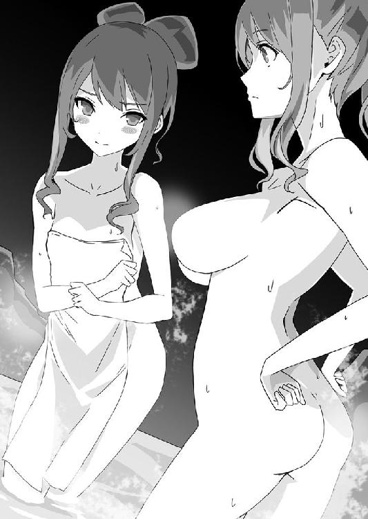

| 忍びっ娘ヴァルキリー（桜ノ杜ぶんこ） | |
| 瀧津孝 | |
| (2014) | |
桜ノ杜ぶんこ
忍びっ娘ヴァルキリー
落ちこぼれくノ一と風魔忍軍の陰謀
瀧津孝
一章 都から来た少女
ガリガリ......ギギギィー......ガリガリ......ギギギギィーーーー......。
闇の中に木を削るような、もしくはえぐるような音が一定の間隔で低く響く。
やがてカタンと木片が落ちる音と同時に、直径三寸（約一〇センチ）ほどの丸い穴が開いた。
その穴から差し込んだ月光が、にゅーっと差し入れられた腕で遮られる。
腕は、戸板の錠として取り付けられている横木の閂を簡単に外し、直ぐさま引っ込んだ。
音もなく開けられた戸板の向こうには、人の影が一つ。
右手には、大工道具のノミのような物が握られているが、取っ手の先の形状はノミと全く異なり、二股に分かれていた。
それぞれの先端は金属製で錐のように鋭く尖り、一方の先端を中心に強く押しつけて回転させれば、木板に丸い穴を開けられる。
名付けて「坪錐」。
家屋への侵入用に使われる特殊な道具だ。
相当大きな屋敷と思われる土間の一部が、月明かりで薄らと照らされた。
敷居を越えて屋内に入った影は、素早く戸板を閉める。
再び暗闇に包まれた屋内に、明かりが灯った。
光源は、玄関口でしゃがみ込む侵入者の手元にある。
坪錐を懐に仕舞った右手には、手のひらに乗るほどの極小の松明が橙色の炎を揺らしている。
火種は、やはり懐の中に入れていた打竹と呼ばれる短い竹筒の中にあった。
小松明が浮かび上がらせた侵入者の姿は......尋常ではなかった。
目の部分だけを出し、鼻、口、額から上を覆った頭巾。上着、袴、スネに巻いた脚絆。その全てが茶色に染められている。
背中には、斜め掛けにした刀。
一般に〝忍者〟と呼ばれる特殊工作集団が、夜間や暗闇で敵の目を欺いて行動するための忍び装束そのものである。
この侵入者が忍者であることに間違いはなさそうだが、小柄なうえ、体格がどことなく貧相で、華奢な印象を与えることから、本来の忍者が醸し出す一種の恐ろしさや不気味さ、迫力のようなものはそれほど感じられない。
忍び装束の人間は、成人男性というより、線の細い少年を想像させる。
しかし、彼には無駄な動きが一切なく、機敏だった。
玄関口から一歩を踏み出そうとした時、彼は瞬時に異常を察知して足を引いた。
斜め掛けする刀の下緒を解き、鞘ごと手に取ると、鞘尻で一尺（約三〇センチ）ほど先の土間を小突く。
反りのない直刀、通称「忍び刀」である。
ガラガラガラ！
畳一枚ほどの地面が、突如として崩れ落ちた。
いや、地面が崩れたのではない。それは、巧妙に仕掛けられた落とし穴だった。
小松明を上からかざすと、地面を装っていた何枚もの薄い板が深さ一間（約一・八メートル）ほどの穴底に落ちている。
しかも、底には数十本の鋭い竹槍が上に向けて据えられていた。
戸板から安易にそのまま進んでいれば、串刺しになっていただろう。
落とし穴を迂回し、彼は草鞋を履いたまま土間から床に上がった。
幅一間弱の廊下がある。
左手に小松明、右手に忍び刀を持ち、廊下へ向かおうとして、彼は再び立ち止まった。
姿勢を低くして、小松明を廊下の床に向ける。
糸のように細い紐が、行く手を遮るようにして足元の高さにピンと張られていた。
一歩、そしてもう一歩下がり、刀の鞘尻で紐を払う......その途端だった。
ビシューーーーーーー！
さっきまで立っていた場所を、廊下の端に隠されていた竹が、凄まじい勢いで薙いだ。
足のスネの高さで竹をほぼ直角にしならせて杭に固定し、張られている紐を何も知らない部外者が足で引っ掛ければ、竹の一端の留め具が外れ、相手のスネを強打する仕掛けになっている。
「臑払い」と呼ばれる、通路仕掛けだ。
彼は、小松明で下の方を良く照らしつつ、足を引き抜くようにして持ち上げ、足の指を小指から親指へと徐々に下ろす「忍び足」でゆっくりと進む。
この歩き方なら、足音が立たない。
少し進むと、また「臑払い」の紐が、今度はジグザグに張り巡らされている。
腰を屈めて紐の位置を確認しつつ、引っ掛けないよう慎重に足を運ぶ。
五間（約九メートル）くらい進むと、廊下は直角に曲がっていた。
その先は同じくらいの長さで行き止まりになっている。
突き当たりの右手には、部屋がある。
室内で灯されている明かりが、木枠に紙を張った明障子をほんのりと照らしているからすぐにわかった。
この時代に明障子を使っている屋敷など、大名を含む上級武士か、経済力のある商人か、有力な寺社でなければ住めない。
ここから先の廊下に「臑払い」の紐は......仕掛けられていない。
彼は、安堵したように大きく息を吐き、改めて右足を踏み出した。
キュル！
慌てて足を引っ込める。
（ウグイス張り！）
人が床を踏むと、板がきしんで独特の高い音を出すように工夫された特殊な廊下だ。
この廊下では、忍び足も通用しない。
ほんの少し考え込んだ後、彼は小松明と刀を足元に置き、腰に巻いていた帯を解いた。
帯の長さは二間（約三・六メートル）以上ある。
一旦広げた帯をくるくると反物のように丸めると、廊下の先へ向けて勢いよく転がした。
目の前に、細い絨毯ができる。
刀を再び斜め掛けに背負い、小松明を口にくわえるなり、廊下に対して横を向き、帯の上に両手をついた。
右手の甲に右足、左手の甲に左足を乗せ、カニのようにしてゆっくりと横へ歩く。
踏みしめていく床からは......全く音がしない。
ウグイス張りの廊下のほかに、草むらなどで音を立てずに進む歩き方「深草兎歩」である。
帯の端まで進んだものの、まだ廊下の半分までしか来ていない。
彼はもう一方の端をたぐり寄せ、つま先を起点にくるりと半回転してから、また丸巻き反物のようにした帯を先へ転がす。
帯の絨毯の上を不思議な格好のカニ歩きでじわりじわりと進み、ついに明障子の前までたどり着いた。
ここまで来ると、床はもうウグイス張りにはなっていない。
帯を締め直し、小松明の火を草鞋で踏み消してから、彼は刀の柄に右手をやって大きく息を整えた。
左手でぴしゃりと明障子を開け放ち、中に敵が潜んでいる場合に備えて身構える......が、室内には誰もいない。
部屋は板敷きではなく、畳が敷かれている一〇畳の書院だ。
真ん中に行灯が一台置かれているだけで、それ以外の調度品は見当たらない。
彼は、上下左右を入念に目配りし、室内に入った。
目に入るのは、正面と右側に板張りの壁、左側には床の間......何と殺風景な部屋だろう。
床の間には、一幅の掛け軸がある。
書で、達筆な文字が綴られていた。
「忍びには身の働きはあらずとも 眼のきくを専一とせよ」
武術や侵入術に優れていなくても、忍者にとって最も大切なのは、深い観察力である、というほどの意味になろう。
平安時代末期、源平合戦で大活躍した源義経の家臣・伊勢三郎義盛が、忍者に必要な心得を和歌に認めた「忍歌」百首の一つと伝わるが、実のところは定かでない。
書をじっと見つめていた彼の眼差しが、カッと見開いた。
床の間に歩み寄り、掛け軸をめくり上げる。
裏には、壁に一尺（約三〇センチ）四方の穴が、手首を入れられるほどの奥行きまで穿たれ、その中に巻物が一巻置かれている。
まさにこれこそ、彼が屋敷に侵入した目当てだったのだ。
巻物をつかみ取り、きびすを返して部屋を出ようとした時。
それまで板壁だとばかり思われていた壁面の一部がくるりと反転した、と見るなり突如別の忍び装束が一人出現し、矢継ぎ早に手裏剣を打ってきた。
ビシッ！ ビシッ！ ビシッ！
侵入者が軽業師のような身のこなしでかわすと、放たれた十字手裏剣は掛け軸の上から壁に突き立つ。
相手は、板壁に設けられていた隠し扉「どんでん返し」の向こう側にある空間に潜んでいたらしい。
不意の攻撃を受けた侵入者は、右手に持った巻物を懐にねじ込み、背中の忍び刀に手を伸ばそうとした。
その右手に、何かが絡みつき動きを封じた。
相手が投げつけた鎖分銅だ。鎖は敵が持つ鎌に繋がっている。
本来は農具である鎌に、重りの分銅を付けた二間（約三・六メートル）前後の鎖を繋げた鎖鎌である。
鎌だけであれば至近距離専用の武器にしか使えないが、鎖が付いていると遠距離の敵を捕らえられ、攻撃力が格段に向上する。
左手で鎌の柄を持つ相手が、右手で鎖をピンと引っ張った。
右手ごと体が引き寄せられるのを防ぐため、侵入者は左手でも鎖をつかんで踏ん張る。
相手も頭巾で顔を覆って両目だけを出しているから性別ははっきりとわからないが、小柄な侵入者と比べて大柄でがっしりとした体つきをしており、成人男性なのは間違いない。
鎖を引き合う力は拮抗し、二人の体は固まったように動かない。
やがて、相手はたぐり寄せるようにして力強く鎖を引いた。
侵入者の体がわずかに揺れるものの、まだ耐えている。
相手は力ずくで引き寄せ、鎌でとどめを刺すつもりらしく、あと一息と見たのか、渾身の力を込めて鎖を引っ張った。
当然のことながら、侵入者はそれに対して全力で抗うと予想していたのだが、思惑は外れた。
鎖が思い切り引っ張られると同時に、侵入者は力に逆らわず前方へと飛び出したのだ。
相手は満身の力で引いただけに、鎖に突然手応えがなくなってのけ反った。
その隙を突いて相手の懐に飛び込んだ侵入者は、強烈な手刀を左手に見舞って鎌を落とし、さらには神速のような動きでその鎌をつかんで振り上げた。
──勝負あった！
そのまま鎌を振り下ろすだけで、無防備な相手を一撃で倒せる......にもかかわらず、鎌を持つ彼の右手は振り上げられたまま、そこで何故か止まった。
その躊躇は、相手が体勢を立て直して反撃するのに十分な時間を与えた。
相手の右拳が、侵入者のみぞおちを突く。
「うっ......」
小さなうめき声をあげ、彼は崩れるように両膝を畳につく。
相手は、もはや無抵抗となった彼を仰向けに押し倒し、鎌を奪い取ってその刃を首筋に当てた。
「そこまでじゃ！」
野太い声が、二人の背後から飛んだ。
「どんでん返し」が再び反転し、着物姿の数人の男女が部屋に入ってきた。
指示に従い、敵役に任じていた大柄な忍者が体を離し、鎌を背中に隠して彼らの前に片膝をつく。
いかつい顔の中年男は、薄汚い小袖に、裾が足首までつくよう窄まった山袴を身につけ、一見すると農夫のような出で立ちだ。その隣には、まだ一〇代後半にしか見えない若い侍。そして顔がしわだらけの小柄な老人。
三人の後ろに、やはり野良着をまとった三〇代から四〇代の男二人と女一人が控えている。
「ゲホッ、ゲホッ......」
みぞおちに正拳をくらった痛みがまだ消えないらしく、ゆっくりと上半身を起こした侵入者は、苦しそうな咳をしながらも、自分を見下ろしている五人を目にするなり、慌ててかしこまった。
「愚か者！ 敵を前にして殺すのを躊躇えば、即ち己の命を失うこともわからぬか！ 何とか申せ、お風！」
いかつい中年男に叱責を浴びせられた小柄な忍者は、うな垂れたまま顔を覆っている頭巾を解いた。
行灯の明かりに照らし出されたその顔は......男でも、少年でもない。
長い髪を後頭部の高い位置で束ねて垂らし、細面で、涼しげな切れ長の目、高い鼻、薄い唇......相当の美形だが、その顔つきにはまだどことなくあどけない雰囲気も漂っており、彼女がまだ二〇歳にもなっていない少女であることは見て取れる。
風......それが彼女の名前だった。
「申し訳ございませぬ！ 今一度、今一度、われに機会をお与えください！」
「忍びの任務に、二度、三度はない。しくじれば、死ぬこともあろう。何故、鎌を奪い取っておきながら、才蔵の首筋に当てるのを躊躇した？ 殺すのではない、ただ動きを封じるだけではないか」
中年男の言葉にさも同意するかのように、大柄の男も頭巾を取り、少女を見た。
才蔵という名の男は、二〇代と思われる精悍な風貌だ。
「それは......」
風は唇をかんだまま、黙り込んだ。
自分でも、どうして腕が止まってしまったのか、理由がわからない。
風から納得できそうな返事が出てきそうにないと見た中年男は、小さな溜息をついて振り返った。
「助五郎、団右衛門、狭霧、お主らの意見を聞かせよ」
「はっ、才蔵に急所を取られた時点で、この者は失格かと」
「いかにも、助五郎の申すとおり。わしも失格と存ずる」
男二人が即座に答えたが、狭霧という名の女はかなり迷っているようだ。
「お二人の申されようももっともではございますが、お風はそもそも茜組に属する者ではありません。此度の〝茜組忍道考試〟にあたっては、別して配慮を加えてやる訳にはいきますまいか？」
「狭霧、日頃は人一倍厳しいお主の言葉とも思えぬぞ」
団右衛門と呼ばれた男が口を挟んだ。
「茜組であろうとなかろうと、忍びに必要な心技体は変わらぬ。一昨日、昨日、本日の三日間は、これまで積み重ねてきた成果を我らに披露する年に一度のハレの舞台じゃ。
そして今日は、敵営と仮定したカラクリ屋敷に潜入し、真剣で生身の人を相手に実技を試す最終日。その本番で実力を出せぬようでは、忍び失格と言われても仕方あるまい？」
「はあ......やむを得ますまい。私も失格に同意いたします......水乃には気の毒ですが......」
狭霧が口にした「水乃」という言葉を聞いて、少女の顔色が変わった。
「そ、そればかりは！ われは、このままおめおめと京には戻れませぬ！ 水乃様に会わす顔もありませぬ！ 何卒お考え直しを！ 伏してお願い致します！」
しかし、這いつくばって懇願する少女を見る前列の中年男の表情はぴくりとも動かず、隣の若侍に視線だけを向けた。
「拙者も、お風にくノ一の資格なし、と判じます。それでよろしゅうござるか？」
問われた侍は、さっきからずっと腕組みをしたまま目を閉じて何かを考え込んでいる。
若侍の傍らにいる老人には議決権がないのか、意見を一切求められない。
くノ一。
それは女忍者の別名だ。
どうしてくノ一と呼ぶのかについては、「女」という漢字を一画ずつ分解すると「く」「ノ」「一」となるためであるとか、男性の体には二つの目と耳、そして口、へそ、肛門、尿道、さらに鼻は一つと数えて計九つの穴があるが、女にはさらに女性器が加わるので「九ノ一」と名付けられたのが起源だとか、いろいろな説があるもののはっきりしたことはわからない。
「いかが？」
再度呼び掛けられて、若侍はようやく目を開けた。
「新右衛門、この者は水乃が上方（近畿地方）で拾い、手塩に掛けて育てたうえで、はるばるこの上田まで寄越したおなごであろう？」
「はい。摂津国（大阪府北中部・兵庫県南東部）の石山本願寺に潜入しておった水乃が、戦乱のどさくさで野武士に商人の両親を殺され、飢え死に寸前で道端に行き倒れていた幼いこの者を救ったのが七年前のこと。以来、京の忍び宿で家族同様に養い、忍びに必要とされる知識と技を十分に叩き込んだとの触れ込みでござった。
そして、真田のお家に仕える一人前のくノ一として通用するかどうかを見極める年に一度の茜組忍道考試に、一五となった今年是非参加させてやってもらいたいと。
本来であれば、くノ一を目指すおなごが六つになれば必ず入って訓育を受ける〝茜組〟以外の者を加えた先例などないのですが、水乃のたっての願いゆえ、此度に限って許したのです」
「うむ。あの水乃が自ら鍛えたというおなごであれば、それは茜組に属していたも同様。何の障りもない。
忍びに必要な知識を問う一昨日の筆記・口答吟味において、読み書きは無論、和歌、茶の湯、能・狂言といった諸芸に通じ、諸国の風土・風習にも詳しかったとのこと。また、切り株を的にした昨日の手裏剣術吟味では優れた腕前を見せ、風は参加した者たちの中で突出した成績をあげたと聞き及んでいる。
水乃が一風変わったおなごを寄越したと小耳に挟んだゆえ、この者の最終日だけでも吟味に加わらんと上田より出向き、しかとこの目で見届けたが、敵の屋敷に見立てた今宵の潜入実技においても、巻物を手に取るところまでの技量はことごとく見事であった。のう、じい、そう思わぬか？」
若侍に話しかけられた老人は、一言も発せず、ただニヤリと笑みを返してうなずいた。
「されば、この者を合格にせよと？」
新右衛門が、あからさまに不服そうな顔をした。
「いや、わしもそこまでは言わぬ。此度合格したのは、何名だ？」
「間見（諜報・不正規戦闘）が一人、見分（謀略）と目付（防諜）がそれぞれ二人、計五名でございます」
「風は、間見を希望しておったのだな？」
いきなり若侍に尋ねられ、風はまともな返事もできず、ただうなずいた。
（この若い武士は何者なのか？）
若侍の隣に立つ中年の男が、信濃国（長野県）の真田家が抱える忍者集団「草の者」の頭領・角田新右衛門であり、後ろの三人が幹部連中であることを、風は、真田の庄に着いた三日前、最初に挨拶したから当然覚えていた。
しかし、この若侍は初対面だった。
いかに武士だからといって、こんな若者に草の者の指導者である新右衛門が敬語を使って恭しい態度をとるなんて......と風は疑問に思った。
「五名は、明日から上州（群馬県）の忍び小屋へ赴かせ、実地の研修に入るのか？」
「仰せのとおり。七日間、彼の地にて仕上げの教練に」
「ならば、この者は、ひとまず間見のくノ一見習いとして、五人と共に七日間を過ごさせ、そこでの身の処し方、働き具合をよくよく勘案してから合否を決めてはいかがであろう？ なあ、新右衛門、今一度、機会を与えてやってくれ。わしからも頼む」
ぺこりと頭を下げた若侍に、新右衛門は大あわてでかしこまった。
「若、何をなさいます！ 頭をお上げくだされ！ 若がそこまでおっしゃるならば、我らに否やはございませぬ！」
「まことか！」
若侍は、満面に笑顔をたたえ、風に目をやった。
「風とやら、喜べ。許しが出たぞ」
これまでのやり取りをただポカンと聞いていた風は、我に返って取るものも取りあえず平伏した。
「有り難き幸せにございます！」
「お風よ」
新右衛門が膝を屈め、囁いた。
「お主はよくよく運の良いおなごじゃ。若様にくれぐれも感謝するがよい」
「あの......若様とは？......」
風が顔を上げると、新右衛門は傍らの若侍を仰ぎ見た。
「このお方は、信濃国の小県、吾妻、上野国（＝上州・群馬県）の沼田を領する我らがお屋形・真田阿波守昌幸公のご次男・源二郎信繁様じゃ」
「ええっ!? 真田様の若君が斯様な場所に！」
風は目を丸くし、頭を下げるのも忘れて、若者の顔をまじまじと見つめてしまった。
武人らしからぬ温和な容貌が、笑顔になると無邪気で溌剌とした明るさも加わり、風の目にはそれがとても眩しく、魅力的に映った。
真田源二郎信繁。この時まだ一七歳の彼が、後年真田幸村の名で武名を天下に轟かすことを、風は知るよしもない。
「そう驚くな。わしは、父上同様、戦さにおいて忍びの衆ほど大切な家臣団はないと思っている。〝彼を知り己を知れば百戦あやうからず〟。この言葉を知っているか？」
「孫子でございます。昔の唐土（中国）で活躍した兵法家・孫武の兵法書かと」
信繁の質問に、風は即座に答えた。
「さすがだな。敵の情勢を知り、味方の状況を把握して見極めれば、たとえ一〇〇回戦っても敗れることはない、という教えだ。
その敵の情勢をつかむうえで、忍びの衆以外に役立つ者たちがいようか？
我が真田家中においても、そこのところをわからず、戦さは槍働き（戦闘での武功）のみで勝負が決せられると勘違いしておる重臣共が少なくない。
わしはかねてから父上に、草の者の差配に関わらせてくれと願い出ていたのだが、此度ようやく茜組についてのみは口出しして良いとの許しを得た。その初口出しが、お前じゃ」
「は、はい！」
風は、思わず素っ頓狂な声をあげた。
忍者は、大名や領主に仕える直属の家臣であり、正規の戦闘部隊からは独立して諜報、謀略活動などに従事する特殊工作部隊である。
しかし、武士の中では足軽と同じ最も低い身分であり、同じ家中にあってもその独特な活動内容から「卑しい者」として差別される風潮が全国的に見られた。
ところが、この真田家では、領主ばかりかその息子までもが率先して忍びの活動に加わり、彼らと親しく交わり、あろうことかまだ正式に採用された訳でもない自分のような者にまで直接声を掛けてくれる。
これは風にとって、驚嘆であると同時に、感激するのに十分な出来事だったと言えよう。
「忍びとして生きるのであれば、日の本（日本）の中では真田家が一番良い」
かねてから、水乃は口癖のようにそう言っていた。
その言葉の意味が、風にも何となくわかったような気がした。
「されば、風、今宵は草の者の本拠であるこの屋敷に泊まり、くノ一に内定した他の五名と共に、明日の夜明けを待って上州へ出立するがよい。忍び小屋までの道中は、じいが案内する」
信繁に視線を向けられた老人は、風に優しい笑みを投げかけてこくりとした。
「よ、よろしくお願いいたしまする」
思いも寄らない展開に、風はただ流れに身を任せるだけだった。
「新右衛門様」
ここで、狭霧が声を上げた。
「くノ一の吟味がひとまず片付きましたならば、私はこれより上田城下に入ってみとう存じます」
「おお、その件があったな。ご苦労だが頼む。お屋形様がおわす上田に賊の侵入を許すなど、あってはならぬ大失態じゃ。斬られた猫八の傷から察して、相手は相当の遣い手であろう。抜かるなよ」
「承知しました」
「よし、俺も一緒に上田へ戻ろう」
狭霧と共に「どんでん返し」の扉から出て行こうとした信繁は、思い出したように立ち止まり、振り返った。
「風、七日後にまた会おう。それまでの間にお前がどこまで一皮むけておるか、楽しみにしておるぞ」
「このご恩は決して忘れませぬ！ 必ずやご期待に添えるくノ一に、われは......われはなってみせます！」
風の言葉が終わるか終わらないかのうちに、信繁の姿は扉の向こうに消えていた。
ぼんやりと扉の奥を見送る風の横で、助五郎が眉間にしわを寄せている新右衛門の顔色を窺った。
「やはり、拙者と団右衛門も上田に行った方が良いのではありませぬか？」
「そのような余裕はない。今は真田のお家にとって、危急存亡の時。助五郎は越後国（新潟県）へ、団右衛門は美濃国（岐阜県南部）方面へとって返し、現地の情勢を事細かに探ってもらわねばならぬ。それに狭霧は、戦さ忍びとしては水乃と並ぶ腕前を持つくノ一。そうそう敵にひけは取るまい」
「はあ、それはそうですが......」
真田家の本拠地・上田城で何か異変が起こっているのは確かだ。
しかし、それがどのような事なのか、今の風が気軽に尋ねられるような雰囲気ではなかった。
それよりもまずは、一人前のくノ一として認められるために、明日から始まる上野国での実地研修で結果を出さなければならない。
自分を助け、機会を与えてくれた信繁の期待に応えるためにも。
さて、この物語を進める前に、風がいる信濃国・上田を取り巻く情勢、そして国内の動向を説明しておかなければ、登場人物たちの行動の意味や緊迫感は今ひとつ伝わらないだろう。
時は、天正一二年、西暦で言えば一五八四年にあたる。
二年前、京を中心に日本の中央部を支配下に治め、天下統一に最も近い存在だった織田信長が本能寺の変で没すると、織田家中の権力抗争に乗じて台頭したのが羽柴秀吉だった。
秀吉は、信長の草履取りを振り出しに出世を重ね、ついには織田家の重臣の一人にまで成り上がったばかりか、本能寺で主君を討った同輩の明智光秀を倒し、最大の宿敵だった織田家の筆頭家老・柴田勝家をも滅ぼして、天下の主導権を握るに至った。
ただし、この時点で秀吉はまだ織田家の家臣であり、信長の嫡孫（嫡男の嫡男）でわずか四歳の三法師（後の織田秀信）を奉じて、実質的に織田家の実権を掌握していただけに留まっている。
この一五八四年こそ、秀吉が自ら天下人となって行動を起こし始める節目の年となった。
本来織田家を相続するはずだった信長の嫡男・信忠は本能寺の変で命を落とし、次いで有力な継承者と見られていた三男・信孝も前年の天正一一年に秀吉によって自害させられていた。
残る織田家の実力者は、次男の信雄を残すのみ。
この信雄に、秀吉は年賀の挨拶をしに居城の大坂城まで来るよう命じたのだ。挨拶にこちらから出向くというのは、相手が目上の場合である。
父親の家臣だった秀吉に頭を下げることのできない信雄は、信長のかつての同盟者であり、甲斐国（山梨県）・駿河国（静岡県東部）・遠江国（静岡県西部）・三河国（愛知県東部）・信濃国の五か国を支配する徳川家康と手を組んで反旗を翻した。
世に言う、小牧・長久手の戦いである。
六万から七万を擁する羽柴軍に対し、織田・徳川連合軍は三万と劣勢だったが、三月から四月にかけて尾張国（愛知県西部）で起こった局地的な戦いでは、家康の見事な指揮が功を奏し、羽柴軍に少なからず打撃を与えていた。
五月に入って、戦線は膠着状態に陥った。
風が、真田家のくノ一になるため信濃国の真田の庄に入ったのは、そんな大合戦が行われている真っ只中だったのだ。
信濃国の一角に割拠する真田家にとって、この戦いは無視できない大きな意味を持っていた。
そもそも真田家は、現当主・昌幸の父・幸隆の代から甲斐国の武田家に仕えていた。
名将・武田信玄が急死して家督を息子の勝頼が継ぎ、真田幸隆が病死した後に昌幸が家を相続した後も、真田家の武田家に対する忠誠は変わらなかった。
しかし、信長による甲州征伐によって勝頼は自刃し、武田家は滅びてしまう。
武田家の主要な重臣たちが次々に捕らえられ、斬首されていく中、信長に従属した昌幸は幸運にも罪に問われず、小県郡の本領も安堵されたが、平穏は長く続かなかった。
織田家の支配下となった武田家の旧領・甲斐国と信濃国は、本能寺の変による信長の死によって主のいない空白地帯となり、周りで形勢を窺っていた関東の北条、東海の徳川、越後国（新潟県）の上杉による争奪の場と化して大混乱に陥った。
こんな状況の中で、昌幸は小さいながらも独立した大名としての一歩を踏み出したのだ。
周囲を強敵に囲まれ、その時々に頼りとする大名を切り替えながら命脈を保ってきた昌幸が、天正一〇年から臣従しているのが徳川家康である。
このため、現在の真田家は、南の北条家、北の上杉家と交戦状態にある。
ところが家康は、西の羽柴軍と対抗するために、北条と和睦を結んでしまった。
これは、真田家の防衛機構の崩壊を意味する。
何故なら、北条が攻めてきても、和睦を結んでいる徳川が援軍に来てくれる可能性はなくなってしまうからだ。
小牧・長久手の戦いが勃発して後、徳川は北条との結び付きをさらに強固なものにしようとする動きも見せている。
しかも、徳川と北条との和睦条件の中には「甲斐国、信濃国は徳川、上野国は北条がそれぞれ領有する」という、真田家にとっては見過ごせない内容が含まれていた。
これは、真田家が苦心惨憺して手に入れた上州の諸城について、領有権は北条家にあると宣言しているに等しい。
独力で切り取った上州の地を、横合いからどうのこうのと言われるのが、昌幸には我慢ならない。
刻々と変化する周辺諸国の情勢を正確に把握するため、昌幸は一人でも多くの草の者を派遣しなければならなかった。
そのため、優秀な忍者を大量に養成することも急務であり、それは男だけでなく、女忍者であるくノ一の数を増やす方針にも繋がった。
物語に戻ろう。
興奮冷めやらぬ風がようやく屋敷で眠りに就いたのは、そろそろ丑の刻（午前一時から午前三時）になろうという真夜中だった。
この時、上田城では、大事件が起きていた。
かがり火が設置されている場所からは遠いため薄暗く、歩哨もいない三の丸の堀際を、二つの影が音も立てずに駆ける。
一人が、もう一人を追っている。
どちらも忍び装束だ。
逃げている方が立ち止まり、背中の忍び刀に手をかけたままの追跡者に向き直った。
視界は悪いが、月明かりもあって、追跡者は目の前にいる相手の顔をはっきりと視野に入れた。
それが余りにも衝撃的な形相だったのか、体が一瞬強ばる。
その隙を逃さず、追われていた方が背に帯びた刀をひらりと抜いた。
疾風のような斬撃は、追跡者が刀を抜いて応戦する暇さえ与えなかった。
まさしく一刀のもとに、追跡者は斬り伏せられてしまったのだ。
屋敷の一室を与えられて床に就いた風は、夜明け前には起きて身支度を整え、まだ真っ暗な屋敷の表門で一人待機していた。
風が門の下でぼんやりとうずくまっていると、やがて提灯を手にした二人の少女が畦道からやってきた。
真田の庄は、上田城から丑寅（北東）へ三里（約一二キロ）弱にある盆地で、草の者が拠点とする集落は上野国へと続く山岳部の入り口にある。
風がいる屋敷は田畑に囲まれ、人家は二〇間（約三六メートル）から三〇間（約五四メートル）ごとにぽつりぽつりと建っている。
やってきた少女、とはいえ二人とも頭巾はしていないものの、上着から脚絆まで茶色の忍び装束を着込んだ立派な忍者の出で立ちだ。
「うにゅーー、ひょっとして、あんたが京から来たというおなごずら？」
小柄ではあるが胸が大きくて、ややぽっちゃりした可愛らしい少女が、立ち上がって迎えた風に提灯をかざした。

人懐っこい笑顔で、まるで昔からの友達のように話しかけられたため、風は少し気後れして、ぎこちない笑顔でうなずいた。
「ほらほら、楽さん、出し抜けにそんな挨拶をするもんだから、戸惑っておいでですことよ」
忍者の姿とは全く釣り合わない丁寧語を発したもう一人が、ひじで隣を突いた。
彼女は長身で、風よりもまださらに四寸（約一二センチ）ほど背が高いから、身長は五尺七寸（約一七一センチ）くらいありそうだ。
戦国時代における成人男性の平均身長は五尺三寸（約一六〇センチ）だから、この当時としては相当大きい。
そのうえ、細身で細面のおっとりとした雰囲気の美形の持ち主となれば、大人しくしていても普段からかなり目立つ存在だろう。
「まずは、自己紹介が先ですわ。わたしは舞。〝舞う〟と書く漢字一文字で〝まい〟と言いますの」
「そう、挨拶が先だった。あたいは楽。〝楽しい〟の〝らく〟。よろしく頼むずら」
長身の舞と、小柄な楽が並んでニコニコしていると、その愛嬌のある凸凹具合がひょうきんな狂言役者たちのように感じられて、風の緊張を解きほぐした。
「舞様と楽様......。われは風。〝風〟と書いて〝ふう〟」
「舞様などと目上の者に対するような呼び方は無用ですわ。わたしたちは同い年ではありませぬか」
「えっ？ そうなのですか？」
「何にも知らずに、真田の庄までくノ一の吟味を受けにきたずら？ くノ一になるために幼きうちから茜組に入ったおなごは、この真田の庄にて共同で暮らし、畑仕事の傍ら、忍びの修行を積み、一五になると年に一度の茜組忍道考試を受ける。
さけぇ、吟味を受ける者は、全員一五歳なんずら。ここにいる舞ちゃんとは、六歳の頃からずーっと暮らしを共にしてきた幼なじみなんでぇ。
でもって忍道考試に失格した者は、二度と吟味を受けられず、草の者の下働きに任じる下忍となるか、百姓に戻るかしかないずら」
「あの......物知らずでごめんなさい。下忍と、草の者とは異なるのですか？」
「わたしたちは、一人前の忍びの者を上忍とし、草の者と呼びますのよ。
下忍には確かに忍びの『忍』という字が付いていますけれど、力不足の忍び、半人前の忍び、つまりまともな任務には就けない忍びという意味ですわ。
まあ、風さんの場合は、ずっと京で暮らしていたと噂で聞いていたから、こちらのことにあまり通じていないのも仕方ないですわね......」
「われのことを、噂で？」
「茜組の中でも、もちきりの噂ずら。何せ、あたいたちの憧れである水乃様と共に京で暮らし、水乃様の手ほどきを直に受けて忍びの技を鍛えられたおなごじゃろ？
水乃様と言えば、まだ一六の年で上方の間見として派遣され、数えきれぬほどの功績を上げなされて、二〇歳の若さで上方方面の組頭（一隊の長）に抜擢されたんだで。
茜組の差配は、草の者の頭領である角田新右衛門様が兼ねておられるが、実際に指導してくださっているのは狭霧様だけぇ。
狭霧様は、新右衛門様も一目置く草の者の年寄（最高幹部）だけんど、くノ一の中で実力も名声も突出しているのは、何と言っても水乃様。
そんな水乃様の肝いりで、京から来る期待の星が、あたいたちと一緒に吟味を受けると聞きゃあ、噂にならいでどうするずらか？」
「わたしたちはこの三日間、一人ずつ隔離されて吟味を受けてきましたから、他の受験者たちの様子は見られませんでしたが、昨日の朝、彩さんが取り巻きたちと話していたのを偶然耳にしたところ、筆記・口答吟味と手裏剣術は風さんが群を抜いて一位だったとのことですわよ」
「どうして、そんなことまで彩が知っとるんでぇ。受けた者の成績など、草の者の年寄しか知らんはずずら？」
「だって、彩さんはあのお家柄だから。聞き出そうと思えば、誰かが教えてくれるんじゃなくって？」
「ふん、でも彩のやつ、これで少しは大人しくなるじゃろ。風ちゃんも、彩と同じ、間見でくノ一になるんずら？
真田のお家では、かつてお仕えしていた武田流で忍びの割り振りをしておるじゃろ。
あたいのように領内を敵の忍びから守り、時には敵の忍びに偽りの消息（情報）や沙汰（噂・話題）を流す〝目付〟や、舞ちゃんのように変装して大っぴらに敵地へ乗り込み、敵将を寝返らせたり、敵陣営に偽の報を流布させて兵士を疑心暗鬼にさせたりする〝見分〟と、風ちゃんがなろうとしている〝間見〟とでは、身につけねばならん知識や武芸の量と難易度が格段に違うずら」
「そんなこと......。どのお役目も、それぞれに難しさが異なります。
われは、一所に留まるより、外にどんどん出て行きたい性分だし、かといって変装は苦手なのです。目付や見分が、己には向いていないと思うから......」
「そうかしらねぇ。わたしは風さんのような人なら、目付や見分になっても、十分こなせるように思いますけれど」
「そうそう。何せ〝間見〟は、人知れず敵の城や陣に潜入して、最もつかみにくい敵の動静や戦略を探り、いざ合戦となれば戦さ忍びとして敵に奇襲をかけ、敵将を討ちに向かわねばならん困難な任務じゃもん。忍びの中でも、特に優秀な者にしか任せられん花形ずら」
そのように言われて、風はバツが悪そうにうつむいた。
「それが......われはまだ合格していないのです......昨夜の最終吟味でしくじってしまい......此度は見習いとして、合格した五人の皆さんと行動を共にし、判定は七日後に持ち越しということに......」
「風さんが!? ほんとうですの!!」
「そりゃ、まことずら？」
微妙な空気が三人の間に流れる。
「ふふふふふっ！」
三人の背後で、突如笑い声が響いた。
いつの間にか、風たちのほかに忍び装束の少女三人が立っている。
「「彩、霞、柚！」」
舞と楽が、声をそろえた。
真ん中にいる笑い声の主が、一歩前に出た。
「あなたが、わざわざ京から来たという〝落第〟くノ一ね？」
少し目が吊り上がっていて、意地悪そうな雰囲気を醸し出しているが、顔立ちは至極整っていて、美形の少女と言っていい。
他の少女たちの髪型が、風と同じく髪の根を高く結って垂らす根結い垂髪であるのに、この少女だけは頭上で束ねた髪を巻き付けて突き出るような髷にした唐輪髷だ。
「彩さん、それはちょっと言い過ぎではなくって？」
「んだ、んだ。初日と二日目の茜組忍道考試で、風ちゃんの成績には誰も遠く及ばんかったんじゃろ？」
舞と楽が、すかさずかみつく。
「ふん、何を忌々しい。そもそもあなたたちとて、大きな口をきける身ではないでしょ？
そろって下忍の家の出のくせに、此度くノ一に選ばれたのは、お家の存亡がかかる大事の時に、一人でも多くの忍びが必要だからよ。
本来であれば、下忍の家の者が、草の者の一員としてくノ一になるなど余程珍しいことなんだから。そうでしょ、霞さん、柚さん」
彩は、勝ち誇ったように左右を見た。
「彩様の言うとおりだに。それに引き替え......」
と、彩の左隣にいて、楽と張り合えそうなほど豊満な胸を持ちながら、スラリとした体型の少女・霞が口を開く。
「彩様は、草の者の頭領・角田新右衛門さまの姪御にして、由緒ある忍びの家系・角田家の一族だに」
「そのうえ文武に秀で、茜組では久方ぶりの逸材として周囲の耳目を集めているのが彩様なのら」
今度は、右隣の柚が言い添える。
そばかす顔で、目が大きくて愛らしく、やや舌っ足らずなのだが、口調は結構きつい。
「行く行くは、草の者のくノ一を束ねる身分になられるのは間違いないのら。そのあたりをわかって口答えしてるら？」
「ふふふっ......柚さんたら、それは言い過ぎよ。でも、下忍出の半人前くノ一が二人と、見かけ倒しの落第くノ一の組み合わせはお似合いだわ。できない者同士、そうやってくっついてるのもいいけど、あたしたちの足を引っ張るのだけはよしてよねっ」
「うぬーーっ、何じゃと！ さっきから言わせておけば」
カッとなって彩に向かっていこうとする楽の腕を、舞がつかんで引き留める。
「あらあら怖い、怖い」
彩がわざと怖がるような素振りを見せ、霞と柚が吹き出す。
楽の頭にますます血が上りそうで、風はこの場の雰囲気を変えるために「あの、われは......」と彩たちに声をかけた。
「見習いの風と申します。七日間、よろしくお願いいたします」
楽から風へと顔を向けた彩は、あくまでも上から目線で斜に構えた。
「まあ、精々頑張りなさい落第くノ一さん。多分、くノ一にはなれないだろうけれど......」
「いいえ！」
これに対して風は、きっぱりと言い返した。
「われは、必ず真田家のくノ一になってみせます！」
「ふーん、余程自信があるのね。でもね、これだけは言っておくわ。よそ者のあなたなんかに、真田家の草の者は務まらないわ。
だってこの土地に生まれ、この国を愛し、この地を治める真田のお家とお殿様を敬い、忠義を尽くす心が、あなたにどれだけあるというの？」
「われは確かによそ者なれど......われを助けてくれた水乃様は、真田家に比類なき忠誠心を持つ優れた忍び。なればわれは、真田家に命を助けられたのも同じ。真田家のために命がけで働きたいと思う心は揺るぎません！」
「ふふっ、口先だけは、ご立派なことね......」
彩がなおも言い募ろうとした時、新たな人の気配がした。
「こりゃ、お前たち、何を言い争うておる！」
六人が振り向くと、新右衛門がしかめ面で立っていた。
すぐ後ろには、信繁が「じい」と呼んでいた老人も控えている。
すでに東の山あいから朝日がのぞきつつあった。
提灯の明かりがなくても、その場にいる面々の表情もはっきり目視できる。
「叔父上、争うてなどおりませぬ。忍びとしての心構えについて、少々問答していただけなのですから」
彩が、媚びるような笑顔をたたえて新右衛門に擦り寄る。
「彩、何度言えば良いのじゃ！ 叔父上ではない、お頭と呼べ！ お頭と！」
「かしこまりました、お・か・し・ら！」
ペロリと舌を出した彩を、新右衛門は苦虫を噛み潰したように睨みつけてはいるものの、それ以上は何も言わない。
厳格そうに見える新右衛門ではあるが、可愛い姪には、ついつい目こぼししたくなってしまうのだろう。
「さて、皆の者」
新右衛門は、気を取り直して六人の少女たちを見回した。
「いよいよ上州へ出立じゃ。用意は良いの？」
「「「「「「はいっ！」」」」」」
歯切れの良い返事に新右衛門はうなずいた後、老人に向かって恭しく頭を下げた。
「では、この者たちの先導をお願いいたします。斯様なお役目を玄蕃様にお頼みするのは、まことに心苦しいのですが......」
「いやいや、そう恐縮するでない。ワシはすでに隠居の身。草の者の手が足りぬ今、ワシでできることならば、何でも手伝うゆえ。しかも、若がお屋形様から任せられた茜組のこととあっては、尚更じゃて」
「有り難き仰せ、痛み入りまする」
「じい」と呼ばれている老人の名前は「玄蕃」と言うようだが、新右衛門のこの態度から見て、ただの老人ではなさそうだ......。
風たちが、最低限必要な衣類などを詰めた打飼袋（携行品を入れる筒状の底のない長袋）を腰に巻いた時、遠くから馬のひづめが聞こえてきた。
「何事じゃ？」
新右衛門が怪訝そうにその方向を見ると、一頭の馬に乗った誰かが、猛烈な速さでこちらへ駆けてくる。
「あれは、上田に詰めておる唯七ではないか？」
顔どころか、外見の姿形ですらまだ良く見えない距離から、玄蕃がつぶやいた。
「......確かに、あれは唯七でござる」
しばらくしてから、新右衛門も同意する。
畦道を駆け抜けてきた馬が、風たちの目前で急停止し、馬上の男がひらりと飛び下りて新右衛門に片膝をついた。
「お頭、一大事にございます！」
「唯七、いかがした？」
「上田城下にて、狭霧様が何者かに殺められました！」
「な、何じゃと!?」
その場にいる全員が、信じられない知らせに凍り付いた。
「昨晩、ご城下に潜伏している敵の忍びを捕らえるため、真田の庄から戻られた信繁様、狭霧様と共に上田城詰めの我ら六名で手分けして張り番をしていたところ、狭霧様が三の丸で怪しい者を見つけ、塀際まで追い詰めたのです。狭霧様の呼び子（小形の笛）を聞きつけ、我らも即座に駆け付けたのですが、時既に遅く......」
「まさか!? あの狭霧が......」
新右衛門がうめく。
「狭霧様は袈裟懸け（一方の肩から他方のわきへ斜め）に斬られ......事切れる間際、敵について一言『黒い......オロチ』と」
「黒い......オロチ？ 何のことじゃ？」
新右衛門が、玄蕃を見る。
オロチとは、大蛇の呼び名であり、日本の神話に登場する伝説の怪物を指すこともある。
「まさか、左様な化け物が狭霧を殺したとも、敵の忍びが化けたとも思えぬが......」
玄蕃にも、狭霧の臨終の言葉の意味は測りかねるらしい。
この場に留まっていては何もわからないと悟った新右衛門は、意を決するように唯七へ向き直った。
「相わかった。ご苦労。わしは真田の庄で動ける者をかき集め、上田城へ参る。お主は一足先に戻り、敵の行方を追え」
「承知！」
唯七は再び馬上の人となり、とって返した。
当初は、人手不足を理由に狭霧の派遣だけで済まそうとしていた事態が最悪の結果を迎え、方針は変更せざるを得なくなっている。
「お前たち、聞いてのとおりだ」
新右衛門は険しい顔のまま、少女たち一人一人の目を見据えた。
「いかなる敵の仕業かはわからぬが、これもひとえに今の真田家を取り巻く世の動きが緊迫の度合いを増しているからに他ならぬ。
上州では、敵対する北条家の領地のすぐそばで、あるいは敵地に入っての研修となるであろう。心して掛かるがよい！」
新右衛門の訓辞を受けた風たち六人の少女は、玄蕃に先導されて上野国に出立した。
その先で待ち受ける恐るべき魔手を、彼女らはまだ想像だにしていない。
二章 忍びの奥義
上野国の忍び小屋は、真田家の北関東における重要拠点・沼田城の南東にそびえる赤城山麓にある。
真田の庄からは、まず東北へ向かって鳥居峠を目指す。
途中、忍びの集落の外れで、道沿いに五〇人近い少女が並んでいた。
晴れてくノ一となった〝卒業生〟の門出を見送るために早起きして待ち構えていた、茜組の面々である。
下は六歳、上は風たちとほとんど変わらない一四歳までの少女たちが声をかける。
「彩様、お気を付けて！」
「彩様、霞様、柚様、ご活躍をお祈りしています！」
「彩様、茜組にまたお顔を見せに帰ってくださいね！」
「彩様、柚様、霞様、ご武運を！」
彩は、茜組の少女たちから圧倒的な人気を得ているようだ。
一方で、舞と楽に対しては、誰一人として声をかけない。
まだ出会ったばかりではあるけれど、風はこの二人をとても気だての良い少女たちだと感じている。
しかもそんな彼女たちは、茜組忍道考試に合格して正式なくノ一になった実力者であるのに、下級の者たちから冷たくあしらわれているのは、下忍の出であることが原因であるとしか考えられなかった。
風に声を掛ける者も、当然誰一人いない。
初めて見る風に対して、茜組の少女たちは「一体何者なのだろう？」「あれが京から来た人なのかしら？」と無言のまま好奇心に満ちた視線を注いでいた。
一行は、田代湖を越えて、上野国の吾妻郡へ。そこから進行方向を東寄りに変え、吾妻郡支配の要である岩櫃城、さらに中山峠を抜ければ沼田城に至る。
ここまで来れば、程なく赤城山へとたどり着く。
その距離は、直線にして一三里（約五〇キロ）以上。
全て真田家の支配地域だから比較的安全な行程とはいえ、大半が険しい山道である。
玄蕃は、その容姿から見て齢七〇はとうに越えているだろう。
戦国時代において七〇歳と言えば、相当な長命である。
しかし、玄蕃はかくしゃくとした足取りで一行の先頭に立ち、すたすたと早足で歩いていく。
三刻（六時間）以上山道を進み、途中まだ一度の休憩もない。
最後尾にいるのは、風。その前を行く舞の足取りが、徐々に遅くなっている。
「大丈夫？ お舞さん」
風が声を掛けると、舞は汗だくの笑顔を向けた。
「ええ、ありがとう。でも、わたしたち陽忍を目指す者は、陰忍ほど体力に自信はありませんわ」
陰忍・陽忍とは、忍者を大まかに二種類に分けた場合の呼称だ。
陰忍は、忍び装束に身を包んで敵地に潜入し、情報収集や破壊工作にあたる忍者を指す。
真田家においては、間見がどちらかと言えばそれにあたる。
反対に陽忍は、姿を隠すことなく扮装によって敵味方の地を堂々と行き来し、様々な計略を実行に移す。
これは、見分や目付が当てはまるだろう。
「でも......玄蕃様に少しでも休ませてもらうよう、われから申してみましょうか？」
「なりませぬわ。風さん、そもそも玄蕃様をどういうお方だと思っておいでなの？」
「どういうお方、とは？」
「玄蕃様の苗字は望月。望月玄蕃様。数年前まで草の者の頭領を務めておいでだった方ですのよ」
「ええっ、あのご老人が？」
「しっ！ あんまり大きな声を出してはいけません。玄蕃様は〝小音聞き〟の術にも通じておいでですわよ」
「ああっ......われとしたことが......」
「忍びの術において玄蕃様にかなう者はないと言われ、お屋形様のご意向もあって長い間草の者を率いてこられましたの。
でも、このままでは若い者が育たないとお屋形様を説得され、新右衛門様を後継に据えて引退を。その後は、童の頃よりとてもよく懐いておられた信繁様の守り役となって、補佐にあたっておいでなの」
「それで信繁様は、親しみを込めて玄蕃様を『じい』と呼んでおられたのね......」
「ん？ 風さん、それって信繁様を相当近くでお見かけしたということですの？」
「風ちゃん、舞ちゃん、何をコソコソとやっとるんずら？」
舞の前を進んでいる楽が歩調を遅らせ、ほとんど並ぶようにして小声で会話する風と舞に体を寄せた。彼女も舞と同じように疲労の色が濃く、足下がふらついている。
「だって楽さん、風さんったら、信繁様にお目もじ賜ったらしいのよ！」
「そ、そりゃ、まことけ？ 風ちゃん、あたいのお慕いする信繁様に、一体どの程度まで近付いたずらか？」
「お慕いしてるのは楽さんだけではないですわ。かく言う、わたしだって......。というか、茜組で、あの凛々しくて笑顔が素敵な信繁様をお慕いしていない者など一人もいないのではなくて。で、風さん、そこのところどうですの？」
「どうって......確かにあの方の笑顔は......」
「そうではなくて、どこまで接近なさったの？」
「それは......もう手が届くほどの距離で......」
「手が届く？ あたいたちですら、真田の庄へお越しになった折、遠くから何度かお見かけしただけだったずら。そんな夢のような......」
「何故、さほどにお側でのお目もじが叶いましたの？」
「われは、最終吟味でしくじりを犯し、新右衛門様をはじめ、年寄の方々は皆失格と判定を......それを救ってくださったのが信繁様なの。
上州での七日間の実地研修で成果を見たうえで合否を決めるようにすべきだと、お口添えをしてくださって......」
「うそーーっ!?」
「うそずらーーっ!?」
という舞と楽の驚きの声をかき消すくらいの大音声が、覆い被さった。
「お前ら、ええ加減にせんかーーーーーーー！」
目をつり上げた玄蕃が、腰に手を当てて仁王立ちになっている。
風たちは、思わずその場で固まり、身を縮めた。
玄蕃の後ろで、彩、霞、柚が彼女らに向かって嘲るような視線を投げかけながら、笑いを堪えている。
すると彩が、風に向かってアカンベーをした。
「まあ！」
感情が乱れた風の視線が、玄蕃から逸れる。
「お風！ どこを見とるか！」
玄蕃に怒鳴り上げられ、風は瞬間的にまた身をすくめる。
「これは物見遊山ではないのじゃぞ！ これより七日の間は、いかに研修とはいえ上州で働く草の者と同じ任を与えられよう。
となれば、敵と遭遇し、戦わねばならぬ事態となるやもしれぬ。命がけなのじゃ。今、山を歩いている最中も、戦さの中に身を置いていると心得よ！」
シュンとしてしまった風たちをしばらくにらんでいた玄蕃だったが、やがて何かに気付いたような表情で溜息をついた。
「大声を出したら、腹が減ってしまったわい。朝から何も食わずに歩きづめじゃったから、ここらで飯にするか」
「やった！」
と小さな叫び声をあげた楽が、玄蕃にジロリと見られて大急ぎで口に手を当てた。
楽は、少々食いしん坊のようだ。
風たちは食料を何一つ持たされていない。
周囲に人家は一軒もなく、ただ深い山の中で細い道が続いているだけである。
「ここで、火をおこすのでしょうか？ われは、京に住まいし折、水乃様から食事の当番を仰せつかっていましたゆえ何なりと作れますが、肝心の材料がないと......」
風が尋ねると、玄蕃が呆れたようなジト目を投げかけた。
「火をおこして、料理を作るじゃと？ バカモン、何を甘っちょろいことを言うとるか。そんな余裕はないわい！ ワシらは日が暮れるまでに忍び小屋に着かねばならんのじゃぞ。ほれ、これを食せ」
玄蕃は懐から紙包みを取り出し、中に入っている小さな団子状の固形物を一人に一個ずつ手渡した。
楽が、その団子を手にした途端うんざりした顔になった。
「これって......飢渇丸......」
「そうじゃ。食べられるだけでも有り難く思えよ。いざ敵地に入れば、飲まず食わずで何日も耐え忍ばねばならぬかもしれんのじゃからな」
風も、飢渇丸については水乃から話だけは聞かされている。
だが、京を中心とした諜報活動生活で、風と暮らすようになってから水乃は、それを一度も使ったことがなかった。だから、風は今まで実物を見たことがない。
飢渇丸は、朝鮮人参、ハトムギ、山芋、ソバ粉などを酒と混ぜて乾燥させた緊急時のための携帯食だ。
忍術の流派によっては兵糧丸とも呼ばれ、使う材料もこれらの他にきな粉、魚粉、ゴマ、松の実などを入れたり、味付けに梅干し、甘草、蜂蜜などを使ったりと、調理法は数えきれないほどある。
ただ水乃は、多くの忍びがこれを利用してはいるものの、疲労回復や空腹解消の効果はそれほど大きくないと常日頃言っていた。
水乃が、敵地に長期間潜伏する際に持っていったのは、味噌を丸め、切り干し大根や乾燥させた山菜などを混ぜて紙に包んだ味噌玉だった。
これなら、なめるだけですぐに栄養を補給でき、余裕のある時は湯で溶かして味噌汁も作れる、と。
水乃との京での暮らしが、懐かしく思い出され、風は少ししんみりとなった。
飢渇丸は、最前線で働く忍者のみが使う携帯食なので、風以外の少女たちも見知ってはいるものの実際に食べるのは初めてだ。
一口かじった楽が、明らかにまずそうな顔をした。
彩は、丸ごとポンと口に入れたものの、途端に微妙な表情になった。
でも、極力平静を装って喉に流し込んでいる。
それを見て、霞も柚も観念して飢渇丸を口の中に放り込み、同時に眉をしかめた。
（飢渇丸は、そんなにまずい携帯食品だろうか？）
風は、自分が知る原材料を頭の中に思い浮かべたが、それほどおかしな素材は出てこない。どれも栄養価が高くて、下級武士と位置付けられる忍者が普段口にできない食材ばかりのはずだと思った。
いぶかしがりつつ、風も飢渇丸を舌に乗せた。
！！！
（はっきり言って、マズイ！ この鼻を突く嫌なにおいと、なんとも言えない複雑怪奇な味わいは何だろう）
風が隣の舞に目をやると、彼女だけが高級なお菓子でも食しているみたいに、ニコニコと頬張っていた。
そんな彼女らを、玄蕃は楽しんでいるかのようにニヤニヤと眺めている。
「皆、食ったか？ ふむふむ、よろしい。これはのう、そんじょそこらの忍びが使う飢渇丸ではないぞ。一個食えば一日は腹が保ち、気力充溢して疲れも吹き飛ぶ、わし特製の飢渇丸なのじゃ」
「玄蕃様特製の飢渇丸!? 素敵ですわ〜」
舞の目がキラキラと輝いている。
「舞ちゃんの得意技は薬方なんずら。飢渇丸は言うてみりゃ、体を元気にするために口から摂る薬の一種みたいなもんだけぇ、興味津々になっとるずら」
不思議そうに舞を見ている風に、楽が耳元で囁いた。
「なるほど......お舞さんは薬や毒薬全般に通じておいでなのね」
さっきからずっともじもじ、うずうずしていた舞が手を挙げた。
彼女には、聞きたくて我慢できない事柄があったようだ。
「玄蕃様！ お教えください！」
「何じゃな？」
「この飢渇丸の材料は、何なのですか？ 私が知る限りの様々な飢渇丸とは、作り方がどうも違うようなのですが......」
「当たり前じゃ。ワシの特製と言うたじゃろ。まあ、お前たちには特別に教えてやるが、朝鮮人参やら山芋やらの通常の材料のほかに、サルの生き血、ナメクジの黒焼き、ヒルとムカデの干物を粉末にしたもの、えーっとそれから......」
説明の途中で、楽、彩、霞、柚が一斉に背中を向けてえずきそうになっている。
風も気分が悪くなって、その場にしゃがみ込んだ。
「この味に慣れさえすれば、日に二度の飯をきちんきちんと食わずとも、敵地での長陣に耐えられようぞ.........ん？ されど、そんなにまずいか？」
玄蕃と目があった風は、慌てて直立する。
「はいっ！ あっ、い、いいえ！」
正直な感想を打ち消した後、風は決まりが悪そうに玄蕃を見た。
「とても......玄妙なお味でございます」
「ふぁっふぁっふぁ！ まずければ、まずいと言えばよい。まあ実際、まずいじゃろうからな、ふぁっふぁっふぁっふぁ！」
高笑いする玄蕃につられ、風をはじめ、楽、彩、霞、柚ももらい笑いする。
舞だけが、真面目な表情で全員を見回す。
「でも、これは食べ物でなく歴とした薬と思えば......斯様に味の整った薬はなかなか他にありませんことよ」
舞の真剣な言い回しがおかしくて、一座はまたまた笑いに包まれた。
無口で謎の老人という印象だった玄蕃が、厳しいばかりでなく、温かみのある気さくな人柄とわかり、風にはとても心強く感じられた。
風たちが上野国・赤城山麓にある忍び小屋に着いた時には、もう日がとっぷりと暮れていた。
それでもこの山道、この距離をわずか一日足らずで全員が脱落もせず踏破したというのは、常日頃徹底的に足腰を鍛えている成果と言えるだろう。
常人ではとてもマネできないはずだ。
ひょっとしたら、玄蕃の飢渇丸の効能もあったのかもしれない。
忍び小屋は板葺きで、板敷きの内部は中央に囲炉裏があり、大人なら一〇人くらいが雑魚寝できるほどの広さである。
見かけは単なる小屋を装ってはいるが、上州における諜報拠点だけのことはあり、地下には穴を掘って作った隠し部屋が作られていた。
弓矢や刀などの武器類、火薬、上州各地の地図や敵味方諸城の縄張り図（見取り図）、各種の薬類が保管されている。
ただし、最重要極秘書類である縄張り図だけは、大きな鉄製の箱の中に保管されている。箱には錠が掛けられ、鍵は上州方面組頭の割田重勝が肌身離さず持っているという。
この部屋へ出入りするには、囲炉裏の横にある鉄板の蓋を開けて、狭い出入り口を梯子で上り下りしなければならない。
「これはこれは、玄蕃様が御自ら新参くノ一を率いて、ここまで来てくださるとは、かたじけのうございます」
猟師のような姿をした、三〇歳前後の筋骨たくましい男が、深々と頭を下げる。
「久しいのう、成義。で、重勝はいずこじゃ？」
「はっ、兄者は関東の様子を探るため、小田原の近くまで佐助、小助を連れて潜入しております。当分こちらには戻らぬかと。
それゆえ、兄者が留守の間、拙者が忍び小屋を取り仕切り、此度の新参くノ一の指導にもあたりまする」
「うむ、そうか。ご苦労じゃの。皆、上州の忍び小屋の組頭である割田重勝の弟・成義じゃ。今日より世話になるのじゃから、よーくご挨拶せよ」
玄蕃に言われて挨拶を済ませた風たちは、小屋の中で成義が作ってくれていた粟がゆを振る舞われた。
下級武士の身分である忍者たちは、普段から高価で貴重な米の飯などは食えない。
粟がゆは彼らの主食の一つでもあるが、粟は米よりも栄養価が高いので、決して粗末な食べ物とも言えないだろう。
それに、成義が作った粟がゆには、粟の他にキビ、山芋、干したナツメなども入っていて、やわらかな甘み、トロリとした食感が、風たちの疲れた胃を癒した。
風が一杯を食べ終える頃、楽はもう三杯目に箸を付けている。
粟がゆを食べ終えた風たちは、この後ぐっすり小屋の中で休める......とはいかなかった。
実地研修とはいえ、中身は真田家の草の者が通常行っているのと同じ仕事を与えられる。その生活環境に、速やかに慣れなければならないのだ。
そういう訳で、夜明けまではあと三刻（約六時間）ほどあるため、風、楽、舞、そして彩、霞、柚の三人ずつ二組に分かれ、一刻半（約三時間）ずつ小屋の外で寝ずの番をさせられることになった。
粟がゆで一息つきはしたものの、疲労の度合いは彼女たち全員が倒れる寸前なほどだ。
しかも、食事をした直後だから、強烈な睡魔が襲ってきている。
風は、水乃の指導による厳格な修行を京で経験し、体力にはそこそこ自信もあったのだが、それでも今は先に少しでも体を横にしたかった。
そんな淡い願いも叶わず、成義が無作為に決めた割り振りによって、風たちの組が先に寝ずの番をすることになった。
小屋は、比較的傾斜の緩い地面に建っており、半径四間（約七・二メートル）程度の周囲は木が伐採され、草はきれいに刈り取られて見通しが利くようになっている。
しかし、それ以上小屋から離れると、辺りは一転して鬱蒼とした山林に覆われていた。
小屋には、壁板を跳ね上げる通気窓が二か所あり、囲炉裏の明かりがうっすらと外に漏れている。
夜空には大きな満月が出ていて、月明かりで小屋の周りはある程度視認できた。
草むらをかき分ける音、地面を踏みしめる音を殺し、三人は別々に半径一町（約一〇九メートル）圏内を巡回し、小屋を見下ろせる一本のスギの巨木に集まった。
この木の幹からは太い腕のような枝があちこちからニョキニョキと生えていたが、地面から三〇尺（約九メートル）くらいの高さで一際大きな枝が真横に伸びており、複数の人が腰を下ろし、なおかつ小屋の周辺を見張るのにぴったりだった。
こちらの姿は、生い茂る枝葉が隠してくれる。
巨木の下で落ち合った三人は、幹を伝い、この枝に仲良く並んで一心地つけた。
風から見て、楽も舞も相当疲れているのがわかる。
舞はがっくりと肩を落としているし、楽なんかはもう半目になってしまい、時たまゆらゆらと体を揺らすから、落ちてしまわないかと風は気が気でない。
「お楽さんもお舞さんも、しっかりして！ えっと......そうだ、上田のことをもっとわれに聞かせてください」
二人を眠らせないために話しかけた風は、朝からずっと気になっていた話題を振った。
「上田のお城下には、敵対する何者かが潜入しているというの？ その敵が狭霧様や、猫八様という方を殺めたと？」
この話題は、楽と舞の眠気を覚まさせるのに十分な効果があった。
「そうか......風ちゃんは、ここ数日のお城下の出来事、知らんかったのじゃもんな」
「......あれは、ちょうど五日前のことですわ」
舞が説明を始めた。
「真田家の居城として去年完成した上田城は、周辺の敵国にとっては目の上のたんこぶですわね。そんな敵にとって、戦さとなった折にお城を速やかに攻め落とすため、喉から手が出るほどに欲しいのが、縄張り図ではなくて？
お城の縄張りを探るために、北条や上杉の手の者と思しき連中が、お城下を頻繁に出入りし始めたらしいの。
相手は、商人やら旅の僧侶やらに変装していたようなのですが、草の者がお城を厳重に警備していたから、これまでただの一人とて忍び入らせなどしませんでしたわ。ところが、そんな上田城に初めて、敵の忍びが潜入してきましたの」
「それが五日前？」
「ええ、上田城は、険阻な山に築かれた城ではなく、盆地に築かれた平城ですわね。
防御に不利と懸念する重臣もおいででしたが、城下町を興し、北国街道を扼す要所として、今の地に城を設けられたのは、お屋形様の慧眼と言えますわ。それに、上田城は平城でありながら、山城に負けぬ要害ですわ。
本丸の午（南）の方角には千曲川が流れ、断崖がそびえ、子（北）、卯（東）、酉（西）を二の丸が囲み、大手門のある卯の向きにはさらに三の丸。
いかに忍びといえども、易々と忍び込める城ではありませぬ。ところがその夜、三の丸の中を徘徊する怪しき人影を草の者が見つけたのですわ」
「三の丸には、上田城を陰ながら警護し、お屋形様をお守りする草の者の屋敷もあるもんだで」
舞の話と楽の間の手に、風はいちいちうなずく。
「それで、それで」
「相手はかなりすばしこかったらしく、その日の夜は取り逃がしてしまったそうですわ。 以来、三の丸の屋敷に在勤する五名の草の者が城内を一晩中警戒するようになり、次の日は何事も起こらなかったのですが三日前......」
「上田城の草の者を束ねておった猫八様が、三の丸の土塁の側で死体となって見つかったんずら。猫八様は、一刀のもと袈裟懸けに斬られていたんでぇ」
「では、狭霧様も同様に」
「そうですの。草の者の年寄であるお二人を、いとも簡単に倒すとなれば、相手は相当の手練れですわ。
新右衛門様は、この敵が依然上田城下に潜伏しておる恐れもあると見て、猫八様が殺された翌日に真田の庄から助っ人を二人派遣なされ、さらに狭霧様が向かわれたのですが......あの優しい狭霧様を......許せませぬ......」
舞は、涙声になった。
「これで、真田の草の者で、二文字の名前を持つ年寄のくノ一は、京の水乃様だけになってしもうたずら」
「〝二文字〟の名前を持つくノ一は......偉いの？」
「風ちゃんは、水乃様とずーっと一緒に暮らしていて、そんな肝心なことも教えてもらっとりゃせんずら？
真田家では、くノ一とくノ一になるための修行に励んでおる茜組の者は大抵一文字の名前。その中で、特に優秀な者のみが二文字を与えられるんでえ」
「二文字の名前を持つ真田家のくノ一と言えば、狭霧様と水乃様のお二人だけでしたのよ。そして、狭霧様亡き今となっては、水乃様だけが草の者の年寄のみで開かれる内密の談合に加われる唯一のくノ一となってしまいましたわ」
「水乃様って、そんなに偉い方だったの......。京では、忍びの技や術の直伝を受けていた折節こそとても怖かったけれど、普段はとても優しく、実の姉様のように接してくださった。
されど、自分が草の者の年寄だということを一切打ち明けてくださらず、そんな素振りもお見せにならなんだのは......やはり、われがまだ未熟で、信ずるに足らぬ娘と見られていたからでしょうか......」
そう思うと、風は何だか急に悲しくなってきた。
「何を言っているの、風さん。それは、考え違いですわ」
舞が、風の膝にそっと手をかけた。
「えっ？」
「そもそも、くノ一になるための年に一度の茜組忍道考試は、茜組の者でなければ受けられないのですわよ。それを、水乃様という年寄の強い推薦があったから、風さんは特例として受けられたのではなくて？
水乃様は、抜擢に次ぐ抜擢で今の地位に昇られた最年少の年寄。草の者や茜組の中には、成り上がり者と見下したり、やっかんだりしている輩も、現実にいますの。
此度の推薦をあげつらい、ごり押しだとか、職権乱用だとか言って騒ぐ者が出るであろうことを承知していながら、水乃様はあえておやりになったのですわ。風さんのために」
「輩というのは、あの彩のようなやつのことずら」
楽が、また口を挟む。
「そしてきっと、そんな組織のごたごたを、最初からあなたに意識させたくなかったのですわ。それに、もしあなたが草の者における水乃様の地位を事前に知っていれば、あの方の顔に泥を塗ってはいけない、何とかうまくしてのけねばならないという力みを生むかもしれないとお考えになられたのではなくて？
水乃様は、風さんが余計な気遣いをせず、心を乱すことなく、茜組忍道考試で存分に実力を発揮してもらいたかったのですわ」
「あたいもそう思うな、風ちゃん。だから水乃様は自分の地位や肩書きについて黙っていたんずら」
「お舞さん、お楽さん......」
「風さんなら、きっと一人前のくノ一になれる！ わたし、そう信じていますし、応援もいたしますわ」
「そうずら。それにもう、あたいたちは立派な友達ずら！」
「われが......お舞さんとお楽さんの......友達？ まことに？」
舞と楽が、ニッコリとうなずいた。
「われの......初めての友達......」
京では、五山の送り火で知られる〝大文字〟の如意ヶ嶽に近い白川村に居を構え、水乃と共に丈夫で美しい「真田紐」の製造と商いで表向きの生計を立てながら、連日山中で忍びの修行に明け暮れていた。
当然、友達なんかは一人もできなかった。
風は感極まって、言葉が途切れ途切れになった......が、その視線が何かをとらえ、身構えさせた。
「風さん？」
「どうしただ？ 敵か？」
「見て、小屋の明かり！」
小屋から漏れている囲炉裏の明かりが、揺れている。
つまり、小屋の中で人が動く気配があるのだ。
「きっと成義様だわ。もうそろそろわれらの番が終わる刻限。呼びに出てこられるのではないでしょうか」
「こんなところで油を売っているのを見つかったら、大目玉を食いますわ。散りましょう！」
「それじゃ、後でね、風ちゃん」
そう言うなり、舞と楽は枝から飛び下り、別々の草むらへ身を隠し、張り番をしている体裁を整える。
カサカサ......。
その時、風は背後で何かが動く物音を聞き取った。
舞と楽が進んでいったのとは、全く違う方向からだ。
風は、音がした方向へ全神経を集中させる。
カサカサカサ......。
空気の流れではない。
何者かが、ゆっくりと移動している。
まさか、敵？
上州のこの場所であれば、最も可能性が高いのは、南に対峙している北条家の手の者。
北条家が使う忍者というと、箱根の山を拠点とする忍びの一大勢力・風魔党だ。
風魔党の頭領は、風魔小太郎と言い、北条家に仕えて二〇〇人以上の忍びを指揮している。
これほど大規模な忍者集団は、忍びの代表格であり、独立した自治組織である伊賀衆や甲賀衆を除けば、全国に割拠する戦国大名たちが擁する忍び衆の中でも最大級に位置付けられるだろう。
しかも、風魔党は諜報・謀略活動と並んで戦闘能力にも秀でており、かつて敵対していた武田家は戦場において奇襲、暗殺、放火などで幾度となくきりきり舞いさせられた。
まさか、風魔党の忍者が、真田家の上州の忍び小屋を襲おうとしているのではないだろうか......。
風は慎重に枝から地上に下り、音のする方向へ歩み寄ろうとした。
カサカサ......。カサカサカサ......。
今度は、音が二か所から聞こえた。
つまり、相手は複数。
これでは、自分一人で対処はできない。
舞と楽が隠れた場所は、こちらからはよくわからない。
とにかくこの状況を、小屋に知らせなければならない。
風は足音を立てずに後退し、小屋の中へ駆け入った。
成義は、ちょうど土間に立って、小屋から出ようとしていた。
「成義様、小屋の外に不審な者が潜んでおります！ しかも複数！」
「それはまことか！」
成義が後ろを向くと、すでに玄蕃は目を覚まして立て膝をついており、ぐっすり寝ている彩たちを叩き起こした。
風が突然小屋へ入っていったのを見て不審に思った舞と楽も、続いて駆け込んでくる。
成義は風たち少女全員に忍び刀を斜め掛けさせ、戦闘に備えさせる。
「玄蕃様、風魔でしょうか？」
「ううむ......されど、この忍び小屋の場所がそう易々と風魔に悟られるとは思えぬが......」
成義と玄蕃は、窓から周囲の様子を注意深くのぞく。
かなり長い時間、二人は窓の外を注視した。
異変は......まだ見られない。
その間、風たちの緊張の度合いは頂点に達しつつあった。
実地研修に出ていきなり、敵の忍者と斬り合わなければならないかもしれないのだ。
しかも相手は、戦さ慣れした風魔の可能性がある。
張り詰めた空気の中で、緊張しない方がおかしい。
カサ......。
風が怪しい物音を聞いたという方角から、成義も玄蕃も微かに何者かが動く気配を感じ取った。
「確かに、おるのう」
「玄蕃様、この小屋の隠し部屋には抜け穴がございます。一町（約一〇九メートル）先にある岩壁の下から外へ出られます故、拙者は茜組の者共を率いて背後から包み込むように襲いまする」
「うむ、こちらに逃げてくれば、わしが討とう」
地下の隠し部屋の一方には、人がしゃがんで進める大きさの抜け穴が作られていた。
成義が先頭に立ち、風たちが続く。
険しく切り立った岩壁の下に設けられた抜け穴の出入り口は、木の板で蓋がしてあり、その上には土が被せられ、敵が外から一見してもわからないよううまく擬装されていた。
ここからはい出た成義は、風たちを左右に三間（五・四メートル）ずつ間隔をあけて散開させ、相手を包囲する隊形で足早に小屋を目指した。
風たちを包む闇は、不気味なほどに静かだ。
自分たちに敵意を持つ何者かが、じっと身を潜めて待ち受けている......風にはそのように感じられてならない。
成義は笛のような形の吹き矢を手にし、風たちは忍び刀を抜いて臨戦態勢にある。
暗闇の中、成義の左側を風が進み、さらにその左を楽、舞が横一列に前進している。
小屋までは、もう半町（約五五メートル）もない。
ガサガサ......。
成義と風の前方の草むらで、明らかに何者かが動いた。
ピシュ！
成義が、即座に吹き矢を口に当てて息を吹き込んだ。
何者かは小屋へ向かって逃げようとしたが、やがて力尽きたのか、ドサッと倒れる音がした。
成義が懐から出した小松明に火を付け、倒れた相手に向かっていく。
風や、散らばっていた少女たちも恐る恐る集まってきた。
そいつは、山林が途切れて、伐採されている小屋の周囲へ出たところで倒れていた。
「ちょっと、これって、イノシシ!?」
成義の背後からのぞき込んだ彩が、素っ頓狂な声をあげた。
小松明が照らす地面には、体長が五尺（約一・五メートル）はある大人のイノシシが倒れ伏している。
首のあたりには、成義が放った小さな矢が刺さっていた。
キバがないからメスのようだ。
矢には、恐らく強力な毒薬が塗られていたんだろう。
「全く、人騒がせにもほどがあるわ！ 風魔が襲ってきたなどと！ これだからよそ者の見習いと行動を共にするなんて、ご免なのよ」
彩が、それ見たことかといった表情で冷たく言った。
「お騒がせしてしまい......申し訳ありません......」
あの時、もう少しその場にとどまり、相手の動向を見極めていればよかったと、風は今更ながら後悔した。
シュンとなった風に、楽と舞が寄り添う。
「風ちゃん、元気出すずら」
「それに彩さん、風魔ではなくイノシシで、良かったのではなくて？」
「まことのことを言っているのに、何故あたしがとやかく言われねばならないの？」
フンと横を向いた彩の後方で、またガサガサと物音がした。
「そういえば、怪しい音は複数......」
風のつぶやきをかき消すような勢いで、草むらからもう一頭の大きなイノシシが飛び出してきた。
倒したイノシシと同じ大人で、こちらは鋭いキバのあるオスである。
オスのイノシシは、敵に向かう際、鼻先をしゃくるようにしてキバを突きかけるので要注意だ。人が太ももを刺され、動脈を破られれば、死に至ることもある。
イノシシは、彩に向かって突進する。
彩は手に持つ忍び刀を構えて向き合おうとしたが、地面に張り出していた木の根につまずき派手に尻餅をついた。
イノシシは、彩の目前に迫っている。
彩の顔が、恐怖に引きつる。
彩から数歩離れた場所に立っていた風は、両手に持った忍び刀を水平に構え、イノシシの横合いから体当たりした。
得意の棒手裏剣では間に合わないし、一発でイノシシに致命傷を与える自信もなかったからだ。
風の捨て身の体当たりを受けて、イノシシは彩を突く直前に横へ弾き飛ばされた。
ギィーーーー！
叫び声をあげたイノシシは、倒れたまま二度と起き上がることはなく、手足を痙攣させた後、動かなくなった。
その腹には風の忍び刀が、鍔際の近くまで深く突き刺さっていた。
イノシシが草むらから飛び出してきてから、一瞬の出来事である。
「見事じゃ！」
小屋から出てきた玄蕃が、ニコニコしながら近寄ってきた。
風も、彩も、放心状態のまま地面にへたり込んでいる。
「それにな、お風、お前が取った行動は何一つ間違っておらんのじゃ」
そう言う玄蕃を、風はまじまじと見つめた。
「今の騒ぎは無駄どころか、大いにお前たちの役に立ったのじゃぞ。敵が襲ってきた折に迎え撃つ手はずを学び、相手がイノシシとはいえ、急に現れた敵を即座に倒した。これも良い経験になろう。用心は、するにこしたことはない。
お前が何者かの足音を察知したのは、用心をした証し。それがなければ、いざ風魔が襲ってきた折に、こちらは気付くこともできず討ち取られてしまうであろう。
時として、忍びには臆病さが肝要じゃ。臆病じゃからこそ、常に備えを怠らず、周りに絶えず注意を払うこともできる。これをよくよく胸に刻んでおくのじゃぞ」
「......はいっ！ 決して忘れませぬ！」
玄蕃の言葉に、風は救われたような思いがして、つい大きな声で答えた。
「よい返事じゃ。皆の者も同じじゃぞ！」
「「「「「はい！」」」」」
玄蕃に見回され、舞、楽、彩、霞、柚も間髪入れず返事する。
「さて、成義、明晩は大層なご馳走になりそうじゃの」
「はあ、これだけの肉があれば、たらふく猪鍋を食えそうですな。仕込みにも気合いが入ります」
先に倒したイノシシの場合、矢に塗られているのが有毒植物のトリカブト由来であれば、刺さっている個所を握りこぶし大ほど切り取れば、それ以外の肉は食べられる。
成義は、立っている舞、楽、霞、柚に、二頭のイノシシを小屋の横まで運ぶよう命じ、玄蕃と共に小屋に戻っていく。
ようやく立ち上がった風は、まだ腰を下ろしたままの彩に手を差し出した。
彩は一瞬その手を取ろうとしたがすぐに引っ込め、自分で立ち上がるなり、尻や太ももの辺りについた土を乱暴に払った。
「言っておくけれど、あなたの横やりが入らなくても、あたしは自分の刀であんなイノシシの一頭や二頭や一〇頭ぐらい、軽く仕留められたんですからね。......か、勘違いしないでよね」
そう言ったものの彩は何かを言いたそうにしていたが、やがてその場を離れていった。
入れ替わるように、楽と舞がやってきた。
「うぬーーっ。彩の奴、憎たらしいずら」
「本当に。彩さんも素直にお礼をいえばよろしいのに......」
楽と舞の感情と裏腹に風は、彩の背中にこれまで持っていた印象とは違う、新たな一面を見出したような気がした。
翌日、実地研修が体力を消費する野外で行われなかったことは、結局ほとんど一睡もできなかった風たちにとって幸運だった。
「ここ上州では、関東の北条、越後国の上杉との大戦さがいつ勃発してもおかしゅうはない。いざという時のために、各種の薬をこの小屋にも十分に備えておかねばならぬ。
これより、各々飢渇丸、水渇丸、虫薬を五〇個ずつ作れ。作り方は概ね任せる。作業を終えた者から、しばしの間、休憩を取ってもよい」
この成義の命令で、風たち六人は、地下の隠し部屋に籠もって朝から薬作りに精を出している。
飢渇丸は、上州への道中で玄蕃がくれた、珍奇な素材を使った特殊製法によるものではなく、山芋、ハトムギ、朝鮮人参などによる一般的な作り方で良いということだった。
水渇丸は、水を補給できないような場所で、喉の渇きを癒す兵糧丸の一種である。
梅干し、ショウガ、ハッカなどを調合して団子状にしたもので、口に含むと唾液の分泌を促す。
虫薬とは、鎮痛・解熱剤だ。
長期間の潜伏活動中に汚染された水、傷んだ食品を口にして腹痛を起こしたり、毒薬を飲まされて体調を崩したりした時に服用する。
その種類は毒の種類や病状に応じて無数にあるが、今回は生薬（薬効のある自然界の植物や動物）であるセンブリ、オオバコ、ドクダミなどを混ぜた腹痛止め専用の散薬という指示だった。
隠し部屋には、用途に応じた様々な薬を調合するため、この他にも、乾燥させたオトギリソウ、ゲンノショウコ、ヤマアジサイなどの植物、黒焼きにしたモグラ、油漬けにしたムカデ、クマの胆のうといった生薬がふんだんに貯蔵されていた。
成義は、これらを自由に使う許可も彼女らに与えている。
基本的な薬の作り方について、風は京で水乃から教えてもらっていたし、他の五人も茜組で修行していた。
ただし、早く作り終えれば休めるとは言うものの、これらを適正に配合し、団子状の丸薬や粉末の散薬に仕上げるのは、相当な手間と時間がかかる。
薬方が得意技というだけのことはあって、舞は他の五人よりも突出して作業が早く、昼過ぎにはもう自分の割当分は完成させてしまい、飢渇丸と水渇丸を各五〇個、紙で包んだ虫薬を五〇包、きれいに並べていた。
風たちと背中合わせで作業をしている彩、霞、柚は、そんな舞の離れ業が気になるのか、ちらちらと振り向いてはのぞき込んでいる。
でも、視線を感じて風たちが振り返ると、慌てて首を引っ込め、素知らぬふりで作業を続けるのだった。
これで休めるというのに、舞は一旦席を立って、隠し部屋の奥をごそごそと探っていたかと思うと、再び戻ってきて何やら作業している。
「お舞さん、もう薬は作り終えたのでしょ？ 此度は何をしているのですか？」
風が尋ねると、舞は嬉々としていくつかの生薬を見せびらかした。
「だって、このお部屋は生薬の宝庫ですのよ！ 今まで見たことのない珍しい生薬が、ほらこんなにありますわ。わたしもこれらを使って、玄蕃様が持ってらしたような特別な飢渇丸に負けない独自の丸薬を作ってみようと思いますの」
「おいおい舞ちゃん、そんなこと勝手にやってもいいずら？」
「だって成義様は、ここにある生薬は自由に使って良いと。それに、多く作る分にはそんなに問題ないのではなくて？」
「気楽ずらね～。そんなに薬を作りたくってしょうがないなら、あたいに虫薬を五、六個分けてくれんずら？ この薬研（薬の元を粉状にする道具）使ってすり潰すの、すっごく厄介なんだで」
「ダメです！ このくらい自力でやらなくてどうしますの！
これからどこの忍び小屋に派遣されたって、わたしたち新米にはこういう雑用ばかり言いつけられるのに決まっているんですもの。今のうちから慣れておくことですわ」
「全く、舞ちゃんはケチずら」
楽はしばらくぶつぶつ文句を言いながら薬研を動かしていたけれど、やがて大きな溜息をついて手を止めた。
「あたいは腹が減っただ！ 腹が減っては戦さができんずら。だで、舞ちゃん、一個もらうでぇ」
言うが早いか、楽は舞が置いている飢渇丸を取り上げ、素早く口に入れた。
「何をするの、楽さん！ そもそも何で自分のを食べないの！」
「だって、舞ちゃんが作ったもんの方がうまいのに決まっとるんだけぇ」
「そんなの言い訳になりませんことよ！ もうっ、成義様に言いつけちゃうんだから！」
「そんなら......風ちゃんも共犯にするずら！」
楽はさらに一個をひょいとつかみ、目にも留まらぬ早業で風の口に入れた。
「あああっ！ それって！」
舞が泡を食って風の口の中に指を入れ、取り出そうとする。
しかし、風は突然のことに驚き、口の中の丸薬をゴクリと飲み込んでしまった。
「ちょ、ちょ、ちょっと、楽さん。あなた、何てことを！」
異様に狼狽している舞を、楽が不審げに見返す。
「たかだか飢渇丸二個取られただけで、どうしてそんなに狼狽えてるずら？」
「だって、あなたが風さんの口に入れたのは飢渇丸じゃなくて、わたしが今試しに作った全然違う丸薬なんですもの！」
「「えーーーっ!?」」
これには、楽だけでなく風も目をむいた。
「あの、お舞さん、じゃあ、われが飲み込んだ物は何なのです？」
「麻の葉とか、乾燥させたアマガエルとかを一杯入れてひいた......阿呆薬......」
それを聞いた途端、風は吐き出そうと身を屈めた......が、なかなか出てこない。
「阿呆薬って......茜組で習ったような気がするけど......どんな薬だったずら？」
「もう、そんなことも覚えておいででありませんの？ 神経を麻痺させ、幻覚を見せるという......」
「何よ、あんたたち!! 一体何を騒いでるの？」
異変に気付き、彩が割り込んでくる。
そしてこの時、風には早くも幻覚症状が現れていた。
「乾燥させたカエル」という言葉が耳に入って、妙に意識したからだろうか、風の目の前に何故だか無数のアマガエルが床から湧くように出現した。
出現しただけじゃない。それらが一匹、また一匹と、風に飛びついてくる。
忍び装束に張り付いたカエルたちは、あろうことか上着の襟元から中へ侵入しようとする。
「カ、カエルが、いっぱい！ や、やめて！ こらっ、何をする！ そんな所に入っては！ ならぬと言うのに！」
忍び装束は、全身の大半を覆っている。
今は頭巾を付けていないから、首から上は出ており、上着は袖無しだけれど、手の甲からヒジまでを覆う特殊な手甲があるし、山袴の裾はスネを守る脚絆が巻き付けられている。
隙間なんてないはずなのに、このカエルたちは襟元だけでなく手首や足首からも続々と侵入してくる。
「風ちゃん、しっかり！ しっかりするずら！」
楽が、風の体をいくら強く揺すっても、当の本人は身体中に張り付いているカエルの群れを振り払うのに必死で他には何も目に入らない。
「舞ちゃん、何とかならんのか！ ここにある散薬、全部飲ませるとか！」
「これは全て腹痛止めですのよ！ いくらたくさん飲んでも、症状が違うんですから効きませんわ！」
風の忍び装束の下には、すでに一〇匹以上のカエルが潜り込んでいる......と本人は思い込んでいる。
（これは幻！ あり得ない光景！）
それは頭でわかっているばずなのに、風の目には実際に飛びかかってくる無数のカエルが映っており、地肌をはうカエルの感触だってある。
気色悪く、こそばゆくって我慢できない。
「あ～～～、もうダメっ！」
風は腰の帯を解き、山袴をずり下ろそうとした。
「わあ～～！ 風ちゃん、そんなことしちゃいかんずら！」
「風さん、正気に戻って！」
楽と舞が、両側から風の腕をつかんでしがみつく。
業を煮やした彩が、怖い顔で風の正面に回り、平手打ちを食らわせた。
「この落第くノ一、しっかりせんか！」
一瞬風の動きが止まり、正気を取り戻したかに見えた。
彩の顔をまじまじと見ていた風が、やがて目を見開いた。
「こんなに巨大なヒキガエルが、われの目の前に......いやーーーーー！」
風は楽と舞の手を振りほどき、彩を突き飛ばして梯子を駆け上がる。
それを、楽、舞、彩が追いかけ、梯子の上り口で覆いかぶさるようにして取り押さえた。
「騒々しい！ 何事じゃ！」
囲炉裏の横で世間話をしていた玄蕃と成義が、驚いて立ち上がる。
「風ちゃんが、阿呆薬を飲んでしもうたずら！」
「カエルの幻に襲われているのですわ！」
「あたしの顔を見て、ヒキガエルと！」
楽、舞、彩が口々に訴えた。
「阿呆薬を飲ませたじゃと？ 成義、そんなもんをこの小屋に置いとるのか？」
「いいえ、阿呆薬などは滅多に使用する機会もないゆえ、上州の小屋には常備しておりませんが......」
「あの......それは......隠し部屋にあった生薬からわたしが作りまして......」
「それを誤って、あたいが風ちゃんに飲ませてしまっただ......」
「たわけ！ 何という勝手なマネを！」
成義の怒鳴り声に、楽、舞、彩は、風を押さえ付けながら首をすくめた。
「ひぃ〜〜〜〜！ カエルに押し潰される〜！ 飲み込まれる〜〜〜〜！」
風は、うつ伏せ状態でなおも手足をバタバタさせて三人をはね除けようとしていたが、後から続いてきた霞と柚にも体を押さえられ、とうとう身動きができなくなった。
「こりゃまた、相当強い薬を作ったもんじゃな〜」
しゃがんで風の様子を眺めていた玄蕃は、唸った。
「玄蕃様、感心している場合ではございませんぞ！ この小屋に、阿呆薬の毒消し薬などありませぬ。いかがすれば......」
「ふむ............おい、誰か、水を持って参れ」
玄蕃の指示にいち早く楽が動き、土間にある水瓶からたっぷり水を入れた茶碗を持ってくる。
玄蕃は懐から印籠を取り出し、分割されている段の一つを開け、紙に包まれた散薬を一つ手のひらに乗せた。
紙を開けると......黒い粉末だ。
「それは何でございますか？」
舞が、好奇の目で黒い粒を見る。
「これはな、例の飢渇丸同様、ワシ特製の秘薬の一つじゃ」
意味ありげにニヤリと笑った玄蕃は、訳のわからない叫びを発し続けている風の鼻をつまみ、黒い粉末をその口に入れ、楽から受け取った茶碗の水を強引に飲ませた。
ゴクリ......。
「!! に、苦い〜〜〜〜〜〜！」
風の顔が歪み、再び暴れだしそうになったものの、やがて全身の力がスーッと抜けて大人しくなってしまった。
乗っかっている舞たちは体を離し、風を取り囲むようにして注視する。
目を瞬かせながら上半身を起こした風が、周りを見る。
「あの......みんな、如何したのですか？ われは......われは今まで何を......」
正気を取り戻した風に、楽と舞が抱き付く。
「「よかった〜〜〜〜〜〜〜〜〜！」」
「えっと......どうしたの、お楽さん？ お舞さん？」
風は、阿呆薬を飲まされる直前からの記憶が飛んでいるらしく、事情を飲み込めずにただ決まりの悪い笑顔で応えるしかなかった。
その夜、騒動の罰として、風、楽、舞は晩飯抜きとなってしまった。
しかも、日暮れから翌朝まで、小屋の外で寝ずの番、というおまけ付きだ。
小屋周辺の巡回を何度か終え、風たち三人は、スギの巨木の下に集合した。
「あ〜あ、今頃、彩たちは、美味そうなイノシシの鍋をたらふく食っとるんずらか？」
「ごめんなさい、お楽さん......われは、われは情けなくて情けなくて......もう、死んでしまいたい......」
「何を言ってるの風さん、あなたのせいではありませんわ。そもそも、楽さんが風さんに阿呆薬を飲ませなければこんなことには......」
「舞ちゃん、よくもまあ人のせいにばっかり。そもそもと言うなら、阿呆薬なんて訳のわからん丸薬を勝手に作った舞ちゃんに責任があるずら」
「何ですって、ご自身のことを反省もせずによくもぬけぬけとおっしゃいますわ！」
「二人とも喧嘩は止めて！ いかなる理由があろうと、何を飲まされようと、正気を失い、幻を見るなど、われの修業がまだまだ足りておらぬことの証し。
われにはやはり、くノ一の資格などないのかもしれませぬ......」
「風ちゃん、何を弱気になってるずら」
「そうですよ、風さん、しっかりするのです。わたしが言うのもなんだけれど、阿呆薬を飲んで、正気を失わない人はいないと言われていますの。あなたの修業の問題じゃないですわ」
「でも......」
「ふぁっふぁっふぁ！ 舞の言うとおりじゃ」
いつの間にか、三人の前に月光を背にした小柄な人影が立っていた。
「「「玄蕃さま!?」」」
玄蕃は、片膝をついてかしこまろうとする三人を制止し、さらに歩み寄ってきた。
「隠し部屋に残っておった作り残しを見たが、舞の作った阿呆薬はな、そうとうよくできた代物じゃった。よくもあれほどの薬を作れたもんじゃ」
「かたじけのうございます！ あのう......あのう〜、玄蕃様が風さんに飲ませた秘薬は、一体如何様にして作る物なのでしょうか？」
薬が関わっている時の舞は、結構ちゃっかりしている。
「おお、あれはの......と何でもかんでも、すぐ教えてやる訳にはいかんわい！ お前たちが経験を重ね、実力をもう少しつけたならば、おいおいと教えてやってもよい」
茶目っ気たっぷりにイタズラっ子を諭しているような玄蕃に、舞は直立で人懐っこい笑顔を向けた。
「はい！ 励みます！ 何だかやる気がモリモリ出てきましたわ！」
「とは言え、ワシの秘薬でも、あれほどの阿呆薬を完全に、しかも即座に解毒できるかどうかは疑わしい。にもかかわらず、たちまち正気を取り戻したお風の精神力は、見上げたものと言わねばならぬ」
元気なくうつむき加減だった風が、顔を上げた。
「じゃが......勝手な振る舞いをして、騒ぎを起こした罰は罰。大っぴらに誉めるわけにはいかん。ゆえに、お前たちにはこれを特別につかわす。手を出せ」
玄蕃は差し出された三人の手に、上州への道中で食べさせた飢渇丸を二個ずつ置いた。
「これを服しておけば、今宵の飢えはしのげよう。ただし、成義には内緒じゃぞ。ふぁっふぁっふぁ」
笑いながら去っていく玄蕃の背に、風たちは深く深く頭を下げた。
翌日からは、上州における真田家の勢力範囲を頭と体に叩き込むため、巡回警備を兼ねた実地踏査が始まった。
まずは、上州の拠点・沼田城を中心に、利根川の河岸段丘で防衛網を構成する名胡桃城、明徳寺城、川田城、森下城、長井坂城といった支城群。
成義が先頭に立ち、風たちが後に続く。
歩くというより、小走りに近い形で、城が築かれている山間部、河川断崖部、河岸段丘などを進むから、相当にきつい強行軍だ。
寝ていない風、楽、舞は体力的にも限界に近かったが、遅れそうになると、最後尾にいる玄蕃がすかさず叱咤する。
三人は歯を食いしばり、どうにかこうにか付いていった。
次の日は、北条家が関東支配に欠かせない根城の一つと位置づけ、関東平野の北西部にあって、真田領と対峙する上州の前線基地・箕輪城を望見した。
箕輪城は、平野の中の丘陵に築かれた平山城であり、忍び装束の集団が昼間から堂々と近付ける場所ではない。
そこで、城の北西一里（約三・九キロ）にそびえる榛名山に分け入り、その麓から周りの地勢を確認した。
榛名山の東麓には、この箕輪城に対する最前線の備えとなっている九尾山城がある。
この城は、五〇年以上前から海野氏が居城とし、現在の城主は海野景隆だ。
しかし、景隆はこのところ病に伏せっているらしく、嫡男の景信はまだ一八歳と若いため、政務は主に家老たちが代行している。
景隆の身に万が一のことがあれば、それは北条の侵攻を招く呼び水となる可能性がある。
九尾山城に限らず、大名や城主が死去した直後は、後継者による家中の把握、統制に一定の時間がかかるものであり、その隙を狙って敵が攻め寄せてくる例はとても多い。
真田昌幸も景隆の病状を気に掛けており、最悪の事態となって敵が侵攻してきた時にすぐ援軍を出せるよう、上州の忍び小屋には特に九尾山城の警戒と、箕輪城の情報収集を厳にせよと命じている。
実地研修の五日目は、榛名山とは吾妻川を挟んで東北、赤城山とは利根川を挟んで西に近接し、真田家の上州城塞群の防護壁のような役割を果たしている小野子山と子持山の踏査だ。
どちらの山も、標高は四〇〇〇尺（約一二〇〇メートル）を超える火山であり、特に子持山は太古の噴火活動による溶岩や火山礫が積み重なった岩脈があちこちに見られ、面白い形をした奇岩が多数見られる。
中でも、屏風のように切り立った岩脈である〝びょうぶ岩〟、円筒形で獅子の顔のようにも見える〝獅子岩〟は目印として様々な用途に利用できるため、成義はこれらの位置を忘れないよう風たちに念を押した。
夕暮れが近付き、一行は高さが三〇〇尺（約九〇メートル）以上もある獅子岩の下で休憩した。
獅子岩の断崖直下も、地面はごつごつした岩肌だ。
「されば、岩場での武術の実践を少しやってみるか。まずは手裏剣じゃ」
成義は、五間（約九メートル）ほど離れた場所にある小岩を指し、「あれに当てよ」と命じた。
手裏剣の有効射程距離は、概ね二間（約三・六メートル）から三間（約五・四メートル）。五間も先の的に命中させるのは、至難の業と言っていい。
茜組では、十字手裏剣で訓練が行われていたらしく、霞、柚、楽、舞は懐に忍ばせている十字手裏剣を小岩目掛けて打った。
常備している五枚全てを一人ずつ打ったものの、誰一人として的に一枚も当てられない。
しかし、彩は五枚のうち三枚までを的に当てた。
「さすが、彩様だに！」
「お見事ですのら、彩様！」
霞と柚が、思わず喝采する。
彩が、得意そうに口元を緩めた。
「うむ、確かに間見として鍛錬を重ねただけのことはある」
成義も、満足げに目を細めた。
玄蕃は、無表情に彼女たちの様子を眺めている。
最後に、風が打った。
風が持つ手裏剣は、水乃が愛用している棒手裏剣だ。
長さは六寸（約一八センチ）とやや大きいが、棒状なのでかさばらず、持ち運びやすく、風の影響を受けにくい。
ただ、標的に対して直角に突き刺すため、空中で回転するように打たねばならず、打法は非常に難しい。
ところが、立て続けに放たれた五振りの棒手裏剣は、何と全て的に命中した。
彩、霞、柚は、口をポカンと開けて呆気にとられており、楽と舞はまぶしいような喜色をみなぎらせた。
「風ちゃんって、すごいずら〜」
「手裏剣の技を初めて見せてもらいましたが、風さんがまさかこれほどの腕を持ってらっしゃるなんて......」
成義だけでなく、玄蕃も目を丸くしている。
「見習いとは思えぬ......。よし、忍び刀の腕も見よう。刀を抜け」
風の技を見て興味が高まったのか、成義は自ら背中の忍び刀を抜き、風に向かって斬り掛かった。
成義の鋭い太刀風を、風はかわし、あるいは刀で受け止め、完璧に防いでいる。
しかし、攻撃に出られない。
攻めに転じようとすると、肩に、腕に、手に、不自然な力みが生じるのだ。
「何故かかってこん！ 防いでばかりでは、敵を倒せぬぞ！」
成義は、わざと刀を右脇に構え、隙を作った。
風は、やむなく隙のできた成義の左半身を狙って刀を水平に薙いだ。
が、それまでの機敏な刀の動きとは異なり、勢いが明らかに鈍っていた。
瞬時に繰り出された成義の刀で、風の刀は弾き飛ばされてしまった。
「参りました！」
風は、膝を突いてかしこまる。
成義は怪訝な表情で、風をにらんでいる。
「何じゃ、今の打ち込みは？ わしに対して、手加減しようとしたのか？」
「まさか！ とんでもございませぬ！ われは、力の限り......」
「解せぬ......今一度、手裏剣の技を見せよ。此度は、わしを的にしてな」
「！」
風は京において水乃から、真剣による二人一組の組稽古で徹底的に武術を叩き込まれた。
しかし、真田の庄での茜組忍道考試では急に体が自由に動かせなくなり、思いも寄らない失態を演じてしまった。
（それがまた、この場でも......）
生身の相手に対して真剣を振るうと、力が鈍るというよりも、歯止めのようなものがかかってしまう。
やってはならない、いけないことをしている、という罪悪感のような気持ちが風の心に生じていた。
どうしてこんなことに......強い不安感に襲われる中、脳裏に摂津での忌まわしい思い出が微かによぎり、風はハッと何かを悟った。
「早う、先ほど打った棒手裏剣を拾って、わしに向かって打ってみよ」
先ほどの標的同様、風から五間ほど離れて立った成義が語気を強めた。
風は棒手裏剣を拾い集め、息を整え、精神を集中させる。
でも、不安感を払拭できない。
放たれた五振りの棒手裏剣は、全て成義の体から大きく外れてその背後に飛んでいった。
それを見た彩、霞、柚がほくそ笑み、楽と舞はガックリと肩を落とした。
この時、玄蕃が眼光を鋭く光らせた。
成義は、大きな溜息をついた。
「お風、何じゃこのざまは！ 石や木を相手にいくら優れた技を見せようと、我らが実際に相対するのは人じゃ！ 人に対してその技が出せぬのなら、一人前の忍びになど、何年かかってもなれぬわ！ 諦めて、京に戻れ！」
「その儀ばかりは何卒ご容赦を！ われは、われは何としてでも一人前のくノ一に！」
「わしは無理じゃと思うが......玄蕃様、いかがですか？」
「ふむ。まあ研修の最終日までは、まだ二日ある。この二日の間に、奇跡が起こらぬとも限らぬ。何事も予断は禁物。この世は、いつ何が起こるか、わからぬものじゃでな」
「玄蕃様がそう仰せならば......」
ひとまず、一行は忍び小屋へ戻ることになった。
ひどく落ち込んでいる風に、楽も舞も掛ける言葉がなかなか見つからない。
小屋に帰り着いた時には、すっかり日が暮れていた。
夕べの残り物である猪鍋を囲炉裏で炊き直し、それが晩飯となった。
食欲がないのか、風は一膳だけを食した後、自分の茶碗を土間の棚に戻し、外に出た。
楽が心配して後を追おうと腰を浮かせたけれど、舞が引き止め、かぶりを振る。
風は、スギの巨木にもたれ、ぼんやりと宙を見つめた。
今は、仲間たちと同じように囲炉裏を囲んでいるのが居たたまれない。
ここで研修を受けている六人は同い年とは言え、自分一人が見習いで、後は全員くノ一に内定している一人前の忍びなのだ。
立場が違うのだということを、改めて思い知らされる。
しかも自分は、忍びとしては致命的な弱点を持ち、それを克服する術も見当たらない。
このままくノ一になれず、京に舞い戻った自分を、水乃はどう迎えるだろう。
相当落胆するに違いない。
そしてこれ以上自分を傷つけまいと、感情を殺し、何も言わず、優しく受け入れてくれるのかもしれない。
そんな水乃の姿を想像すると、胸がかきむしられる。
（何とか......残り二日で、何とかしなければ......）
しかし、どうしても助言が欲しいこんな時に、水乃は側にいない。
目を閉じると、水乃の薫陶を受け、忍びの鍛錬に努めた京での日々が蘇る。
水乃が、よく風に戒めて聞かせていた言葉があった。
──迷ったり、思い悩んだ折には、一歩下がって、周りを見つめ直してご覧。
人は、木ばかりを見て、森を見ぬことが多い。
些細な事に心を奪われず、物の本質や全体を見通さなければならぬぞ──
この水乃の言葉を反すうしてはみたものの、何をどうすれば良いのか、解決に結びつきそうな良案は一向に出てこない。
風は体を起こして幹に向かい、大きく張り出している見事な枝振りを見上げた。
「われは......われは、やはりくノ一には向いていないの？......」
「......そうは思えんがのう......」
語りかけた巨木が答えてくれたのかと、風は瞬間戸惑ったが、それが玄蕃の声であるのはすぐに察せられた。
風の後を付いてきた玄蕃は、彼女と肩を並べて、同じように巨木を見上げた。
「お前ほどの力量を持つおなごなれば、一人前どころか、群を抜いて優れたくノ一になれるはず......と、ワシは踏んでおるのじゃがな......」
やがて玄蕃は、巨木の下に腰を下ろし、風にも座るよう目で合図した。
玄蕃の隣に正座した風は、しょんぼりと地面を見つめる。
「されど、成義様も、そして真田の庄の新右衛門様も仰せのとおり、われは人を相手に刃を向けることが......」
「水乃が慣例を破ってまでお前に茜組忍道考試を受けさせたからには、京では当然真剣での鍛錬も念入りにしておるはず。されば何故、真田の庄と、この上州で普段の力を出せなんだのか......じゃ。心当たりがあろう？
獅子岩の下でのお前の挙動を見ておって、あの折何かに思い当たったような素振りを感じたのじゃがな？」
風は、ドキリとした。
図星だ。全部見透かされている。望月玄蕃という百戦錬磨の忍びに対して、隠し事など通用しないのだと、風は腹をくくった。
「思い当たったというのは、恐らく......二親（両親）のことと存じます」
「おお......確か、摂津でお亡くなりになったのじゃな」
「七年前、石山合戦の戦火が住んでいた町にも及び、われは扇子の商いをしていた二親に連れられて京へ逃れる途上でございました。
少しでも京へ近付こうと、日が暮れてからも街道を進んだのがいけませなんだ。
脇道から現れた数人の野武士に父も母もいきなり斬られ......一人の野武士がわれを連れ去ろうとするのを、半死半生の母が渾身の力を振り絞って引きはがし、われを街道に沿って流れている川へ突き飛ばしたのです。
水に揉まれ、流され、気を失い、随分下流の河原に流れ着きました。
それからは、当てもなくふらふらとさまよい、食う物もなく、とうとう歩けぬようになってどこかの道端で倒れ伏していたのを、水乃様がお助けくださったのです」
「成義と立ち会うて刃を交えた折、父御と母御の最期が足かせとなったか......」
「わかりませぬ。真田の庄での茜組忍道考試でも、成義様との立ち合いでも、戦っている最中に二親を思い出すようなマネはしておりませぬ。
戦いでは、余計なことを考えず、相手の一挙一動に精神を集中させねば命を落とすと、水乃様からは厳しゅう仕込まれました。
ですから京にて、水乃様との真剣による打ち合いでは、思い切り刀を振るっておりましたし、相手の動きを封じるために急所を狙う訓練でも、肌から紙一重離して刃を止めるくらいは普通にできていたのです。
それが、京を離れた途端、斯様な体たらくに......」
「京での忍びの鍛錬は、水乃以外にも誰かに指導されたか？ もしくは、敵と遭遇し、真剣で斬り合うたことはあるのか？」
「京の忍び宿に住まいしていたのは、水乃様とわれの二人きり。上田城との繋ぎ（連絡）や、西国探索のために遣わされた草の者の方は入れ替わり立ち替わり出入りしておいででしたが、忍びの指導を受けたのは水乃様お一人です。鍛錬は実戦さながらでございましたが......実際の戦闘はまだ経験しておりませぬ」
「ふうむ、となれば......水乃だったればこそ、真剣でも迷いが出なんだのじゃ」
「えっ？......それは如何なることでございますか？」
「水乃はお前にとって、命の恩人であり、身柄を引き取り育ててくれた親代わり、さらにはお前が秘めておった未知なる力を見込んで忍びの術を授けた師匠でもある。
お前と水乃との間には切っても切れぬ絆が結ばれておるのだろう。お前は、水乃を心の底から信じ、頼っていたからこそ、鍛錬と割り切って真剣を振るえた。
されど、真田の庄でお前と対した才蔵や、成義は、お前にとって赤の他人も同じ。他人に対して刃を向けることが、親御を襲った野武士の凶刃と無意識のうちに重なり、腕を鈍らせたのじゃな」
「それで、水乃様以外の人を相手に刃を向けられぬようになったと......」
「水乃もそこまでは見通せなんだか......」
「それがまことならば、われはくノ一に、しかも間見になど、一生かかってもなれませぬ。いくら木や石を相手に百発百中で手裏剣を打ち込めても、敵と相対して戦えぬくノ一など無用の長物......成義様の仰せのとおり、われはやはり京に戻り、くノ一としてではなく、下働きとして水乃様をお支えするのが合っているのですね......」
「お風、まことにそれで良いのか？ それはお前の本心なのか？」
「............」
「茜組ではないお前を、年寄たちの反対を押し切って推挙した水乃に、尻尾を巻いて逃げ帰った京で顔向けできるか？」
「されど、どうしようもないではありませぬか！ われに歯止めをかける根源が、心の奥底に刻まれた傷跡である限り、われの意思では容易に取り除くこともできませぬ！」
「お風よ、お前は忍びの何たるかをわかっておらぬようじゃな」
「忍びの......何たるか？」
「忍びは時として家屋に忍び込み、中の物を盗み、人を殺めることもある。これらは全て、お前の親御を殺めた野武士らや、盗賊、人殺しの類いが犯す行為と見た目こそ同じじゃ。されどな、こやつらと、忍びとの間には、決定的な違いがある。それが何かわかるか？」
「決定的な違い......」
明確な答を頭の中でまとめられず、風は口ごもった。
「それはな......正義の心じゃ」
「正義の心？」
「その心なくして、忍びにはなれぬ。つまり、正義の心なき忍びは、盗賊や人殺しと同じ穴のムジナ......。
そこで尋ねるが、お前は水乃から真田家のご政道（政治）について何か聞き及んでおることはあるか？」
「はい、今のお屋形様は家臣や領民を大層慈しまれ、ご領内で真田家やお屋形様の悪口を言う者など一人もおらぬと」
「そうじゃとも。あれほど民から慕われておいでの大名は、この日の本でもそうそうはなかろう。
ご先代・幸隆公も名君であられたし、お屋形様の若君・信幸様、信繁様はお二人とも聡明にして武略にも秀でておられ、真田のお家の行く末は希望に満ちあふれている。
しかも、われら忍びを他の家臣と対等に扱い、家老にも話さぬような秘事をわれらには明かし、重く用いてくださる。他の大名家では、なかなかあり得ぬことじゃ。
されど、真田家は独立した大名とはいえ、小国。油断できぬ大国・強国に囲まれ、絶えず侵略の危険にさらされておる。
その毒牙から、ご領内を、領民を守らねばならぬという正義。お屋形様から受けたご恩に報いねばならぬという正義。真田の草の者は、絶えずこの心を持って動いておる」
「守り、報いる正義......」
「どうじゃ？ 忍びの所行は、盗賊が見境なく民を傷付け、苦しめるのとはと根本的に異なろう？ しかも、誠心誠意による忍びの技は、盗賊の技に遥かに勝り、その大義には天と地の開きがあることを忘れてはならぬ。
上方育ちのお前に、真田のお家やご領内を命に替えても守りたいと思う心を今すぐ求めるのは難しかろう。
じゃが、真田家、そして真田の草の者と関わり、この人のためなら、この人を守るためなら、と思える人物は......わずかなりともおろう？」
風はそっと目を閉じた。
真っ先に思い浮かんでくるのは、身内同然の間柄にある水乃......くノ一になるための機会を再びを与えてくれた真田信繁......落ち込みがちな自分を明るく支えてくれる楽と舞......それにこうして何かと気に掛けてくれる玄蕃......。
彼女ら、彼らから受けた恩や優しさに包まれたような心地になって、わずかに頬が緩んだ。
「われにも......います」
風は、パッと目を見開き、玄蕃に顔を向けた。
「うむうむ。今、頭に思い浮かべた人々のために働かねばならぬ、守らねばならぬ、という気持ちが、お前に正義の心を気付かせてくれよう。その時こそ、剣を自在に振るえるようにもなろうて」
「玄蕃様......」
「まあ、口で言うのは容易いが......後はお前の気持ち次第じゃ。励むがよい」
玄蕃は微笑をたたえたまま立ち上がり、悠々と小屋へ戻っていった。
風の折れかけていた心に、温かい養分が注ぎ込まれたように感じられる。
しかし、悲劇は容赦なく風に襲いかかろうとしていた!!
三章 黒き魔人
実地研修六日目。
これまでは上野国における最大の敵・北条家に備えた南方の地勢把握が主だったが、この日は、真逆である北方の脅威、越後国・上杉家との国境となる三国峠近辺へと朝から向かう予定だった。
真田家は、これまで上杉家と度々合戦に及んでいたが、これ以上の戦いを望んではいない。それどころか真田昌幸は、敵対する北条家との結びつきを強める徳川家に見切りをつけ、内密に上杉家へ接近し、同盟の締結を画策していた。
上野国と越後国の国境の地勢の把握は、来るべき北条との大戦さを控え、上杉からの援軍を迎える際に役立つだろう。
上州に派遣されている草の者は、組頭の割田重勝、弟の成義、そして配下の小助、佐助、太助の計五名。
このうち、重勝、小助、佐助は、北条家の居城がある相模国（主に神奈川県）の小田原へ潜入している最中で、太助はこの数日間、山伏に変装して箕輪城を中心とする関東平野北部の諜報活動を行っていた。
忍び小屋に、成義一人しかいなかったのは、そのためである。
若手の草の者・太助が忍び小屋に駆け込んできたのは、出発の直前だ。
「成義様、榛名山の麓に猟師らしき者の小屋ができておるのですが、どうも臭いまする」
「忍び小屋か？」
「草むらに隠れて見張っていた限りでは、出入りする猟師の立ち居振る舞いが、常人にあらず。忍びと見て、間違いはないかと」
「榛名山に忍び小屋を作る相手となれば、北条の風魔しか考えられぬ」
「しかも小屋は山頂から見て巽（南東）の方角にあり、九尾山城を監視するには絶好の場所にありまする」
「左様か。となれば、玄蕃様」
「ふむ、間違いあるまい。風魔じゃ」
「目障りな物は早めに潰しておくに限る。直ぐさま急襲しよう」
「おい待て、成義。相手が風魔となれば、こちらも用心してかからねばならぬ。太助、炭焼き小屋には何人ほど出入りしておるのじゃ？」
「それがしが見たのは、若い猟師一人だけでございます」
「であれば、拙者と太助の二人でしてのけられましょう。玄蕃様は茜組の者共を率いて、念のため後ろ盾となってくださいませ」
「むう......少々気に掛からんでもないが、わしはもう隠退した身じゃでな。兄の重勝にも劣らず武勇に優れたお主が言うのじゃ......任せよう」
成義は、風たちに急いで戦闘準備を整えさせた。
「いよいよ実戦だわ。武者震いがするわね」
忍び刀を背中に斜め掛けした彩が、威勢を張った。
「彩様の実力を披露する良い機会だに」
「ここで一手柄を立てれば、新右衛門様もきっとお喜びになりますら」
霞と柚が、相づちを打つ。
三人を横目に、舞が溜息をつく。
「わたしはこの面々の中では、武術が一番不得手ですから、はっきり言いまして......不安ですわ。実戦となれば、この中の誰かが傷付き、命を落とすこともあり得るのではなくて？」
「見分は敵と戦う場面なんか、あんまりないんだで、そんな気にすることはないずら。
目付のあたいだって、領内に侵入してきた敵を討たなきゃならん時もあろうけど、間見みたいにはどう頑張ったって戦えんのだけぇ。
敵との斬り合いになりゃあ、間見の彩の出番ずら。ていうか、それ以前に玄蕃様、成義様、太助様というお歴々がおいでなんだで。なーんも心配いらんずら」
悪気のない楽の言葉が、風の胸に重くのしかかった。
間見を志す身でありながら、敵とまともに戦えない今の自分が不甲斐なく、情けない。
草鞋の緒を締める手の動きも、心ならずもたもたしてしまう。
忍び小屋を出発した一行は赤城山を下り、西側に連なる子持山、小野子山の麓を経て、榛名山麓を駆け足で南下する。
成義、玄蕃、風たち女性陣は忍び刀を背にしているが、太助だけは得意な弓を手に、矢筒を背中に斜め掛けしている。
太助が発見した不審な小屋の近くにたどり着くまで、二刻（約四時間）はかかった。
若干の休憩を挟み、一行はじわりじわりと小屋へ近付く。
樹木の密度がやや低くなり、地面が平らになっている場所に、その小さな掘っ建て小屋があった。
出入り口の前で、猟師風の若い男が、ナタで薪を割っている。
と、中から腰の曲がった白髪の老人がのたのたと出てきて、男に何やら話しかけた。
男は傍らに置いていた物を手に取り、小屋へ持って入る。
その手にあるのは、刀！ しかも、反りのない忍び刀だ。
男は忍びと見て、まず間違いはない。
男は手ぶらで小屋から出てきて、再び薪を割り始めた。
草むらの中に身を潜めながら小屋を監視していた成義は、玄蕃、太助と顔を寄せ合った。
彼らの後ろには、風たちが控えている。
「風魔じゃ。小屋におるのは一人ではなく、二人のようだが、あの手合いなれば、当初の手はずどおりで支障はあるまい。
やつらは二人とも生け捕りにいたす。ゆえに、拙者は手足が動かぬようになる毒を仕込んだ吹き矢で、太助は引き絞る際に音が出る弓ではなく手裏剣で、急所を外して二人を襲う。無事、生け捕りにした後は、あの小屋を焼き、二度と使えぬようにすればよい。
万が一のために、玄蕃様は楽、舞、霞、柚を従えて小屋の背後を固めてくだされ。間見の彩と見習いの風は、後学のため我らの側におらせまする」
「わかった。くれぐれも抜かるでないぞ」
玄蕃は、楽たち四人を引き連れ、小屋の反対側へと移動する。
成義と太助は、忍び足で草むらを前進していく。
その少し後を、風と彩が続いた。
若い男の両手はナタで塞がっており、老人はこちらに背中を向けて小屋の軒下に薪を積み上げているから、完全に無防備だ。
「わしは若い方をやる、太助は老いぼれを狙え。お前の手裏剣の腕ならば、これだけ離れていても問題あるまい」
成義が、小声で太助に指示した。
相手との距離は、四間（約七・二メートル）。
成義が吹き矢に勢いよく息を吹き込むと同時に、太助が十字手裏剣を立て続けに打った。
ナタを振り上げていた男の右腕に矢が刺さる。
男はウッとうめいて、ナタを落とした。
同時に、老人へ向かって一直線に放たれた二枚の手裏剣は......小屋の板壁に突き立った。
老人は、瞬時に体を反転させて手裏剣をかわしたのだ。
「まさかっ！」
驚愕した太助が三枚目の手裏剣を打つ前に、成義が新たな吹き矢を老人に放つ。
その矢をも、俊敏な身のこなしで避けた老人は、さっきまでの腰の曲がったよぼよぼ姿ではない。
顔だけは白髪でシワだらけの老人のように見えるものの、背筋を伸ばし、周囲に油断なく目を配る素振りは若々しく、不気味な気魂を放っている。
背丈も随分高く、まるで壮漢そのものだ。
（こいつは......老人ではない!?）
気を取り直した太助が、三枚目の手裏剣を打つ。
この手裏剣をも易々と避けた老人は、見る間に小屋の中へと逃げ込んだ。
「あれは、何者でしょうか？」
「わからぬ！ なれど相手はたった一人。臆することはない。火矢じゃ！ 小屋を焼いて、いぶり出すぞ！」
成義に命じられた太助は、矢尻に油紙を巻き付けた矢を手に取り、打竹に入れてある火種で点火した。
太助が射た火矢は、掘っ建て小屋の板葺き屋根に刺さり、やがて炎と煙が屋根全体に広がっていった。
「わしは小屋の出入り口の横で待ち構える。お前はやつが出てきたら、即座に射かけよ。殺しても構わぬ」
「ははっ」
成義は忍び刀を抜き、迂回しながら小屋へと接近していく。
太助は通常の矢を番え、出入り口の正面へとじわじわ迫った。
吹き矢を受けた若い男は、毒矢のせいで立つこともできず、地面をのたうち回っている。
この矢の毒は、トリカブトではなく、体を麻痺させる成分の物らしい。もしトリカブトなら、男は即死しているはずだ。
風と彩は、緊張で体を硬直させ、固唾を呑んでこの様子を見守っていたが、ただ傍観している場合ではなかった。
「彩さん、刀を抜いて備えましょう」
「落第くノ一さん、あたしに下知しないでよねっ」
二人は忍び刀を抜き、太助のすぐ後ろで待機する。
小屋の出入り口からは、煙がもうもうと吹き出してきた。
火の手は、小屋の内部にも広がっている。
これ以上中に居続けるのは、どれだけ熟練の忍びでも不可能だろう。
すると、煙に包まれた出入り口の中から、ぽいと何かが放り出された。
それは、人の顔......いや、特殊な柔らかい素材で作られた、人の顔そっくりの面形だった。
しわだらけの老人の顔に、白髪が取り付けられている。となれば、先ほどの老人は何者かの変装だったのか!?
太助の視線が、その面形に注がれた瞬間、煙に包まれた人影が出入り口から転がるように飛び出し、真向かいに手裏剣を打った。
「グエッ！......」
太助の首に、星形の五方手裏剣が深々と突き刺さっていた。
仰向けにドッと倒れた太助は、両目を見開いたまま動かなくなった。
「「うわぁー！」」
すぐ目の前で息絶えた太助の姿に、風も彩も動転して飛び退いた。
戦さの絶えない上方に暮らしていたとはいえ、京の都は織田信長、さらにはその跡を継いだ羽柴秀吉の治世によって治安が概ね維持されていた。
風が京で目にした戦乱は、本能寺の変くらいのものだが、危険だと水乃に止められ、戦場には近付けなかった。
凶悪な犯罪もほとんど起こらない。
市中で敵将や罪人のさらし首は度々見かけたけれど、人の死をこれほど間近に目撃したのは、両親が野武士に斬られた七年前以来のことだ。
茜組のエリートだった彩にしても、人が殺される様を目の当たりにした経験など一度もない。
それだけに、二人の心の動揺は大きかった。
太助に手裏剣を打った男は、しゃがんでいる姿勢からゆっくりと立ち上がる。
背格好も、衣服も、まさにあの老人と同じだ。
背中には、いつの間にか忍び刀よりももっと長く、反りのある太刀を帯びている。
しかし、成義が、風が、彩が絶句したのは、その首から上の異様さだった。
（怪物？）
一見しただけでは、風の目にはそのようにも映った。
長く伸ばした黒い髪を後ろへ束ねて結った総髪、薄い額、鋭い目......そこまでは人なのだけれど、鼻から下は化け物なのだ。
大きく突き出した真っ黒な鼻と口から首筋にかけて、ウロコのような物に覆われている。大きく開いた口の上下には鋭く尖ったキバが並び、凶暴で恐ろしい形相を露わにしていた。
しかし、本物の化け物でないのは、空高く上がった太陽から降り注ぐ明るい陽光のお陰ですぐにわかった。
（面頬だ！）
兜と鎧は、正面からの攻撃に対してほぼ全体を防護するが、唯一肌が露出して急所となるのが顔面と首である。
この部分を守るため、鉄や皮で作られた防具が面頬で、大まかには顔全体を覆う物と、目から下を覆う物の二種類に分かれる。
戦国武将たちが兜の意匠にそれぞれ工夫を凝らしたように、面頬にも様々な種類がある。
若者や老人や美女といった人間の顔を象った物であったり、それらに怒りや笑いといった表情を加えた物だったり、サルやツバメのような動物の顔かたちに似せた物だったり。
そして今、風たちの目の前にいる敵は、口をカッと開けて威嚇する大蛇のような面頬を着けているのだ。
「オロチ！」
その見た目から、彩がつい口走った言葉に、風はハッとなった。
日本神話にも出てきそうな伝説上の大蛇、つまりオロチにそっくりな真っ黒な面頬。
これこそ、狭霧が死に際に言い残した「黒いオロチ」そのものではないか。
上田城下に潜入し、手練のくノ一である狭霧や猫八を屠った謎の敵......それはこいつなのだ！
「おのれ！」
成義が、横合いから斬り込む。
黒オロチはその斬撃をかわし、素手で成義の両手首をつかんだ。
成義は振り払おうとするが、ビクともしない。
黒オロチはその体勢のまま、強烈な膝蹴りを成義のみぞおちに食らわす。
「グウッ！」
苦痛に顔を歪めつつ、成義が崩れ落ちる。
「成義様！」
見かねた彩が、思わず身を乗り出す。
「彩さん、早まっちゃダメ！」
風の制止も聞かず、彩は刀を振り上げ、黒オロチに向かって駆け出した。
それを見た黒オロチは、背中の太刀を抜き、振り下ろされた彩の刀をすくうようにはね上げる。
いとも簡単に、彩の刀はその手を離れ、弾き飛ばされてしまった。
愕然とする丸腰の彩に、黒オロチは容赦なく袈裟懸けを仕掛ける。
刀を手にしていない分、彩の体は敏捷に動き、切っ先をぎりぎりでかわして大きく後ろに跳んだ......けれど、その先には大木が立ちはだかっていた。
着地寸前、彩は木の幹に頭を強打し、そのまま昏倒してしまった。
「彩さん！」
叫んだ風と、黒オロチの目と目がぶつかった。
黒オロチは、彩にとどめを刺そうと太刀を振り上げている。
そうさせないために、風は意を決して相手に向かっていくしかなかった。
自分は生身の人間を相手に戦えるのか......しかも、成義たちをことごとく一人で倒してしまうような強敵と。
頭をよぎった余計な思いをかなぐり捨て、風は戦いに集中するため刀の柄を握り締めた。
「われが相手をする！ 立ち会えい！」
声を張り上げて突進してきた風を見て、黒オロチは彩に振り下ろそうとしていた太刀を止めた。
そして一転、風に向かって猛烈な勢いで地面を蹴った。
相手の急接近が、風の心をわずかにぐらつかせ、刀を振るう速さに影響を及ぼした。
風が斬り掛かるよりも早く、黒オロチの構えた太刀が凄まじい勢いで襲ってきた。
それは、疾風迅雷、という表現がぴったりの太刀ゆきだった。
真上から、右から、左から、次々と繰り出される斬撃を、風は受け止めるのが精一杯だ。
攻撃に転じる余裕などは、全くない。
しかも、余りに強力な打ち込みを受け続けているせいで、腕がしびれてきつつある。
（このままでは......斬られる）
風の心と腕の力が挫けそうになった、そのとき、
「きえーーーーい！」
突如、黒オロチの後ろから小さな影が跳び上がり、気合いもろとも一振りを浴びせた。
「ちぃーっ！」
黒オロチは、舌打ちをしてその刀を避け、二歩、三歩と飛び退いた。
その影は、風をかばうようにして黒オロチに相対した。
「玄蕃様！」
「風、下がるのじゃ！ 決して手出しをするでないぞ！ お前の手に負うような相手ではないからの！」
「でも......」
「早うせい！ 邪魔じゃ！」
風は仕方なく、玄蕃の背中から引き下がる。
「ふん、次から次へと。しかも、今度はおいぼれか」
黒オロチの口から初めて発せられたのは、若い男の声だった。
「年寄りをそう馬鹿にするでないぞ。亀の甲より年の功と言うからのう」
「ほざくな！」
そう吠えると同時に打ち込んできた黒オロチの太刀を、玄蕃はひょいと避け、忍び刀を横に薙いだ。
黒オロチは、すかさず切っ先を下に向けたままの太刀で受け止める。
玄蕃は、忍び刀を回転させるようにして、今度は上から斬りつける。
息をつかせぬ激しい攻防が、繰り広げられた。
実力は、拮抗している。
手出しをするなと言われても、風は居ても立ってもいられなかった。
手に持つ忍び刀を見ると、さっきの斬り合いで刃はボロボロになってしまい、もう使い物にならない。
懐には五振りの棒手裏剣があるものの、今の自分の腕で、動き回る生身の敵を正確に打ち抜く自信はない。
下手をすれば、玄蕃に当たってしまう。
玄蕃と黒オロチの戦いを、ただ見守ることしかできない己に腹が立つ。
その二人にも、疲れの色は出てきている。
一旦、間合いを置き、刀を上段に構えた玄蕃の顔は険しく、下段に構えた黒オロチは肩で息をしている。
黒オロチは、剣尖を下げたまま、太刀を水平に右脇へ移動させた。
脇構えで、相手の脇下を狙い打つ構えである。
ここで、黒オロチの右足が、疲れのせいか微かによろめいたように見えた。
左半身に隙ができた、と見るや、玄蕃は前に踏み出し、黒オロチの左肩を狙って刀を振り下ろした。
しかし、黒オロチが見せた隙は、誘いの罠だった。
よろけたように見せかけ、玄蕃が斬り込んでくるのを見切ったうえで、黒オロチも前方へ飛び出し、正面へ振り向けた剣尖をそのまま突き出した。
「うっ！」
体当たりするように飛び込んだ黒オロチの太刀が、玄蕃の胸を深く貫いた。
玄蕃が打ち下ろした刀は空を切り、柄を握る両手が黒オロチの左肩で止まっている。
「玄蕃様？...............いやーーーーーーーーーーーーーーーーーっ！」
信じられない、信じたくない光景に、風の絶叫が山あいに轟いた。
黒オロチが太刀を引き抜くと、玄蕃の体は弱々しく倒れ伏した。
「死に損ないが、手間を掛けさせおって」
黒オロチは首を横に向け、立ちすくんでいる風に射るような視線を投げかけた。
「残るはおのれか......」
血のしたたり落ちる太刀を下げ、体を風の方へと向ける。
風は、怒りにまかせて棒手裏剣を次々と打った。
だが、思い乱れた心のまま打った手裏剣には、力も正確さも備わっていない。
黒オロチは体をわずかに動かしただけで、五振りの手裏剣を難なくかわしてしまった。
黒オロチの表情は、面頬に隠れて全く見えない。
でも風には、冷たく、野獣のように鋭い眼光が、一瞬不敵な笑みをたたえたように感じられた。
戦える武器は、ボロボロに刃こぼれした忍び刀しかない。
黒オロチが太刀を中段に構え、じりじりと迫ってきた。
こうなれば......突いてかかるしかない。
この刀で斬ることはできないが、突きであれば可能なはず。
運が良ければ相打ちで黒オロチを刺せる......けれど、恐らくその前に斬り伏せられるだろう。でも、今は......こうするしかない。
風は、決意を固め、刀を水平に構えた。
剣尖を黒オロチの胸に向けた途端、腕が震えだした。
（こんな時に、またしても！ やはり人を相手に戦うのは、自分には無理なのか......）
風は、唇をかみ締めた。
「フフフッ、震えておるぞ!! 左様な腕で、俺を突こうと言うのか？ おめでたいくノ一よ。安心するがよい。その刀が俺の体に触れる前に、お主はあの世行きじゃ。覚悟せい！」
黒オロチが刀を振りかぶった時、風は背後の草むらで何者かが動く気配を感じた。
シュッ！ シュッ！ シュッ！ シュッ！
空気を切り裂く音と共に、いくつもの手裏剣が風の体を通り越して、黒オロチを襲った。
カキン！ カキン！ カキン！ カキン！
その全てを太刀ではじき返し、黒オロチは警戒して数歩後退する。
「風ちゃん、大丈夫か！」
「風さん、大事ありませなんだか？」
楽と舞が、風の両隣に並ぶ。
「お楽さん！ お舞さん！」
風の顔に生気が蘇る。
そこへさらに、霞と柚も加わった。
「あたしたちも、いるんだに！」
「お風、一旦休戦すっろ。一緒に戦うのら！」
「霞さんと、柚さんも！」
黒オロチは、新たに加わった少女たちの顔を一人一人、なめるようにして見る。
「またぞろ、くノ一！ しかも、子供ばかりではないか......。ハハハッ、出来損ないの忍びが何人集まろうと、物の役には立つまいが」
黒オロチの挑発を無視し、楽、舞、霞、柚は足並みをそろえて、さらに手裏剣の乱れ撃ちを見舞った。
一斉に何枚もの手裏剣が、続けざまに向かってきているというのに、黒オロチは超人的な身のこなしと太刀さばきで、防ぎきる。
「う、うっそずら〜！」
「まさか、信じられませんわ！」
楽と舞が、絶句して声を上ずらせた。
「どうした餓鬼ども!! これでお仕舞いか？」
黒オロチが、再びにじり寄ってくる。
舞、霞、柚は、忍び刀を抜いて身構えた。
風も呼吸を整え、刀の柄を握り直す。
仲間たちが来てくれたせいなのか、腕の震えが止まっている。
とはいえ、震えが止まっただけで、実戦で力みが取れているかどうかは......わからない。
舞、霞、柚が素早く足を運んで、黒オロチを取り囲んだ。
周囲から一斉に斬りかかれば、あるいは勝機も見出せるだろうか......。
相手は、剣の達人だ。
これでも、風たちがまだ劣勢にあるのは疑いもない。
あと何か一つ、こちらが有利になる状況が生まれれば......。
気持ちが焦るばかりで、風に良い知恵は何も浮かばない。
何でもいいから助言を得られないか、と一番近くにいる楽に視線だけを向けた。
楽は、手裏剣を打った後、忍び刀を抜きもしないで立っている。
黒オロチは、最初の獲物に素手の楽を選び、すり足を一歩前に出した。
「お楽さん、何してるの！ 刀を！ 早く！」
「まあ、見といて、風ちゃん。あたいには、まだこれがあるけえ」
悠然としている楽は、懐から鶏の卵を一個取り出した。
「でも、これを使うためには、あいつがあたいの正面に来んといかんのじゃけぇ。この格好で、おびき寄せるずら。信じて、風ちゃん」
並々ならぬ決意をしている楽に、風は頼もしさを覚えて思わず「うん」と首を縦に振った。
自ら囮になると言う楽の思惑どおり、黒オロチはさらに一歩、二歩と近付く。
相手に踏み込まれれば、もう太刀が届く距離に迫られた。
と同時に、楽は黒オロチの顔面に向かって卵を投げつけた。
「児戯のつもりか！」
顔面へと真っすぐに飛んできた卵を、黒オロチは邪魔くさそうに太刀で防ぐ。
卵は黒オロチの眼前で遮られ、潰れ落ちるはずだったが、これは普通の卵ではなかった。
パリンと殻が割れると、中から粉末が飛び出し、黒オロチの顔に降りかかる。
「何っ！」
黒オロチは途端に左手で苦しげに目頭を押さえ、周りの敵が近付かないよう右手で太刀を振り回した。
「これは!?」
驚く風に、楽が胸を張る。
「あたいが作った目潰しずら。卵の中身を吸い出して、代わりに石灰、粉山椒、粉唐辛子をぱんぱんに入れてあるけえ、目に入ったらまともに開けられんはずだで」
これを機と見て、舞、霞、柚がそろって斬り掛かった。
目がほとんど見えなくなっているにもかかわらず、黒オロチは音と気配だけで舞たちの刀の動きを見抜き、囲みを破って小屋の側へと後ずさる。
小屋は、既に全体が炎に包まれ、崩れ落ちようとしていた。
なおもその場から逃れようとする黒オロチの足を、成義の吹き矢で倒されていた若い男が這いながらつかんだ。
「鬼火丸様......何卒、拙者も共に......」
風を中心に、楽、舞、霞、柚は横一文字になって、炎上する小屋を背にした黒オロチと若い男に迫る。
素手だった楽も、今は忍び刀を抜いて、黒オロチに向けている。
「観念することですわ！」
舞が、普段聞いたことのないような大声で黒オロチをにらみつける。
「フン、出来損ないのくノ一共を、少々甘う見たようじゃな......」
黒オロチは、苦しげな表情のまま、顔を下に向けた。
「されど、観念する訳にはいかん。助左、風魔にしくじりは許されぬ。生きて虜囚の辱めを受けてもならぬ......死ぬがよい!!」
そう言った刹那、黒オロチの太刀が、助左と呼ばれた若者の胸を刺し貫いた。
「「「「「！！！」」」」」
あまりの衝撃に、五人の少女は一瞬愕然となった。
心の隙を突くように、黒オロチは脱兎のごとく風に向かって駆け出した。
風は、構えた刀を動かせない。
人に対する際の力みが、まだ消えていないのだ。
黒オロチは風の刀を跳ね上げ、さらに一撃を加えようとした。
風は身を翻して避けようとしたものの、刀は確実に風の左肩を捉えていた。
振り下ろされる太刀に、風は覚悟せざるを得なかった。
しかし、
ピシューーーーーーーーーーーー！
一筋の矢がどこからか飛んできて、太刀の切っ先を直撃した。
この衝撃で刃筋がぶれ、刀は空を切った。
「ちぃっ！ まだ仲間が隠れておったのか！」
目が見えない状態でこのまま戦うのは不利と悟ってか、黒オロチはそのまま真っ直ぐ樹海の中へ飛び込み、姿を消した。
（矢は、一体誰が放ったの？）
風は、矢が向かってきた方向に目を凝らした。
同行してきた仲間でないのは、確かだ。
もちろん、風魔であるはずがない。
そして、少し離れた樹林の陰に隠れている一人の少女と目が合った。
同い年くらい。忍び装束ではなく、質素な着物姿。
（猟師？）
その少女は、通常の弓よりも少し短い半弓を手にしている。
「あなたは......」
風が声を掛けると、少女は恥ずかしそうに視線を逸らし、兎のような素早さで森の中へ消えていった。
風だけでなく、楽たちも面識のない少女だ。
猟の途中で戦いに遭遇し、見るからに悪そうな黒オロチを敵と見て、同性で年の近い風たちに味方をしてくれたのだろうか。
でも、どうして逃げたのだろう。
風にも、そこのところは彼女に直接尋ねてみないことには一向に推測の域を出ない。
彼女が何者なのかはわからないが、とにかく風の命は助けられた。
初の実戦で恐るべき強敵と渡り合い、五人はほんの少しの間、脱力したような状態になったが、傍らに倒れている玄蕃のうめき声で我に返った。
風たちは、慌てて玄蕃に取りすがる。
気絶していた成義と彩も、この頃になってようやく意識を取り戻し、腹ばいで手足を動かしながら玄蕃の元へたどり着いた。
「不覚......じゃった......」
玄蕃は、虫の息で言葉を絞り出した。
「お話しになってはなりませぬ！ じっとしていてくださいませ！」
風が、胸元の傷口を必死で押さえ、わめきながら首を振った。
「この傷では......もう長くはもたん。それより......言い残しておかねばならぬことが......成義......」
「はい、ここに......無念にござります！」
「あの黒オロチは......恐るべき敵じゃ。上州の......手の者だけで討とうとしては......決してならぬ。真田の草の者が......総掛かりで当たらねば......倒せまい。よくよく談合を重ね......心して......掛かれ......」
「ははっ、かしこまりました！」
成義は、苦渋の表情でうつむく。
玄蕃が、何度か軽くうなずき、満足そうな表情を浮かべた後、風を見た。
「お風......正義の......心じゃ......」
ここまで言って、玄蕃の顔がガクリと横を向いた。
「玄蕃様！ 玄蕃様！ 玄蕃様ーーーーーーーーーーーーーーーー！」
風の悲しい絶叫が、榛名山にこだました。
四章 暗号
忍び小屋の囲炉裏の前で、風たちは沈み込んでいた。
玄蕃の死、黒オロチという恐るべき敵の出現、失態を許さず仲間であっても容赦なく抹殺してしまう風魔という集団の冷血......そのどれもが、衝撃だった。
炊き直して茶碗によそった猪鍋の残りには、誰一人として手を付けようとしない。
玄蕃の遺体は、太助、そして黒オロチに命を奪われた風魔の忍び・助左と共に、榛名山麓で炎上した敵の忍び小屋の傍に埋められた。
三つの塚に、風たちが手を合わせた時には、もう太陽はすっかり傾いていた。
その後、風たち少女六人は、赤城山の忍び小屋に直帰させられ、成義は、沼田城へ向かった。
馬を借り、上田城と真田の庄に急報するつもりだったが、たまたま城には上田城からの草の者の使いが来ていた。
成義は、草の者の使いにことの次第を告げ、すぐに戻って昌幸と新右衛門に報告するよう託した後、忍び小屋に帰ってきた。
「何じゃ、誰も飯に口を付けておらんのか？ 斯様な折は、無理矢理にでも食い物を臓腑の中に入れねばならぬ。我らは、戦さの最中におる。食わねば、体はもたぬ。嫌でも食え！」
成義に命じられ、風は目をつぶり、茶碗の中の物を喉の奥に流し込んだ。
それを見て、楽や舞が、そして彩たちも渋々茶碗を手に取る。
「皆、食いながら聞くが良い」
風と楽の間に割って入ってあぐらをかき、自分の茶碗に猪鍋をよそう成義に、一堂は視線を注いだ。
「この実地研修は明日最終日を迎えるが、いかに玄蕃様が亡くなられたとはいえ、中止にする訳にはいかぬ。いかなる事態が起ころうと、己の任務を全うしなければならんのが忍びだ」
こんなズタズタの気持ちのまま、何の実績も挙げられないまま最終日を迎えなければならないのが、風にとっては悔しくてならない。
このままでは明日、一人前のくノ一になれる見込みなど、まずない。
「明日は、締めくくりの試練として、宝探しをしてもらう」
「「「「「「宝探し？」」」」」」
「宝と言うても、探すのはこれじゃ」
成義は、懐から一枚の手裏剣を取り出してみせた。
「それは、卍手裏剣でございますわね？」
舞が、念を押すように言った。
卍の形をした独特の形をしていて、剣尖を敵に向けて正確に打たなければならないため、扱うのがかなり難しい手裏剣だ。
「そうじゃ。これと同じ物を一枚、この上州の何処かに隠した。お前たちは、明日の日暮れまでに、これを見つけてこの小屋まで持ってくるのだ」
「そ、そんな漠然と言われましても、一体どこから手を付けて良いのやら、雲をつかむようでございます！」
彩が、あからさまに不満を口にした。
成義にこんな口を聞けるのは、この座の中で彼女くらいのものである。
「......さればこそ、手がかりを与える」
成義は一枚の半紙を広げ、上下の端を持って、彼女たちの顔に突き付けた。
ひらがなで記されている筆文字を、楽が口に出して読んだ。
「ふひと みみ みよ やすみます」
彼女らの顔が、一度に曇った。
「これが、手裏剣の在り方を示しているんだに？」
「何のことやら、さっぱりわからんのら」
霞と柚が、眉をひそめる。
「すぐにわからねば、読み解くことじゃ。飯を食い終わったら、この小屋から丑寅（東北）の方角にある老神温泉で、しばしこれまでの疲れを癒し、この謎解きをじっくりといたすがよい。それから、宝の場所へと、出立いたせ」
老神温泉は、沼田城から東へ三里（約一二キロ）、忍び小屋からは北東へ一里（約四キロ）の距離にある赤城山麓の古泉である。
その歴史は神話時代にまで遡り、赤城山に住むヘビの神が、日光男体山に住むムカデの神と戦った時、弓で射られたヘビの神が矢を抜いて赤城山に突き刺すと、たちまちお湯が沸いたという伝説に始まる。
ヘビの神がその湯に浸かると、傷はすぐに癒え、ムカデの神を追い払うことができた。
ここから「追い神」転じて「老神」と呼ばれるようになったらしい。
「明日の日暮れには、信繁様と新右衛門様もおいでになる。特にお風、お前は見習いから一人前になれるかどうかが、明日決まる。一層励まねばならぬぞ」
「......はい。最善を尽くしまする」
そう答えたものの、全く自信はない。
浮かない顔で手がかりが記された半紙を見つめている少女たちの中で、どうした訳だか彩だけはすまし顔で再び茶碗に箸を付け始めた。
食事を済ませた風たちは、あるのかないのかわからないくらい細い獣道を、月明かりだけを頼りに、成義の先導で老神温泉へと向かった。
風は、使い物にならなくなった忍び刀の代わりに、隠し部屋に収納してある新しい忍び刀を与えられた。
「刻限は日暮れじゃ。それまでに宝を見つけられなくとも、この刻限までに全員小屋へ戻ってこい」
そう言い残して成義が一人で忍び小屋へと戻っていった後、風たちは温泉に入った。
老神温泉には、露天の岩風呂が複数あり、湯治客のために葦で葺いた粗末な小屋もいくつか設けられている。
泊まり込みで湯治に来ている真田家の負傷兵や病人が何人かいるようだったが、一棟だけ空いていた。
風たちはそこで忍び装束を脱ぎ、一番近い岩風呂に浸かった。
真夜中だから、彼女たち以外、風呂に入っている者は誰もいない。
それまでの緊張が解れたのか、風の目にまたも涙があふれてきた。
それは悲しい涙であり、悔しい涙であり、そして怒りの涙でもあった。
「風ちゃん......」
「風さん......」
楽と舞が、心配そうに風の顔をのぞき込む。
「われは......玄蕃様が戦っておられる最中、何もできなかった......。折角、みんなと黒オロチを追い詰めておきながら、思うように体が動かず、逃がしてしもうた......。
そんなわれが、たとえ卍手裏剣の在りかを突き止めて、持ち帰ったとしても、そして、万が一くノ一になれたとしても、真田のお家やお国のために、お役に立てるのでしょうか......」
「それを言うなら、あたいたちも同罪ずら。あんな強い敵が、風ちゃんでなくあたいに向かってきておれば、逃がしただけじゃのうて、きっと斬られとったはずだで」
「弱気になってはいけませんわ。風さんはこの六日間、手を抜いたり、怠けたりしたことなど、一度もなかったのではなくて？
辛いでしょうが、玄蕃様のことは一時忘れて、明日の最終日まで全力を尽くすしかありませんことよ」
風は涙を拭い、コクリとした。
「......ありがとう......でも、黒オロチのことは決して忘れない......あやつに殺された仲間の忍びは、鬼火丸とも呼んでいた。黒オロチ......鬼火丸......あやつだけは、許しはせぬ」
風は、これだけは心に決めていた。
玄蕃の仇は、必ず自分が取る。
それは、真田家のくノ一になれなかったとしても、である。
黒オロチの背後には、たとえ同じ一党であろうと、任務に失敗すれば、容赦なく殺してしまう冷酷非情な集団が控えている。
想像を超えた困難が待ち受けているだろう。
それでも......そして、今は人を相手に戦えなくても、いつか必ず克服し、黒オロチを探し出し、仇を取るのだ、と。
「落第くノ一さん、張り切るのはいいけれど、空回りして、あたしたちにまで迷惑をかけないでよね。それに、あたしたちの今の任務は、卍手裏剣の隠し場所を見つけて、持ち帰ることだって、ちゃんとわかってる？ まあ、あなたたちがどう頑張ってみても、お宝を見つけられはしないでしょうけれど」
やや離れて湯に浸かっている彩が、意地悪く水を差した。
「何じゃと彩！ そういう自分はあのなぞなぞみたいな半紙の文句を読み解けたとでも言うずらか？」
楽が、食ってかかる。
「ふふっ、さあね〜〜。答えてあげない。でも、忍びとして十分な見聞と知恵さえ備えていれば、解けぬものではないはずよ。......それより、そこの落第くノ一さん」
人を小馬鹿にしたような返事をしてから、彩は風を見た。
「あたしと賭けをしない？」
「賭け？」
風は、心許なげに彩を見た。
「そう。どちらが早く、卍手裏剣を手に入れるか。もし、あなたが勝てば、もう落第くノ一なんて呼ばないわ。歴とした一人前のくノ一だと認めてあげてもいい。
でももし、あたしが勝ったら......くノ一になるのは諦めて、即刻、真田家のご領内から立ち退き、京の水乃様とも縁を切り、これまでに身に着けた知見（知識）も全て捨て去る。というのはいかがかしら？」
「それはいいだに！」
「面白い賭けになりますのら、彩様」
霞と柚が、してやったりとはやし立てる。
「無茶言うな彩！ そんな賭け、風ちゃんが受ける訳ないずら！」
「そうですわ、彩さん。そんな条件、あんまりですわ！」
「あたしは、落第くノ一さんに話してるの。さあ、どうなの？ お友達は反対してるようだけど、あなたの答えを聞かせてちょうだい？」
しばらく考えていた風は、意を決して彩を見返した。
「......わかりました。お受けします」
「ちょっと、そんな約束していいずら？」
「もし負けたら、これまでの苦労は水の泡になってしまうのですよ？」
驚いて両側から腕をつかむ楽と舞に、風は微笑んだ。
「明日は、われにとって最後の機会。卍手裏剣すら持ち帰れないようでは、とてもくノ一として認められないでしょう。
われは、これまでに得た忍びの技を、他の大名家で使おうなどとは夢にも思っておりません。水乃様が仕える真田家だからこそ、ここに参ったのです。
その真田家でくノ一になれぬのであれば......われは諦めます。京にも戻りませぬ。
なれど、玄蕃様の仇を討つため、諸国を放浪しながら、一人でも黒オロチを追うことは許してください」
「いい覚悟だわ。それだけは誉めてあげる」
彩の〝上から目線口調〟に、楽は堪忍袋の緒が切れつつある。
何かへこましてやる材料はないかと彩をにらんでいて、楽はフッと閃いた。
「確かに、彩が相手では、風ちゃんもふんどしを締めて掛からんと負けるずらよ」
「ちょっと、楽さん、急に何を言い出すの？」
怪訝そうな舞を横目に、楽は続ける。
「何しろ、彩は茜組の中では一番優秀な門下生。しかも、叔父御である新右衛門様の角田家といえば、代々草の者で重きをなす家柄に加えて、元々は真田一族の流れをも汲むという名門だで」
彩はまんざらでもない表情で、楽の話を聞いている。
「そんな高貴な方だけぇ、ほら、こうして湯の中でも一人、大きな手ぬぐいを巻いて、肌を人目にさらさんようにしとるんずら」
と、ここで彩の顔が引きつった。
六人の中で彩だけが、胸から腰まで、大ぶりの手ぬぐいを巻いて湯に浸かっているのだ。
他の五人は、真っ裸である。

「ん？ それともその手ぬぐいは、おなごとしてそうせんと体裁が悪いけえ、そうしとるずらか？ 風ちゃんは着やせしとって、なかなか豊かな胸をしとる。もちろん、あたいや霞には負けるけんど......。
風ちゃんの次は柚ときて......舞ちゃんか。でも、舞ちゃんは結構形のいいお乳をしてるずら。それにしても、彩は......どうも膨らみがよう見えんのう〜」
確かに、湯船で胸の大きさを見比べてみると、もっとも大きくてふくよかな楽が紛れもない一番で、霞、風、柚、舞と続く。
彩は......胸に巻いた手ぬぐいの隆起具合から判断して、最も控えめな胸のようだ。
それがほとんど唯一の劣等感だったのか、彩は顔を真っ赤にして湯船から立ち上がった。
もちろん、湯にのぼせて赤くなったのではない。
「楽、覚えときなさい！ 霞さん、柚さん、もう上がるわよ！」
憤然として湯船から出て行く彩の後を、霞と柚が慌てて付いていく。
途中、彩が振り返り、念を押した。
「落第くノ一！ 賭けはもう始まってるんだからねっ！」
三人が湯から出て行った後、舞が呆れたように楽を見た。
「まあまあ、彩さんをあんなに怒らせてしまって」
「あれくらい言ってやる方が、彩にはいい薬じゃろ。それより風ちゃんには、絶対に勝ってもらわんといかん。半紙の文句の意味は、もう解けてるずら？」
風は、力なく首を横に振る。
「彩さんは、自信ありげでしたわね。忍び小屋でも、わたしたちが困り顔で頭をひねっているのに、あの人だけはすまして悠然としておいででしたもの。
ひょっとすれば、もう意味を解き明かしたのではなくて？ でなければ、あのような挑発を風さんにはしないはずですわ」
「とにかく、夜が明けたらすぐに出立できるよう、それまでに見当をつけんといかんずら」
風は、成義が見せた手がかりの文字を改めて思い起こした。
「あの文章......一応、言葉にはなっているのです。部分部分を漢字に直せば、〝ふひと 耳 見よ 休みます〟とも読めるでしょ」
と宙に漢字とひらがなを人差し指でなぞってみせた。
「耳とは端という意味もありますから、〝ふひと〟という何処かの端を見れば、休む、横になる、寝る、と取れますわね」
「じゃあ、その〝ふひと〟って何処だべ？ そんな地名、聞いたことないずらよ」
「地名でないなら、物の名前かもしれない。お楽さん、お舞さん、これに近い名前の建物とか食べ物とか器物とか......何でもいいから、思い出せませぬか？」
「うにゅ〜〜〜。そう言われてもなぁ〜。〝みみ〟が〝耳〟なら、誰か人の耳を見ろ、って意味になるんだども......人の名前ってことはないずら？」
「人？......」
人名と聞いて、風は歴史上の人物の名前を思い出した。
「まさか......藤原不比等ってことは......」
「ふじわらのふひと？ そりゃ、誰ずら？」
「今からざっと九〇〇年くらい前、天子様（天皇）が大和国（奈良県）の飛鳥京や平城京で日の本の政を司っておられた時代の公卿だったはずです。
右大臣まで登り詰め、平安京の末期に至るまで政を牛耳った藤原氏繁栄の基盤を固めた方と聞き及んでおります」
日本の歴史についての知識も、風の頭には水乃の指導で完璧に叩き込まれている。
「難しいことを言うとるけど、つまりは昔の偉い方だべな」
もう少々難しい、というか不比等にまつわる具体的な説明を加えると、彼は天智天皇と共に、豪族中心の支配から天皇中心の中央集権支配へと日本を変革させる「大化の改新」を起こした藤原鎌足の息子でもある。
一部の資料では、天智天皇のご落胤（私生児）ではないかという説もあり、不比等の子孫だけが藤原の姓を名乗れたとされている。
「でも、藤原不比等は、都で活躍した人物。彼が、上州に関係しているとは思えないし......」
「いえ、そうとも言えませんわ」
舞が、何かの記憶を懸命にたどろうとしている。
「お舞さん、藤原不比等は上州に来たことがあるの？」
「......いいえ。でも思い出しましたわ！ わたしが以前茜組の書庫で読んだ資料によると、上州の御門という場所に、「多胡碑」という古い石碑が建っているのです。
これはかつて、都の命によって上州に多胡郡が設けられた折に、記念碑として建てられたと伝わり、命令の文書が碑文として刻まれています。
碑文の最後には、この決定を下した三人の公卿の名が記されていて、その中で多胡郡設置を実質的に主導したのが、藤原不比等らしいのです。彼は三人の内では一番位が低いのですが、その当時は他の二人をしのぐ絶大な権力を持っていたとのことですわ。
そういう経緯から、地元では多胡碑のことを不比等様の碑と呼ぶ者もあったと、どこかに書いてありましたわ」
「さすが、舞ちゃん！ 暇があれば書庫に籠もって薬の本だけじゃのうて、ご領内の信濃国や上野国の歴史資料なんかも読みあさってたもんな〜」
「〝ふひと〟を藤原不比等、つまり多胡碑のことと読み解くなら、〝多胡碑の端のあたりを見ろ〟。そうすれば、〝休みます〟を〝休めます〟と解して、宝を見つければ〝一休みできる〟というような意味になるけれど......」
「風さん、それに間違いありませんわ。夜が明ければ、すぐ出立いたしましょう」
「その多胡碑は、上州のどのあたりにあるのですか？」
「多胡郡の御門といえば、箕輪城はおろか、板鼻城、倉賀野城よりもさらに午（南）。観音山の麓を流れる鏑川を越えた所ですわね」
「ここからだと、一〇里（約四〇キロ）もあるんじゃねえずら？ そこまで行けば、もう武蔵国（埼玉県・東京都）との国境は目と鼻の先だべ」
「そんなに遠く......北条の領内の真っ只中......」
「どうかしたずら？」
「ううむ......どこか、何かが引っ掛かるような気が......」
「でも、読み解いた文章は、意味が通ってるずら」
「風さんは、どこがおかしいと、思ってらっしゃいますの？」
「藤原不比等について知っておらねば解けぬとはいえ、これでは書かれている文字そのままではありませぬか。忍びの力を試す吟味にしては、あまりにも安直に思えるのです」
「じゃあ、他にどんな意味があるずら？」
「それは、まだ......」
直感というあやふやなものでしかないのだけれど、お風には多胡碑が宝の在りかだとは素直に思えない。
では、どう読み解けばいいのだろう。
「ふひと みみ みよ やすみます」
（......やっぱり、わからない。この文字にこだわり過ぎているから、見るべき物が見えてこないのだろうか）
気分転換しようと、風は湯船の縁の岩に腰を下ろし、足だけを湯につけてもう一度考え直した。
むやみに話しかければ、思考の邪魔をしてしまうと思ってか、肩まで湯船に浸かった楽と舞はただ黙って風を見つめている。
火照った体に、夜風が心地良い。頭がすっきりすれば、良い知恵も浮かんでくるかと思ったけれど、そううまくはいかない。
──迷ったり、思い悩んだ折には、一歩下がって、周りを見つめ直してご覧。
人は、木ばかりを見て、森を見ぬことが多い。
些細な事に心を奪われず、物の本質や全体を見通さなければならぬぞ──
呪文でも唱えるような思いで、風はかつて水乃から何度も聞かされた言葉を口ずさんでみた。
「それって、誰の言葉ずら？ いいこと言うでねえか。でも、全体を見るには、一歩だけじゃのうて、五歩も一〇歩も下がらにゃあいかんずら」
ずっと黙っているのが堪えられなくなり、楽がつい口を開いた。
「一歩って言うのは、たとえですわ、たとえ！」
楽と舞のやり取りを聞いて、思わずクスッと笑った風が、途端に真顔になった。
楽と舞も、その異変に気付く。
「どうしたずら？」
「何か、良い知恵が浮かんだのではなくて？」
「あの......一歩下がる、って言葉でひょっとしてと思ったのだけど、いろは歌に合わせて一字下げて読めばどうなります？ 〝いろはにほへと ちりぬるを わかよたれそ つねならむ うゐのおくやま けふこえて あさきゆめみし ゑひもせすん〟の語順で、手がかりの文字を一字ずつ下げていけば......」
「えーっと......〝ふ〟の次は〝こ〟、〝ひ〟の次は〝も〟ずら......」
「〝こもち しし した まんしけん〟......となりますわ！」
「それだわ！」
風は、ざんぶと湯船に飛び込み、舞と楽の腕をつかんだ。
「〝こもち〟は、われらが踏査した子持山、〝しし〟とは手裏剣の試し打ちをした獅子岩。〝した〟は文字どおり、獅子岩の下、そこに〝まんしけん〟。〝し〟は〝じ〟と濁らせれば〝まんじけん〟、つまり卍手裏剣があると指し示している！」
「それずら！」
「ご名答ですわ！」
三人は肩をたたき合って喜んだが、楽がぴたりと動きを止めてしたり顔をした。
「うにゅーっ、そうとわかれば、あの葦葺き小屋で少しでも長く寝て、力を蓄えるでぇ。そんでもって、彩たちよりも早起きして、一目散に子持山へ向かうずら」
「これで、彩さんたちを出し抜けますわ」
風は、随分長い間見せなかった笑顔をようやく取り戻し、力強く二人にうなずいた。
風たちが一夜を明かすことにした小屋は、六人で雑魚寝するのがちょうど良いほどの広さだった。
先に戻っていた彩たちはとっくに寝ているだろう......と思っていたら、彼女らの姿はどこにもない。
「あれ？ 彩たちはどこに行ったずら」
天井から吊るされた提灯の明かりに照らされているのは、風、楽、舞の持ち物と、彩が巻いていた大振りの手ぬぐいだけである。
「彩さんたちの忍び装束だけでなく、忍び刀もありませんわ」
「では、夜明けを待たず、われらより少しでも早く在りかへ行こうと！」
「くぅ〜〜〜！ 彩にしてやられた！ 風ちゃん、どうする？」
「致し方ありませぬ。われらも出立しましょう！ 今すぐ出れば、この夜道ゆえ、追いつき、追い抜けるかもしれませぬ」
「そうですわね。直ちに！」
真っ裸の三人は、急いで忍び装束を身に着けようとしたが、その途中でほとんど同時に動きが止まった。
「われの袴が......ない！」
「あたいの袴もないずら！」
「わたしもですわ！」
ふんどしを締め、上着を羽織ったところで、三人全員の山袴が消えてなくなっていることに気付いたのだ。
ちなみに、ふんどしは、何も男性専用の下着ではない。
奈良時代には女性がふんどしを着けていた例が見られ、この戦国時代に至るまで、〝月の物〟に対処する下着として越中ふんどしやもっこふんどしが使われることも多かった。
また、一部の海女は、サイジと呼ばれる越中ふんどしの一種を着けて海に潜っていたという。
男性のふんどしとの形状の違いは、前垂れの有る無しで、女性用は前垂れがない。しかし、草の者のくノ一は、男性用ほど長くはない前垂れのあるふんどしを慣例的に着用している。
「ここに脱ぎ置いたはずの袴が、勝手に歩き出して隠れる訳がないとすれば......」
「うぬーーーーっ！ 彩の仕業じゃろ！」
「わたしたちを外に出さないため、どこかに隠したのですわ。全く、彩さんったら、子供のイタズラのようなマネを......」
「イタズラで済まされないずら！」
「でも、ぐずぐずしてはいられませぬ！ 残りの装束を全て身に着ければ、太ももと膝、それにお尻が見えるくらいで......何とかなります！ それに今は暗夜、しかも子持山まではほぼ山伝いの道ゆえ、人目にも付きませぬ！」
「風ちゃんが、そこまで言うなら......」
「......行くしかありませんわね」
三人は上着を帯で締め、手甲、脚絆、草鞋を身に着け、忍び刀を背負った。
太もも、膝、お尻が露わになり、ふんどしを表に出した格好は、極めて珍奇であり、しかも男が見ればすこぶる官能的に映るだろう。
「何とかなる」と言い出した身ではありながら、いざとなれば一番恥ずかしそうにしているのは風である。
内股になった膝を隠すように両手を置き、もじもじと体をくねらせている。
「風さん、もう腹をくくるしかありませんわよ！」
「そうじゃ、風ちゃん、女は度胸ずら！」
反対に舞と楽は、もうすっかり気持ちを切り替えて、両側から風の腕を引っ張る。
「そう......よね！ われも覚悟を決めます！ されば、いざ！」
風、楽、舞は、小屋から真っ暗な樹海へと飛び出し、駆けに駆けた──。
五章 開眼
風たちが子持山の獅子岩に行き着いたのは、夜明け前だった。
獅子岩の断崖直下に広がる岩肌は、小松明を点けるまでもなく、東の空が瑠璃色に染まり出したことでどうにか視認が可能になっている。
風は、直径が一間（約一・八メートル）以上はある大きな石に目をとめた。
石の下に、小さな穴が開けられている。
自然にできたのではなく、誰かが削った穴だ。
手のこぶしがようやく入るほどの奥行きしかなかったが、そこに一枚の卍手裏剣が置かれていた。
「見つけた！」
風がかざした卍手裏剣を、山の稜線から顔を出した朝日がキラキラと輝かせた。
「お手柄ですわ！ これで希望が繋がりましたことよ」
「やったね、風ちゃん！ 彩の悔しがる顔が見えるようずら」
「これも全部、お舞さんとお楽さんがいてくれたお陰............でも、彩さんたち、少々遅くありませぬか？ ここは、迷うような場所ではないはず。子持山でも名所にあたるし、成義様からはあれほど位置を忘れぬよう念も押されているのです。
われらよりもずっと早く小屋を出ていて、途中夜道で足取りが落ちたとしても、そろそろ着いていなければおかしいのですが」
「言われてみれば、そうですわ。でも、迷っていないとするならば、彩さんたちは......まさか!?」
舞の想像は、風にも、楽にも察せられた。
「「「多胡碑！」」」
恐らく、そうに違いない。彩は、宝の在りかを多胡碑だと推測して、霞と柚を連れて向かったのだと、風たちは理解した。
「ここから、多胡碑まで行くならば、どういう経路を取れば良いのですか？」
「目立たないように山伝いで進むなら、まずは榛名山へ向かい、山麓をずっと午（南）の方へ行くと、妙義山麓の丘陵にぶつかるはずですわ。
この尾根と谷はそんなに険しくないから、そのまま突き抜ければ、行き着けるのではないかしら......って、風さん、ひょっとして彩さんたちを追うっておっしゃいますの？」
「手裏剣が見つからなければ、彩さんたちは多胡碑の近くに留まって探し続けるでしょう。されど、そこは、敵地の真っ只中。上田城や榛名山で風魔が動きを活発化させている今、それはあまりにも危険です。手裏剣はわれらが先に見つけたと知らせ、すぐにも敵地から脱出してもらわねばならぬと存じます」
「一旦、忍び小屋に戻って、成義様にも来てもろうた方が良くないずらか？」
「忍び小屋までは、ここから一里（約四キロ）以上離れているのです。──彩さんも、霞さんも、柚さんも、同じ実地研修を共にした仲間でしょ？
それに彩さんって、口は良くないけれど、そんなに悪い人のようにも思えないのです。......時がありませぬ。今すぐ、われらだけで向かいましょう」
「確かに、風さんの考えは理にかなっていますわ。楽さん、行きましょう」
「......しょうがない。彩のやつにでっかい貸しを作ってやるずら」
三人は、お互いに笑顔を交わし、南へ向かった。
この四日間、風たちは山間部の踏査を繰り返してきただけに、老神温泉でわずかに体力が回復はしたものの、疲労の極みにあるのは変わりない。
でも、足が山道に慣れてしまったのか、さらには急がなければならないという緊張感を伴っているせいか、途中わずかな休憩を何度か取るだけで、駆け続けられた。
北条の兵士にも、風魔の忍びにも出くわすことなく妙義山を抜け、上州の富岡盆地を東に流れる鏑川が見えた時には、もう午の刻（午前一一時から午後一時）になろうとしていた。
この当時、海沿いに住む漁師や水軍の兵士以外に、泳げる者はほとんどいない。
武士ですら、大半が泳げなかった。
泳法は、特殊技能なのである。
風は京の都に近い琵琶湖で、楽たちは上田城下を流れる千曲川で泳法の訓練経験があり、忍び装束のまま川に飛び込んだ。
顔を水面に出し、横泳ぎのような泳法で、三人はそろって進む。
「何だか、いつもより泳ぎやすいずら？」
「山袴を着けていないからですわ。衣服を着けたままだと水中で広がり、抵抗を生むため、泳ぎにくくなりますのよ」
「今の今までただ恥ずかしいばかりの格好だと思っておりましたが、こうしてみるとふんどし姿も案外取り柄があるのですね。われは、見直しました」
風の言い方がおかしくて、楽と舞はついクスクスと笑った。
多胡碑は、この河畔のすぐ側にある。
上州の名所とはいえ、旅人や物見客がそれを目当てに押しかけてくる風光明媚な場所でもない。
人気のない林の中で、碑は二段になった台石の上に建っていた。
高さは、四尺（約一・二メートル）程度。
上部には、幅三尺（約九〇センチ）ほどの笠石が乗せられている。
しかし、肝心の彩たちの姿はどこにも見当たらない。
「多胡碑からあまりに離れてしまっては、彩さんが読み解いたと思っている文章の意味とは異なってしまいますわ。この辺りにいそうなものですのに......」
「諦めて、もう帰っちまったんじゃねえずら？」
「それなら良いのですが......よもや、敵に捕らわれたということはないでしょうか？」
風が口にした最悪の想定は、楽や舞の不安をかき立てた。
「ですけど、もしそうだとすると、わたしたちにはもう探す術がありませんわ」
「舞ちゃんの言うとおりだでぇ。どっちにしろ、あたいたちもそろそろここを引き上げた方がいいずら」
「それはそうなのですが......」
諦めきれない風が、周辺に視線をさまよわせた時、河畔に建つ一棟の水車小屋に引っ掛かりを覚えた。
鏑川の河畔には、ある程度の間隔で水車小屋が設けられている。
水車は、戦国時代まで主に高所の田畑へ水を引く揚水のために使用されてきたが、徐々に脱穀や製粉にも使われ始めていた。
鏑川の水車の場合は、近くに田んぼが見当たらないので、使用目的は揚水ではないようだ。
上州は、米を栽培できる土地が限られており、からっ風（山を越えて吹きつける下降気流）で適度に乾燥する気候や火山灰質の土壌といった環境に適している麦を栽培する農家が目立つ。
うどんを主食とする家が多く、客へのもてなし料理としても振る舞う土地柄ゆえに、小麦粉は領民にとって欠かせない食材でもある。
鏑川沿いに立ち並ぶ水車も、小麦を脱穀し、小麦粉を作るために、利用されているのだろう。
「あの水車......」
風が見つめているのは、三人から一番近い場所に建っている水車小屋だ。
「あれがどうかしたのですか？ 水車小屋は、信濃国にもちらほら見かけますし、上方には結構たくさんあるのではないですこと？」
「上州じゃあ、小麦を茎から外したり細かい粉にするのにも使うとるのじゃろ。あんなもん見とると、無性にうどんが食べたくなってきたずら」
「そうではなくて、あの水車だけ、軸が壊れているのか、回っていないのです」
確かに、その水車小屋を除き、ここから見渡せる小屋の水車はどれも規則正しく回転している。
「つまり、あの小屋は使われていない。本来は人の出入りがないはずなのに、下流側に設けられている出入り口の前を見ると、微かに煙が立っている。周りの葦に隠れてよく見えないけれど、あれは恐らく焚き火。
使用できぬ水車小屋に、何故か人がいる......おかしくはありませぬか？ それに多胡碑から最も近い小屋でもあるし、少々気になります」
「うぬぅー、言われてみれば、そうずらね」
「河原はずーっと葦が生い茂っていますから、身を隠して近付くのにも好都合ですわ。いざ参りましょう」
三人は、人の背丈ほどもある葦の茂みを慎重にかき分け、水車小屋に近付いた。
外から見た限りでは、特におかしな点はない。
出入り口がある下流側を避け、上流側の外壁に取り付く。
建て付けは大ざっぱで、外板と外板の間に、いくつもの隙間ができている。
それぞれ別の隙間からそっと内部を窺った三人の眼が、大きく見開いた。
小屋の広さは、概ね三間（約五・四メートル）四方。
使われなくなって久しく修繕も施されていないようで、板壁だけでなく、茅葺き屋根の所々に開いた隙間や穴から日の光が漏れて内部をはっきりと浮かび上がらせている。
風たちから見て右奥に、手足を縛られ、口に猿ぐつわをかまされた彩、霞、柚が横たわっていた。
そして、彼女たちの横に、農夫の姿をした若い男と中年の男があぐらをかいて何やら話している。
「しかし、よくも真田のくノ一が、斯様な場所までのこのこと出てきたものよ」
「甚内様、この者共は、これからどう始末するのでございましょう？」
「まだ、鬼火丸様から指示が来ておらぬゆえ、しかとはわからぬが、普段どおりならば拷問を加えて真田の忍びに関わる消息（動向）を何なりと聞き出さねばなるまい。
口を割らねば、殺すことになろうが......見てみると、年若じゃが、どいつもなかなかの美形じゃ。殺す前に、わしらも少々楽しませてもらわんといかんのう」
「へっへっへっ、こりゃ役得ですな」
彩たちは意識があるらしく、二人の会話を聞くなり、激しく身をよじり、もがいた。
ここでも、鬼火丸──つまり黒オロチの名前が飛び出してきた。
会話の内容から推し量って、男たちが農夫を装った風魔の忍びであるのは間違いない。
「静かにせい！」
若い方が、傍らに置いていた忍び刀の鞘で、彩たちを小突く。
思わず背中の刀に手を掛けて立ち上がりそうになった楽を、風が押し止めて首を振った。
悔しそうに唇を噛んでいるのは楽だけでなく、風も舞も同様だ。
風は両隣の楽と舞が同時に自分の顔を見えるように少し後ろへずれ、声を出さず、唇だけを動かした。
忍者にとって、唇の動きだけで相手が何をしゃべっているのかを読み取る「読唇術」は、習得しておかなければならない必須技術の一つである。
『焦ってはダメ！ 今少し、様子を見ましょう！』
『そうですわ、楽さん。やつらは、まだ彩さんたちに手を出しませんわ！』
『ごめん......つい......わかったずら』
三人は再び、外壁に耳を寄せた。
「役得ではあるが......上州方面に遣わされておりながら、今宵の襲撃に加われず、斯様なくノ一の子守りを仰せ付けられておるのは口惜しき限りよ」
「されど、上州へおいでになってからの鬼火丸様のご活躍は、目を見張るばかりにございますな。
自ら真田の上田城下へ潜入され、城の縄張り（曲輪や門、堀などの配置）を確かめてこられたうえ、敵の忍びを幾人もあの世へ送り、此度は上州にある真田の忍び小屋まで突き止めなされた」
風、楽、舞が、戦慄して顔を見合わせる。
「しかも、今宵には何と真田昌幸の息子・信繁が、忍びの頭領・角田新右衛門を伴うて忍び小屋に訪れるというのですから、驚き入りました。
上州に配された敵の忍び共々、こやつらを一度に討ち取れば、真田に与える打撃は計り知れぬものとなりましょうな」
「それだけではない。赤城山麓にあるというその忍び小屋の地下には、真田が上州で支配する城の縄張り図、やつらがこれまでに知り得た北条家の城の縄張り図が蔵されているらしい。これらを奪えば、真田の属城を攻めるのが随分と楽になろう。
それらは相当大きな箱にまとめて入れられ、厳重に施錠されておるとのことゆえ、数人がかりで運び出し、われらの忍び小屋に持ち帰ってこじ開けねばならぬ」
「しかし、真田の御曹司がわざわざ出てくるとなれば、護衛に加わる兵士と忍びの数も少なくはありますまい。こちらも、相当用心をせねば、返り討ちに遭うということにも」
「その心配は無用じゃ。信繁というのは昌幸の次男で、まだ若いのに腕っ節は大層強いらしいが、なかなかの変わり者で、城の外へ単騎で出掛けることが多いという。
今宵も城の供は連れず、新右衛門らの忍びだけをわずかに連れて訪れるというのじゃ。上州に詰めておる忍びの数は五名、それへ新たに若いくノ一が六名加わったとのことであった。ここに捕らえたのは、そのうちの三名であろう──。
となれば、多く見積もっても、忍び小屋にいるのは一〇名前後。こちらは、上州に展開する仲間の大半、三〇名以上が暗くなるのを待って奇襲に参じるのじゃから、何も恐れることはない」
楽が、一段と険しい表情になって風と舞を見た。
『上州の忍び小屋に関わる消息が、漏れているずら！ しかも、だだ漏れだでぇ』
『これほど細かい情報が漏れていますと、草の者の中に内通者がいるとしか考えられませんわ』
『内通者？ 草の者が真田家に寄せる忠義や敬愛の度合いは、他の大名家では考えられぬほど高いと、水乃様はかねがねおっしゃっておいででした。左様な草の者の中に、裏切り者がいるなんて......』
三人は、なおも続く風魔忍者たちの会話に耳を傾ける。
「奇襲には、鬼火丸様が自ら指揮をお執りになるのですな。それにしても、鬼火丸様は一体どういう素性の方なのです？ 拙者もまだ一、二度しか直にお目に掛かっておりませぬが、普段からオロチを模した面頬をずっとお付けになって、ついに素顔を拝見できませなんだ。
どうも若い御仁のように見受けられますが、この風魔で年若の忍びに上州方面の指揮が任されるなど、異例と存じますが」
「誰も、鬼火丸様の素顔を見た者はおらぬ。わしもあの方の経歴を詳しくは知らぬのだが、どうもお頭の縁者にあたるらしい」
「風魔小太郎様の縁者!?」
「うむ。当初は忍びではなく、兵法家（武芸者）を志し、元服（成人に達したことを示す儀式）後、諸国を武者修行しておられたのを、お頭が呼び戻され、風魔党の年寄の一人に据えて、上州に遣られたそうな。
あの面頬も、武者修行での度重なる果たし合いで受けた刀傷を隠すためであるとか、仲間内の大半が年長者ゆえに年若であると侮られぬようにするためであるとか、いろいろ言われておるが、しかとしたことはわからぬ。......それよりも、腹が減ってきたぞ。そろそろ雑炊ができあがっておらぬか？」
「はっ、見て参ります」
若い方が立ち上がって、戸口の外へ出た。
水車小屋の中に、料理の煮炊きができる竈はない。それで、風魔忍者たちは雑炊を作るために外で焚き火をしていたのだ。
風、楽、舞は、肩を寄せ合った。
『さあ、どうするでぇ？ 相手は二人。こちらは三人。思い切って、踏み込んでみるずらか？』
『ええ......』
と口を動かしかけて、風は黙り込んだ。
こんな場合、一番頼りにされなければならないのは、武術の腕が求められる間見志望の風なのである。
しかし、ここで斬り合いになった時......自分は役に立たない。
また、あの玄蕃の時と同じように、危機に陥れば、楽と舞が斬られるのを黙って見ているしかないのではないか......。
そんな不安と恐れが、風の胸を締め付ける。
風の心の中を察して、楽が慰めるように腕を揺する。
『風ちゃんは、刀を抜かなくても、間見になる訓練を積んできたんだけえ、捕手術も得意なんじゃろ？』
捕手術は、柔術の原形とも言われ、素手で相手を殺さずに捕らえる武術として室町時代から全国に広まっている。
様々な流派があるが、相手の隙を突いて当て身を加え、取り押さえるのが基本だ。
確かに、ここでは彩たちを救出するのが目的で、相手を殺す必要はないのだから、捕手術で十分である。
『ありがとう、お楽さん。われは、捕手術を使う。でも、安易に踏み込めば、身動きの取れない彩さんたちに危害が及ぶ恐れも......』
ここで、舞がニッコリとして、懐から何かを取り出してみせた。
それは飢渇丸よりも、一回り小さい丸薬で、風にも楽にも見覚えがある。
忍び小屋の地下で、これと同じ物を確かに見た。
そして、風はえらい目にあったのだ。
『『阿呆薬!?』』
風も楽も、思わず声に出してしまいそうになった。
『うにゃ〜、何でまだこんな物を持ってるずら？ 隠し部屋で作った阿呆薬は、全部没収されてしもうたんじゃなかったずらか？』
風は、この丸薬を見ただけで鳥肌が立ち、自然と眉の辺りに嫌な線を刻んでいる。
『あまりに勿体なかったもんですから、一個だけこっそり拝借したのですわ。......これを、やつらが外で作っている雑炊に！』
ニンマリとした舞に、風と楽も同じ笑顔で応じた。
三人は、小屋の壁に沿い、足音を忍ばせて出入り口のある下流側へと回った。
水車が設置されている側、つまり川に面している側以外の三方は、一間（約一・八メートル）も離れれば葦の茂みに覆われている。
若い風魔忍びは、戸口のすぐ外の地面で燃やしている焚き火に、逆さにした鍋代わりの鉄製陣笠をかけ、中の雑炊を木の枝でかき混ぜていた。
「もうすぐできます。今しばしお待ちくだされ！」
小屋の中に声をかけた若い風魔忍びは、陣笠の中身を片手でかき混ぜながら、もう片方の手で粗末な木製の椀を取った。
『あたいが、やつの目を逸らすずら』
楽は、そう口の動きで伝えるなり、二人から素早く離れ、葦の茂みの中に消えた。
間もなく、水車に近い葦の茂みから、何かが動く音が聞こえた。
楽が、わざと葦の茎を踏みしめ、足音を立てたのだ。
その音は、もちろん若い風魔忍びの耳にも入った。
木の枝と椀を持ったまま、咄嗟に立ち上がり、風や舞に背中を見せて、音がした茂みに目を凝らす。
その隙に、阿呆薬を受け取った風が、狙いすまして陣笠へと放り投げた。
陣笠までの距離は、二間（約三・六メートル）。
放物線を描いた阿呆薬は、見事な正確さで陣笠の中に吸い込まれる。
「ポチャン」という微かな音は、雑炊が煮えたぎる音と、パチパチ燃える焚き火の音に混じってかき消された。
その直後、葦の茂みから「ニャーーーン」とネコの声がした。
これも、本物のネコと聞き違うばかりにそっくりな楽の変声術である。
「何じゃ、野良猫か......」
吐き捨てるように言い、若い忍びは再び陣笠に向かった。
先端をヘラ状に削った木の枝で、雑炊をさらによくかき混ぜてから二つの椀によそう。
若い忍びが椀を持って小屋の中に入ると、茂みから楽が戻ってきた。
『お楽さん、ネコの声、とても良かった！』
『風ちゃんだって、手裏剣みたいに百発百中の投擲だったずら』
そうするうちに、小屋の中が騒がしくなってきた。
風たちは、戸口に駆け寄った。
楽と舞は、刀を抜いている。
中を覗くと、中年の忍びがあぐらをかいたまま天井を見上げ、「綺麗な星空じゃのう〜〜」とつぶやきながらヘラヘラと笑っていた。
若い忍びは、腕を羽のように上下させながら、気持ちよさそうに建物の中をぐるぐると回っている。
鳥かチョウにでもなった幻覚を見ているのだろう。
風がつつっと若い忍びに近付き正拳でみぞおちへ、続けざまに手刀で中年の忍びの後頭部へ、それぞれ当て身を食らわすと、二人ともあっけなく床の上にのびてしまった。
風は刀を抜き、舞と共に、彩たちを縛っている手足の縄を次々と切っていく。
楽は、戸口の内側で外の見張りについている。
「水......水を......」
自らの手で布の猿ぐつわを解いた彩は、しわがれた声で風に訴えた。
風は、時を置かず腰に付けていた竹製の水筒を差し出す。
彩はそれを奪うように受け取ると、余程喉が渇いていたらしく、水を勢いよく口の中に注ぎ入れた。
老神温泉からろくに休みもせず多胡碑までやってきて、程なく捕らえられてしまったのだろう。霞と柚も、同様に喉がカラカラのはずだ。
そう見て取った舞が、二人に水筒の水を飲ませてやっている。
急いで水を飲んだせいで咳き込んでいた彩が突如、戸口に向かって目を見開いた。
風と舞が振り返ると、戸口にいる楽の背後には、いつの間にか見知らぬ二人の男が立っていた。
背丈が六尺（約一・八メートル）以上はある大きな男が楽の襟首をつかみ、背中にあてがっているのは刀だ。
小柄で凶暴な顔つきのもう一人は、右手に持った刀を風たちに向けている。
楽が、持っていた刀を力なく落とした。
「動くな！ 刀を捨てよ！ さもなくば、このおなごの命はない！」
小柄な男が声を荒げると、大柄な方がその言葉に合わせて楽をさらにぐいと引き寄せ、背中を刺し貫く構えを見せる。
否応はない。
しゃがんだ姿勢のまま刀をつかんでいた風も、舞も、やむなく柄から手を離した。
新たに現れた二人の男も農夫の姿をしているが、風魔の忍びであるのは確実だ。
小柄な男は、風たちのふんどし姿を嫌らしい目つきでなめるように見る。
「何という色っぽい忍び装束じゃ。真田にこんなくノ一もおるとは、驚いた。
それにしても、真田の忍びを三人も捕らえ大漁と思うていたら、さらに三人が網の中に飛び込んでくれるとはな。鬼火丸様も、さぞ喜んでくださるじゃろう」
小柄な男は、一歩、二歩と前に進み出て、倒れている仲間に目をやった。
「それにつけても無様な連中じゃ。何の役にも立たん......なれど、わしの朋輩（同輩・仲間）に味なマネをしてくれた礼はしておかんとな。そこの二人、立って刀から離れよ！ やったのは、お前らであろう？」
刀を突きつけられた風と舞は、男をキッとにらみつけながら立ち上がり、すり足で数歩横にずれた。
「右手を出せ。お仕置きじゃ」
小男の指示に、風も、舞も、素直に従うつもりはなく、身動き一つしない。
「右手を出せと言うとるじゃろ！ 仲間が死んでも良いのか？」
小男が楽に向かってあごをしゃくる。
背中に刀の切っ先が押し付けられたらしく、楽が泣きそうになりながら顔をしかめる。
風と舞は、顔を見合わせ、いやいや右手を差し出す。
それを見て、小男は気色悪い薄ら笑いを浮かべ、二人の横に来た。
「よしよし。もう二度とイタズラができんように......その可愛らしい五本の指を全て切り落としてくれる」
風と舞の顔が、瞬時に青ざめる。
小男が刀を振り上げた時、床に座り込んだままでいた彩が、サッと腰を上げ、落ちている風の刀を拾おうとした。
小男はたちどころに彩の動きに感づき、滑るように体を移動させて風の刀をしっかと踏みつけた。
四つんばいになって刀の柄に手を置いた彩が、憤怒の形相で小男を見上げる。
「小賢しい牝狐め！ おのれは見せしめに殺す！」
小男が、腰に構え直した刀で彩を突き刺そうとした。
風が、舞が、楽が、霞が、柚が、息をのんだ。
ところが、小男をにらみ据えている彩の口から、いきなり一筋の水鉄砲が噴き出した。
「ウガッ！」
勢いよく飛び出した水は、小男の目を直撃した。
彩は、新たな敵が現れた時、風からもらった水筒の水を口に含んだままにしていたのだ。
風の頭脳が瞬時に働き、と同時に体がほとんど自動的に動いたと言ってもいい。
（彩を、楽を、救わなければならない！）
風の頭の中にあるのは、ただこれだけだった。
小男が、左手を目に当て、わずかに後退りしてひるむ。
その様子に、大男が気を取られたわずかな瞬間。
風は、懐からさっと取り出した棒手裏剣を、大男に向かって打った。
自分に向かってくる手裏剣を見て、楽が思わず目をつぶる。
棒手裏剣は、楽の頭のすぐ上、大男の首にぐさりと突き刺さった。
風は、手裏剣を打つと同時に前へ飛び出しており、懐の中にある新しい棒手裏剣を、小刀を持つようにして握った。
「うううっ、許さん！ 死ねい！」
小男は、左手で目をこすりつつ、振り上げた刀でまさに彩を斬ろうとしている。
寸前、風は小男とすれ違うような体勢で、手に持つ棒手裏剣の剣尖を相手の首もとに突き入れた。
これらの動作は実に、瞬きするほどの間で行われた。
首に棒手裏剣を突き立てた小男と大男が、ほぼ同時にガクンと膝を折り、そのまま息絶えた。
「風ちゃん！」
半泣きの楽が、呆然となって立ちつくしている風に抱き付いた。
「風さん、やりましたわ！ あなた、克服したのですよ！」
舞も、嬉しそうに風の背中に手を当てる。
「われが......われが......まことに？......」
見るも鮮やかな技で、二人の敵を倒したことが、風にはまだ信じられない。
「風ちゃんが、あたいの命を助けてくれたんずらよ！」
「敵の命を奪ったのに......それが......お楽さんの命を助けた......」
これまで心の内を苦しめてきたもやもやが雲散霧消し、何かがストンと胸に落ちたのを風は感じた。
玄蕃の言葉が、脳裏に蘇る。
──忍びは時として家屋に忍び込み、中の物を盗み、人を殺めることもある。
これらは全て、お前の親御を殺めた野武士らや、
盗賊、人殺しの類いが犯す行為と見た目こそ同じじゃ。
されどな、こやつらと、忍びとの間には、決定的な違いがある。
それが何かわかるか？ それはな......正義の心じゃ──
今、自分を突き動かしたのは、正義の心......。
父と母を無道に殺めたあの刃と、自分が振るった刃は全く異なっている。
それが、わかる。
風の体全体に、玄蕃の言葉が染みこんでいく。
──この人のために働かねばならぬ、守らねばならぬ、という気持ちが、
お前に正義の心を気付かせてくれよう。
その時こそ、剣を自在に振るえるようにもなろうて──
自分が持つ心の有り様次第で、忍びにも、盗賊にもなる。風は、確信した。
真の忍びとして、風はこの時に開眼したのかもしれない。
風は、楽と舞を抱きかかえるようにして微笑んだ。
「今まで生身の人に刀を振るえなんだのは、われが忍びとは何たるかを考え違いしていたからです。でも、われは......もう大丈夫」
「くうっー、風ちゃん、良かったずら！」
「風さん、おめでとう！」
喜び合う三人に向かい、彩が咳払いした。
「......左様なことをしている場合ではないんじゃない？ 事態は切迫しているのよ。日暮れまでに何としても忍び小屋に立ち戻り、敵が奇襲してくることを伝えなければいけないんだから」
風、楽、舞も、真顔に戻り、うなずく。
彩、霞、柚が取り上げられていた忍び刀と手裏剣は、小屋の隅に束ねて置いてあった。
「落第......いや......風......」
身支度を整えた彩が、風に向かって初めて名前を呼んだ。
「助かった......礼を言う」
「えっ、彩さん、今何て？」
「だから、ありがとうって言っているのよっ」
「お礼なんて......彩さんが水を敵に吹きかけてくれたから......」
「それは当たり前でしょ!! で、でも、あなたもいい働きしたってほめてあげているんだからね」
彩は、気恥ずかしそうに、顔を歪めてえくぼを作る。
「風、かたじけなかっただに」
「風、お前の腕、見直したのら」
霞と柚も、ぎこちない笑顔を風に向けた。
「霞さん、柚さん、そして彩さん、戦いはこれからです。共に、力を合わせましょう」
「よーし、それなら景気付けずら！」
楽が、全員を輪にして、自ら右手の拳を差し出した。
その拳を風が、舞が、彩が、霞が、柚が次々と重ねて握る。
六人は、来るべき風魔との戦いを前に、協力を誓い合った。
榛名山の南麓にまでたどり着いた時点で、日の傾き具合からすでに申の下刻（午後四時台）と考えられた。
北条家が、上州で真田家と対峙する前線拠点・箕輪城はもう越えている。
北条家の勢力圏内からは何とか脱することができた。
この時季の日没は、戌の上刻（午後七時台）前。
忍び小屋までは、まだ直線距離にして五里（約一九・五キロ）以上。
徒歩で、日暮れ前に着くのは、もう不可能である。
しかも、六人とも足は棒のようになっており、楽などは駆け足どころか、歩くのも精一杯という状況だ。
「ぬぅ〜もうこれ以上早う歩けん。あたいを置いて、みな先に行ってくれていいずら」
弱音を吐いて立ち止まった楽の背中を、舞が押す。
「楽さんを置いてこのままの調子で進んでも、結局は間に合いませんわ。何か飛んでいけるような手段があれば......せめて馬でもあれば良いのですけど......」
舞の言葉に、風が「！」となった。
「馬を......借りれば」
「風ちゃん、こんな山ん中に馬なんかおらんずら」
「この山にはなくとも、少し先には九尾山城があるのでは？」
「そうよ！ あのお城がある！」
彩が手を打った。
「ここはもはや真田家が支配を及ぼす地。九尾山は真田家が直に治めているのではないけれど、お屋形様に臣従しておる城。理由を話して馬を貸してもらうのよ！」
希望の光が見え、楽にもあと一踏ん張りする力が湧いてきたようだ。
六人は、榛名山東麓に近接する九尾山城へ急いだ。
九尾山城は、山というよりは丘陵に近い小山に築かれた城である。
ただし、周囲の川や断崖といった地形をうまく活かした天然の要害で、攻めるのはなかなか難しい。
城主は、病床にあるという海野景隆。
城郭は頂上にある本丸の南側に二の丸、三の丸といった外郭防御施設が配置され、城に出入りする正門にあたる三の丸・大手門はほぼ中腹にあった。
門の前には、二人の門番が立っている。
「ここは、相手に信用してもらうため、草の者の頭領の姪であり、角田という由緒正しい姓を持つあたしがきちんと身分を明かし、口上を述べるべきね」
これは自分の義務だと言わんばかりに彩が先頭を切り、門番に近付いていく。
門番の方は、突然忍び装束の、しかも少女ばかりといううさん臭い集団の出現に驚き、槍の穂先を向けた。
「そこで止まれ！ 何者か！」
「我らは真田家に仕える草の者！ かく申す私は、草の者を束ねる頭領・角田新右衛門が姪、彩と申します。
真田家の一大事にあたり、海野様のお力にすがりたく、無礼を承知で罷り越しました。何卒、海野家のご評定衆（政務や訴訟を合議する最高決定機関）のどなたかにお取り次ぎくださいませ！」
一気にまくし立てた彩だったが、門番たちは「はあ？」とバカにしたような態度だ。
「何を寝ぼけたことを抜かす！ 見ればまだ、子供ではないか。お前らが真田様の一大事を当家に伝えに来たと言うのか？」
門番の一人が、横柄に尋ねる。
「伝えに来たのではなく、ご助成を賜りたく......」
「怪しいのう。真田様の使者であれば、この城に出入りする際に見せる割符を持っておろう。それを見せよ」
割符は、文字や絵を書いた竹、木板を割って別々に所持し、組み合わせて敵味方を判別する身分証明書のような物である。
真田家と海野家との間でも、緊急時の連絡のために割符を使っているようだが、そんな物を彩たちが持っているはずがない。
「割符は手元にないのですが、これは一刻を争う事態にて、何としても取り次いでいただかねばならぬのです！」
「いよいよ怪しい！ それに、後ろにおる三人は、忍びとは思えぬふんどし姿。おい、捕らえた方が良さそうじゃ」
「ほい来た！」
声を掛けられたもう一人が、門の内側に顔を向ける。
「曲者じゃー！ お出会いくだされーーーーーい！」
大手門の左右に設けられた櫓の上から、数名の兵士が上半身を出して弓を向け、同時に城内から一〇数名の兵士が槍や刀を振るって飛び出してきた。
「バカな！ われらは味方だぞ！」
彩が怒声をあげるが、兵士たちは耳を貸す様子もなく六人を取り囲む。
「ここで、捕まる訳にはいきませぬ。城から立ち去りましょう！ お味方を傷付けるは本意にあらねど、この場合腕ずくでも囲みを突破し、忍び小屋に戻らねば！」
風が背中の刀を抜き、彩たち五人もやむを得ずならって円陣を組む。
風たちが抵抗の構えを示したため、兵士たちも殺気立った。
「あらがうならば、おなごといえども容赦するな！ 殺しても構わん！」
兵士の一人が声を張り上げると、周囲が「おーっ！」と同調し、斬り掛かろうとした。
風たち六人は、それぞれの前方にいる複数の相手に剣尖を絶えず向け変えて威嚇する。
「お待ちなさーーーーーーーーーーーい！」
城門の方から、若い女の大音声が響いた。
途端に、兵士たちの動きが止まる。
「一体何の騒ぎですか！ 静まりなさい！」
兵士をかき分けて、風たちの前に現れたのは、小袖に袴......侍の普段着をまとった一人の娘だった。
侍姿なのでやや大人びて見えるが、年は風たちとあまり変わりがなさそうだ。
黒く長い髪を後ろで束ね、小顔で整った顔立ちながら、やや吊り上がった目が気の強そうな性格を窺わせるようでもある。
「曲者でござる。危のうございますゆえ、何卒お引き下がりくださいませ」
やけに丁寧な口調で、兵士が答える。
娘は、刀で応戦しようとしているのが全員少女と知って、やや驚いた。
「このなりから見てどこぞの忍びのように見えるが、たったこれだけの人数で、白昼堂々と大手門にやってきたのです。我らに害意があるようには思えませぬぞ」
「されど、割符も持たず、斯様な小娘の分際で、真田様配下の忍びであるとホラを吹き、あろうことか真田様の一大事ゆえにご評定衆に取り次げなどと大それた戯言を申しておるのです」
「ふむ......真田様のご家中では、門閥や年齢にかかわらず、力のある者を引き立て、大事なお役目にも就かせるという。
年若の忍びを抱えておられても不思議ではあるまい。評定衆に取り次げとは......そこの者、当城に何の用があって参ったのだ？」
娘は、円陣を組む少女たちの中で唯一大手門に向かい、自分の正面にいる彩に声を掛けた。
「あなたは......誰なの？」
彩は、妙に居丈高な娘に対して素直に答える気にはなれず、首を傾げた。
「わたしは、海野家の家老を務める三好勝政が一子・麗です。父に取り次ぐかどうかは、あなたたちの話を聞いてからにしましょう」
（九尾山城の家老の娘!?）
彩が、そして風たち五人も振り向いて一斉に目を見張り、刀を背中に回して片膝をついた。
「ご無礼をお許しください！」
彩が、六人を代表して訴えた。
「真田昌幸公のご次男・信繁様がわずかな供を連れられ、本日内々に上州・赤城山麓の真田家忍び小屋へお越しになるのですが、この消息が北条の風魔党に漏れ、やつらが今宵大人数で奇襲をかけてくるのです。
われらは多胡郡にてその企みを知り、急ぎここまで駆け戻って参りましたが、もはや足では間に合いませぬ。
日暮れまでに何としても忍び小屋へ急を知らせるべく、何卒ご温情をもって、われらに馬を貸してくださいませ！」
「何と！ 信繁様がこの上州へ！ しかも風魔が奇襲をかけると？」
「麗様、このような者の申すことを真に受けられて良いのですか？」
兵士が口を挟む。
「この城内に入れよという話であれば疑いもしようが、聞けば馬を貸すだけで足りるという。まんざら偽りとは思えぬ。よし、わたしが父上に掛け合おう」
「まことでございますか！」
麗を仰ぐ彩だけでなく、風たち五人の顔にも光が差した。
「その必要はないぞ！」
麗の背後から、また違う女性の声がした。
しかも、今度は声の主を見た兵士たちが、そろって恭しくかしこまる。
派手な色合いの小袖に、馬乗り袴を身に着けた若い女性、彼女も麗や彩たちとさほど年が離れているようには見えない。
可愛らしい顔立ちで、相当豊かな胸の持ち主なのか、小袖の胸元がかなり大きく張り出して目立っている。
彼女の後ろには、お付きの若い侍が一人控えていた。
「姫様！」
その女性を見た麗も片膝をつき、彩たちを見た。
「海野家の姫君・有貴姫様じゃ。お控えなさい」
それを聞いて、彩たちは慌てて平伏した。
「そのようにかしこまらずとも良い。おもてを上げよ」
彩たちに優しく告げた有貴姫は、麗を見た。
「話は聞いておった。ことの次第を勝政に聞かせ、馬を貸し与えるとなれば、評定を開くこととなり、まだ少々時がかかろう。なれど、この者たちに左様な余裕はないはず。
万が一、信繁様の身に何かがあれば、真田様に臣従するわれらにも大きな打撃。一刻も早う手を打たねばならぬ。
麗とは、日暮れまでのわずかな間ながら、近場までちょうど野駆けに出ようとしていたところじゃ。わらわやそなたの馬を貸してはどうか。さすれば、城の備えに迷惑もかかるまい」
「御意。麗も、それが良いかと存じます」
よく見れば、お付きの若侍は自分の馬も含め、有貴姫たちの馬らしき計三頭の手綱を持っている。
「姫様、しばしお待ちください」
しかし、その侍が、異議を唱えた。
「素性も知れぬ者たちに、姫様のお馬を貸し与えるなど、もってのほかでございますぞ！」
「堅いことを申すな。それに平八、そちの馬も貸してやるのじゃぞ」
「ええっ、拙者の馬もでございますか!?」
「当たり前じゃ。一頭の馬に二人がまたがるとして、わらわと麗の二頭だけでは、六人全員が乗れぬではないか」
「そ、それはご無体な！ そもそも拙者は戦さとなれば、この馬を駆って戦場を......」
「男子たるもの、馬の一頭や二頭で泣き言を申すな。それより、真田家の忍びの衆、時がなかろう？ 急ぐが良い」
「「「「「「ははーーーっ！」」」」」」
乗馬に長けている風、彩、柚が手綱を握り、それぞれの後ろに楽、舞、霞がまたがる。
有貴姫や麗たちに見送られ、三頭の馬は九尾山を駆け下りた。
日暮れは、もうすぐそこまで迫っていた──。
「南無三！ 彩、それはまことか!?」
新右衛門が、あまりの驚きに思わず腰を浮かせる。
信繁は泰然自若として聞いているが、成義は呆気にとられて口を半分開けたままだ。
六人を代表した彩からの衝撃的な報告に、小屋の中は一瞬静まりかえった。
九尾山城で馬を借りた風たちは、太陽が西の稜線に沈みきる直前に、赤城山麓の忍び小屋に行き着くことができた。
すでに上田からは、信繁と新右衛門に加え、草の者の一員である才蔵が護衛役として到着し、成義から玄蕃の死に際について詳しく聞かされていた。
「玄蕃死す」の一報は、成義の手配で沼田城からはせ戻った使者によって、信繁たちが出発する前に上田城と真田の庄にもたらされ、城で悲報に接した昌幸は、人目もはばからず泣いたという。
玄蕃の死は、信繁にとってもその衝撃の度合いが余りにも大きく、沈痛な表情で成義の話に聞き入っていた。
そんな最中に、息せき切って小屋に飛び込んできた六人のうち三人が、太ももを露わにしたあられもない姿であることに、まず信繁たちは目をむいた。
「な、な、な、何という破廉恥な姿を！ お風！ お楽！ お舞！ 何とか申せ！」
新右衛門は激怒して風たちを糾弾しようとしたが、六人のただならぬ様子に気付いた信繁が待ったをかけ、彩が堰を切ったようにしゃべりだした。
しばらくの間、誰も思考がまとまらず、何も話せなかった。
味方は、わずかに一〇名。
しかも、このうちの楽、舞、霞、柚は、戦闘要員としては少々心許ない。
にもかかわらず、今にも襲ってこようという風魔は三〇名以上という。
恐らくその全員が戦さ忍びだろう。
劣勢は、明らかだ──。
「若、いずれにせよ、すぐにお逃げくだされ。才蔵を付けまする。われらはこの場に留まり、敵を少しでも長く引き留めますゆえ」
新右衛門が、成義、才蔵、風たちに目配りする。
「いや、それはかえって危ういやもしれぬ」
信繁は、溜息をついた。
「彩たちが聞いたとおりならば、日没後すぐにも襲ってくる恐れがあろう。となれば、敵はすでに近くまで迫っておると考えておいた方が良い。
安易に外へ出て、これ幸いと大勢に囲まれれば、いかにわしとて無事では済むまい。それよりも、この忍び小屋に籠って戦う方が良くはないか？」
「小屋に籠れば、火矢を撃ちかけ、われらをあぶり出し、小屋から出てきたところを一人ずつ血祭りにあげていきましょう」
「そうとも限るまい。敵の狙いは、われらの皆殺しだけでなく、上州諸城の縄張り図じゃ。小屋に火をかければ、縄張り図まで燃やしてしまうかもしれぬと考えるはず。......火矢は、使わぬだろう」
「とすれば、まず脅す手立ては......鉄砲。この小屋の板壁にはかなり分厚い木板を使うておりますゆえ、鉄砲の弾程度なら防げますな」
「では、〝鳥の子〟でも使ってきよるか？」
鳥の子は、一種の煙幕弾である。和紙で作った鶏卵大の張り子球に、硝煙や発煙剤を詰め、点火する。
「鳥の子を投げ込まれれば、小屋の中には留まっておられず、とどのつまり外に出て戦うことになりますな......」
「ううむ......それをどうかわすかじゃ......」
信繁と新右衛門が考え込んだ。
成義は二か所の通気窓を行ったり来たりしながら、心配な外の様子を用心深く窺う。
彩の後ろに控えている風も、この窮地をどう脱すればよいか懸命に思案していたが、やがてピンと来るものがあった。
発言しようと、一旦体を前に出そうとしたものの、思い止まる。
真田家の中枢部にいる信繁と新右衛門の話し合いに、下っ端の家臣がくちばしを入れるようなことは許されない。
しかも、見習いに過ぎない風の場合、真田家の一員、家臣としてもまだ認められていないのだ。
「風ちゃん。どうしたずら？ 正座してて足がしびれたのけ？」
もじもじしている風を見て、楽が小声で聞いた。
「まさか、違います......風魔を迎え撃つのに、少々思い付いたことがあって......」
「くぅー、やるな〜、風ちゃんは。そんなら、早うそれを信繁様や新右衛門様に問うてみたらどうずら？」
「されど、われは......見習いの身。口出しは控えねば......」
「風さん、今は左様なことを言っている場合ではありませんことよ。どんな策であろうと、皆様に聞いていただければ......それが何かの端緒を生むかもしれないのでなくて」
舞がそう説いているのを、新右衛門が見とがめた。
「後ろにおるお前ら！ 斯様な折に、こそこそ私語するとは何事か！」
新右衛門の怒声に、風は肩をすくめる。
が、楽と舞は毅然としてにじり出た。
「風さんが、何かを閃いたようなのです！」
「どうか、聞いてやってくだせえずら！」
舞と楽は、風を座ったまま両側から引っ張り出して、さらに背中を押す。
「お風が？......見習いの分際で、差し出がましいぞ！ 控えよ！」
いきり立つ新右衛門を、信繁が手で制する。
「そう言うてやるな。〝三人寄れば文殊の知恵〟とも申す。風が何を閃いたのか、聞こうではないか」
「はあ......。ならば、お風、申してみよ」
風は、ためらいつつも、意を決して口を切った。
「あの......地下の隠し部屋には、大量の火薬が備えてあります。これを、使ってみてはいかがかと」
「今から埋火を作って、仕込んでおる余裕などないぞ」
新右衛門が言う〝埋火〟とは、木箱などに火薬を詰めて地面に埋め、敵が蓋を踏むと爆発する地雷のような武器だ。
「時はさほどかかりませぬ。この小屋そのものを、埋火とするのです」
「何だと!?......面白いことを申す」
信繁が、興味津々に身を乗り出した、その時。
「外の有様がどうもおかしゅうござる！ 人の気配がいたします！」
窓から監視を続ける成義の声に、一座が緊張した。
信繁、新右衛門、才蔵も、通気窓に顔を寄せた。
外は真っ暗で常人には何も見えないのだが、闇夜でも行動可能な視力を鍛える〝明眼の法〟や、微かな物音でも聞き分けられる〝小音聞き〟を習得した忍びであれば、近付いて来る者の正体や数はある程度見定められる。
「一人や二人ではありませぬな。すでに、囲まれております」
才蔵が、声を殺して告げる。
「お風、先ほどの話を続けよ」
信繁が、口早に促した──。
六章 風魔襲来
忍び小屋の周りには、すでに風魔党の奇襲部隊が集結していた。
小屋から四間（約七・二メートル）ほど離れた樹林の中に、黒いオロチの面頬を付け、紺色の忍び装束に身を包んだ長身の男が立っている。
その横には、同じ紺色装束の忍び三人が鉄砲を持って待機していた。
新たに一人の忍びが闇の中から音もなく現れ、黒オロチの前でかしこまる。
「味方の散開は終えました。お下知があれば、もういつでも攻めかかれます」
「よし。包囲の輪を縮め、手はずどおり鳥の子で小屋の奴らをいぶし出せ」
「ははっ！」
報告に来た忍びが再び闇に消えると、黒オロチは鉄砲組の三人に顔を向けた。
「小屋の出入り口は、あそこに見える一か所だけだ。いぶし出された敵はことごとく、包囲する味方の刀の錆となろうが、万が一、網の目を抜け出ようとする者あらば、逃さず撃ち倒せ」
「御意！」
三人はさらに前へ進み、小屋に向けて鉄砲を構える。
「これで、真田の上州における諜報網は崩壊し、北条家による上州全土の制覇にも勢いがつこう。大事な息子を失い、悲嘆に暮れる真田昌幸の顔を見てみたいものよ。ふふふ......」
黒オロチがほくそ笑む中、周囲の山林からは刀を抜いた風魔忍びが続々と飛び出し、身を屈めつつ小屋に接近していった。
その数は、三〇人近くにのぼるだろう。
通気窓がある二か所の板壁の下には、早くも数人ずつが張り付いた。
小屋の出入り口は木製の引き戸になっていて、二人がすぐ側まで近付く。
これに合わせて、出入り口の正面には、抜刀した約一〇人が待ち構えた。
残りの人数は、小屋から二間（約三・六メートル）ほど離れて、周囲にまんべんなく陣取っている。
出入り口の真ん前にいる一人が引き戸に手を掛け、ガラリと一尺ほど開けたと見る間に、もう一人が点火した数個の鳥の子を矢継ぎ早に中へ放り投げた。
鳥の子を投げ入れる任務を終えた二人は、時を移さず数歩引き下がり、他の忍び同様刀を抜く。
鳥の子が発する煙は、小屋の内部に充満したらしく、出入り口の隙間、二か所の通気窓から白煙がたなびきだした。
忍びであれば、相当長く息を止めていられる。
包囲する風魔忍びたちは、煙に耐えかねた敵が外に出てくるのをひたすら待った。
..............................。
....................................................................................。
しかし、中にいるはずの真田忍びは、一向に姿を現さない。
やがて、鳥の子が燃え尽き、内部の煙が薄れつつあるのが、外へ漏れ出る煙の量と濃度でわかった。
「いかがしたのだ......？」
黒オロチは、鉄砲組をその場に残し、草むらから出た。
出入り口の正面で身構えていた忍びたちは、しびれをきらし、ついに引き戸を開けて次々と中へ斬り込んでいった。
小屋の中から「おらぬ！ おらぬぞ！」と風魔忍びたちの声が聞こえてくる。
この時、黒オロチは罠に気付いた。
「いかん！ 引けっ！ 引くのだ！！」
ドーーーン！ ドドドーーーーーーーーーーーーーーン！！！
黒オロチが叫ぶのとほぼ同時に、忍び小屋の屋根が立て続けに起こった爆音と共に吹き飛び、板壁が一度に倒壊した。
中に斬り込んだ一〇人近い忍びは即死し、小屋に張り付いていたほぼ同数が分厚い板壁の下敷きとなっている。
あちこちに飛び散った木片や、倒れた板壁の一部を燃やす炎が照明となって、小屋の周りは爆煙で薄い霧が立ちこめたような視界状況を現出していた。
小屋から離れていたお陰で助かった風魔忍びたちは、身を伏せたまま、予想もしない出来事に呆然としている。
しかし、忍び小屋からの反撃は、始まったばかりだった。
小屋が建っていた地面の一部が、突然跳ね上がり、その下から才蔵、新右衛門、成義、信繁、彩、風が続々とはい出て、四方へ斬り込んだ。
これは全て、風が考えついた策略である。
隠し部屋に備えられている大量の火薬を使い、小屋全体を攻め込んできた敵もろとも吹き飛ばすという大胆な提案に、新右衛門は当初烈火の如く怒った。
「われらが身を捨てて敵と相打ちとなるは本望じゃが、信繁様を巻き添えにして何とする！ この不心得者が！」
「いいえ、信繁様を巻き添えにするどころか、われら全員の命をも救う策でございます。守ってくれるのは、この下にある隠し部屋。
小屋の中に仕込んだ火薬箱の爆風は四方八方に及びますが、それは火薬箱のある場所を中心にしてのこと。隠し部屋の真上に火薬箱を置かぬ限り、爆風がこの部屋を直撃し、天井に穴を開けることもありませぬ。
出入り口の蓋は鉄板でできておりますから、地下に火が燃え移るのも防げましょう。
隠し部屋の真上を除き、小屋の各所に火薬箱を置き、われらは火薬箱一個だけを持って、全員地下の隠し部屋に一旦身を置きます。
敵が鳥の子などを使ってわれらをいぶし出す策に出ても、地下にいれば煙を避けられます。誰も外に出て行かないとなれば、向こうからやってくるはず。
われらは蓋をわずかに開けてその様子を見計らい、短い導火線ですぐ爆発するように仕掛けた火薬箱を放り投げた後、蓋を閉めて爆発をかわします。
最初の爆発が、小屋に仕掛けた他の火薬の爆発を引き起こし、敵に少なからず被害を与えた直後、すぐ打って出れば、勝機もあるように思えるのですが......」
「うう......むう......」
一気呵成に説明し終えた風に、新右衛門は反論する余地がない。
「風、でかした！ その策でやろう！」
信繁の一言で、風の策略はすぐ実行に移された。
爆発直後、出入り口の蓋の上には砕けた板壁の一部が乗っかってしまったが、力自慢の才蔵が蓋ごとはね飛ばし、抜け出られるようになった。
ただし、戦闘が得意とは言えない楽、舞、霞、柚は隠し部屋にそのまま潜んでいるよう新右衛門に指示されている。
生き残っている風魔忍びは、一〇人前後。
対するこちらは、六人。まずまず勝負できる対戦比率だ。
真っ先に飛び出していった才蔵は、通気窓から外を見ていた時に、鉄砲組の存在と位置を察知していたらしく、鉄砲を構える三人組を目掛けた。
ダーン！
ダーーン！
ダーーーン！
鉄砲組は、すかさず才蔵を狙い撃ちした。
しかし、稲妻のようにクネクネと、しかも素早く駆ける才蔵に命中はしない。
反対に、才蔵は走りながら十字手裏剣を続けざまに打ち、たちまち一人を倒した。
残る二人は、接近戦となれば不利と見て、鉄砲を早々に捨て、刀で立ち向かう。
信繁、新右衛門、成義、彩はすでに立ち直った敵と激しい斬り合いを繰り広げている。
風が目指した方向には、ちょうど身を起こしたばかりの敵がいた。
相手は、煙の中から風が突進してくるのに気付き、胸を狙って抜き身の刀を大きく水平に薙いだ。
殺到してくる刀を、風は身を屈めてギリギリでかわし、低い位置から敵の胸に向けて忍び刀で切り上げた。
「うぐっ！」
胸を斜めに裂かれた敵は、短い叫びを発し、そのまま地面に倒れて息絶える。
風は、すっかり自信を取り戻していた。
自分には、守りたいもの、守らなければならないものが、確かにある。
その対象全てに向けられた〝義の心〟が、今の風を突き動かしている。
（次の敵はどこに？）
風は、新たな目標を探そうとしたが、目視できる範囲内に人影はない。
しかし、人が動き、刃を交える音だけは、あちこちから聞こえる。
味方はみんな激しく立ち回り、風から離れた場所にいるようだ。
「フン！ お主は、榛名山でボーッと突っ立って、わしを逃してくれたくノ一ではないか？ 以前とは見違えるような太刀ゆき。しかも、ふんどし姿とは。何があった？」
天空から降るように、声が響いた。
（──この声......）
「黒オロチ！」
風は、辺りを見回したが、声の主はどこにもいない......ということは、まさか上？
見上げた風の視線が、不気味なオロチの面頬を捉えた。
横に伸びた大きな木の枝の上で、黒オロチはしゃがむような格好で風を見下ろしていた。
風は、楽や舞や玄蕃との思い出の場所でもあるスギの巨木の真下にいたのだ。
風の瞳に、怒りの炎が燃え上がる。
「玄蕃様の仇、そして狭霧様や太助様、猫八様の仇......お前だけは、決して許さぬ！」
「玄蕃？ 狭霧？ 太助？ 猫八？......おお、あの老いぼれと、上田で出会うた年増くノ一、それに雑魚忍び共のことか。許さぬと言うたが、では俺をどうしようというのだ？」
「われが......われがこの手でお前を討つ！」
「ハハハ、これは面白い。くノ一風情が、俺を討つとほざくか。よし、なればどれほどお前が腕を上げたのか、しかと見てやろう」
そう言った刹那、黒オロチは太刀を振り上げ、枝から飛び下りざまに風へ襲いかかった。
急速に落ちてきた太刀をかわし、風は態勢を整えるためわずかに後退した。
この太刀を、風の持つ忍び刀でまともに受けてはいけない。
一般的な日本刀は、〝反り〟があることによって、〝折れず〟〝曲がらず〟〝よく斬れる〟機能を備えている。
それに比べて刀身がやや短く、直刀である忍び刀は、携帯に便利で、高所を登る際には鞘ごと踏み台に使用できるなど多目的に利用できる反面、反りがないために耐久性に難点がある。
このため、戦闘時は、斬るよりも突くことを重点に置かなければならない。
榛名山でのように、黒オロチのような強敵の太刀を忍び刀で受け続ければ、また刀身がボロボロに刃こぼれするか、そうでなければ曲がるか、折れるかしてしまうだろう。
地面に降り立った黒オロチは、直ぐさま風に向かって踏み込み、さらなる斬撃を次から次へと見舞う。
風は、舞うような体さばきで、これを見事にかわし続ける。
「小癪な！」
黒オロチの太刀ゆきが、さらに速度を増す。
このままでは、守勢に立つばかりで、攻撃に転じる機会が全くつかめない。
風の右肩から左脇を斜めに狙った黒オロチの太刀を避けて飛び退いた時、体が大きな木の幹にぶつかり、動きがごくわずかな時間止まった。
この隙を捕らえた黒オロチの刀が、真っすぐ風の胸元に突き出されてくる。
（もう、ダメだ！）
カキーーーーーーン！
風の胸を刺し貫く寸前、黒オロチの太刀を横合いから別の刀が跳ね上げた。
「信繁様！」
風の危機を救った信繁が、交代する形で黒オロチと向き合う。
「お前が、黒いオロチの面頬を付けた風魔忍びか！ 今度はわしが相手だ！」
「お主は、真田の小せがれだな......。フハハハッ。わしはついている！ これは、ちょうど良い獲物と巡り逢うたわ！」
黒オロチが、真正面を斬ってくる。
それを受け止め、鍔押しの態勢を取る信繁の剣の腕は、全く見劣りせず、ほとんど対等に渡り合っている。
風は今が好機と、黒オロチの背後に回って、斬りつけた。
まるで後ろにも目が付いているかのように、黒オロチは一旦信繁を強く押し返し、体をひねって風の刀を避ける。
刀が空を切り、風の姿勢がやや前のめりになった。
黒オロチはそれは見逃さず、体を半回転させて、風の腹に強烈な蹴りを入れた。
弾き飛ばされ、地面に尻餅をついた風は、苦しくてすぐに起き上がれない。
と同時に、黒オロチは信繁に向き直って体当たりを仕掛けた。
不意を突かれた信繁は、体勢を崩し、足をよろめかせる。
黒オロチは、そのまま信繁を地面に押し倒し、のしかかった姿勢で太刀を刺そうとした。
「信繁様ーーーーー！」
苦痛で顔を引きつらせながら、風が絶叫する！
ピシューーーーーー！
十字手裏剣が、黒オロチを襲ったのは、まさにその矢先だった。
瞬時に殺気を感じた黒オロチは、信繁を突こうとしていた太刀を楯代わりにして手裏剣を弾く。
手裏剣が向かってきた方向を、黒オロチが、信繁が、風が、視線を注いだ。
風には見覚えのない三人の男が、まっしぐらに駆けてくる。
「おお！ 重勝！ 佐助！ 小助！」
信繁が、歓喜の声をあげた。
重勝とは、上州の忍び小屋を取り仕切る割田重勝であり、佐助と小助は、重勝の配下としてめきめきと実力をつけつつある期待の星だった。
この三人が、今度は立て続けに十字手裏剣を黒オロチに浴びせる。
信繁に乗っかったままの体勢では、さしもの黒オロチもこの攻撃を軽くはあしらえない。
信繁から飛び退き、曲芸師のような身のこなしで手裏剣を避け、その一方で、向かって来る三人に対して左手でお返しの星形五方手裏剣を打った。
三人は、左右に飛び退いて背中の刀を抜く。
やっと起き上がった信繁もその戦列に加わり、黒オロチは一対四と圧倒的に不利な立場となっている。
それでも、一所に留まって包囲されないよう、そして同時に複数を相手にしないようきびきびと動き回り、全く弱みを見せない。
しかし、そんな戦いぶりもそろそろ限界に来ていた。
成義はまだ手強い相手と斬り結んでいるようだったが、新右衛門、才蔵、彩が当面の敵を倒し、駆け付けてきたのだ。
「若ーーー！ ご無事ですかーーーーー！」
「信繁様、すぐに参りますぞーーーーー！」
「あたしも、加勢いたしますーーーーー！」
ここに至って、黒オロチにもこのまま戦うべきか、逃げるべきかの選択に迷いが生じたのだろう。
わずかに動きが鈍ったところを、どうにか立ち上がった風が渾身の力を込めて棒手裏剣を打った。
回転しながら空中を飛んだ棒手裏剣は、見事に黒オロチの左腕を刺突した。
「うっ!! おのれ......この借りは必ず返すぞ......」
黒オロチは太刀を逆手に持ち替え、槍投げの要領で風に放つと共に、取り囲む四人に対して星形五方手裏剣を目にも留まらぬ速さで打ちまくった。
風が、そして信繁たち四人がこの攻撃をかわし、再び黒オロチを視界に捉えようとした時には......もうその姿はどこにもなかった。
成義が戦っていた敵は、深手を負ったものの、うまく逃げてしまったらしい。
辺りが静かになり、戦いが終わったと判断して隠し部屋からはい出てきた楽と舞が、風の無事な姿を見て泣き笑いの表情でしがみついてきた。
同じように、霞と柚が、彩に寄りすがる。
風たちは、数に勝る難敵を完膚なきまでに撃破したのだ──。
小屋の爆発時、中にいて吹き飛ばされた風魔忍び以外に板壁の下敷きになっていたのは八名で、うち五人は即死していたが、残る三人は捕虜となることを拒んでか、舌をかみ切って自害していた。
これらを加え、風魔忍びの遺体は合わせて三一を数えた。
味方の死者、重傷者はなし。信繁、才蔵、新右衛門が軽傷を負っただけで、圧勝と言えるだろう。
九尾山城で借りた三頭の馬は、あらかじめ小屋から半町（約五五メートル）ほど離れた木の幹に繋いでおいたから、爆発の被害は受けていない。
「風魔党の規模から推察して、上州に配されている忍びは三〇名程度。これと同数の忍びを一度になくしたとなれば、北関東方面の諜報網が崩壊したことを意味します。風魔党には、これまでにない大打撃を与え申した」
重勝は、まだ興奮冷めやらぬ様子だ。
重勝、佐助、小助の三人は、一時北条家の拠点・小田原城の城下町にまで深く潜入していたのだが、上州方面における風魔党にただならぬ動きがあると偵知し、取るものも取りあえず忍び小屋に戻ってきたらしい。
「それにしても、ようやった、彩！ お前が風魔の策謀を突き止め、いち早くわしらに知らせてくれなんだら、大変な事態に陥っておった。
大手柄じゃ！ さすがはわしの姪、角田家の一族だけのことはあるわい！ 若、何卒誉めてやってくだされ！」
手放しで喜ぶ新右衛門に、彩が頬を緩める。
そこから少し離れた場所で一息ついていた風たちにも、その様子が目に入る。
「うにゃー、彩のやつ」
彩が手柄を独り占めしようとしているのに我慢ならない楽がつい前に出て抗議しようとするのを、風が止めた。
「風ちゃん、どうして......ずら？」
風は、ただ黙って首を横に振る。
手柄を立てようと思って、誉めてもらおうと思って働いた訳じゃない。
そんな風の胸の内を感じ取った舞も、風と楽の肩に手を置いて優しく微笑んだ。
それに風には、まだ納得できていないことが一つ残っていた。
「全く、風ちゃんはどこまでお人好しずら......一人前のくノ一になれるかどうかの瀬戸際じゃんか......」
楽は、呆れたように溜息をついた。
ところが、喜んでいるはずの彩の顔が、見る見る曇っていった。
「いかがした、彩？」
新右衛門が、うつむき加減になった彩の顔をのぞき込む。
「お褒めくださるのは嬉しゅうございますが、あたしにも......くノ一としての誇りがあります」
「ん？ 何じゃと？」
「そのお褒めの言葉は、風にこそ与えられるべきなのです」
その場にいた全員が「！」となり、風に視線が集まった。
「実地研修最終日の試練を課されたあたしは、問い掛けの読み解きを誤り、霞と柚まで道連れにして、敵地深く入り込み、風魔に囚われの身となってしまったのです。
しかるに風は、正確に読み解いて試練をやり遂げただけでなく、あたしの誤った読み解きまでも推測して、助けに来てくれた。その折、あたしたちを捕らえた敵を倒したのも風。
敵の企みを一刻も早く忍び小屋に伝えるべく急行しつつも、途中で足腰がふらふらになり、日暮れまでにはたどり着けぬという事態に、九尾山城で馬を借りることを思い付いたのも風。何もかもが、風の機転と知恵と武術によって事なきを得たのです」
「いいえ、決してそのような！」
風が、間髪入れず口を差し挟んだ。
「われ一人で全て為し得たなど、思いも寄らぬことです。彩さん、霞さん、柚さん、それにいつも側にいてくれた楽さんと舞さんがいてくれたからこそ、みんなの力が合わさったからこそなのです！ それは間違いありませぬ！」
その言葉どおりに受け取る者は、誰もいない。
風のあくまで謙虚で、仲間を思いやる心が、一同に温かくしみ渡った。
「そうであったか......お風がのう......。彩の申したことばかりか、風魔を迎え撃つ策を献言した功績も合わせれば、手柄は計り知れぬ」
新右衛門が、感心した面持ちで腕を組む。
「お風は、やはりわしの見込んだとおりのおなごであった。水乃が無理を押し通して、上田まで送り込んできただけのことはある。
お前には、此度の働きに応じた褒美をやらねばならんな」
信繁がにこやかに話しかけるものの、風の顔色は今ひとつ冴えない。
「いかがした？ 人から誉められるのは、慣れておらぬか？」
「いえ、まだ......われには、腑に落ちぬことが残っておるのです」
「腑に落ちぬとは？......遠慮はいらぬ。申してみよ」
ためらいながら、風はまなじりを決した。
「彩さんたちが囚われていた水車小屋で、風魔の忍びが話している真田家の内情はあまりにも事細かでした。
それにあの黒オロチは 玄蕃様ばかりか、狭霧様や太助様、猫八様の名と顔まで見知っていた節があるのです。
これは......申しにくうございますが......お味方の中に敵と内通する者がおる証しではないかと......」
「ふざけたことを言うな！ 結束の固さではいずこの忍び衆にも引けを取らぬ草の者の中に内通者などと、手柄を立てて思い上がるもいい加減にせよ！」
新右衛門が、顔を真っ赤にした。
「まあそう興奮するな、新右衛門。そこまで言うからには、何か思い当たることがまだあるのであろう？ お風、わしが許す。言うがよい」
「あの......玄蕃様が亡くなられる間際、こう申されました。あの黒オロチは、恐るべき敵。上州の手の者だけで討とうとしては決してならぬ、と」
その言葉は、榛名山麓で風だけでなく、五人のくノ一と成義が確かに聞いている。
「しかるにこの最終日、卍手裏剣の隠し場所を見つけるという試練を解く鍵として出された手がかりの文言は、解き間違えば、敵地の奥へと誘導するように作られていました。
その文言〝ふひと みみ みよ やすみます〟は、一字下げの暗号文であるとわかれば、〝こもち しし した まんじけん〟つまり、〝子持山の獅子岩の下に卍手裏剣がある〟と読み解けますが、表面上の字面だけで解こうとすれば、〝藤原不比等にまつわる多胡碑の端を探せば、（卍手裏剣を）発見して一休みできる〟と読めてしまう。これは明らかに、正解とは別に仕組まれた、引っ掛け用の答えです。
そして、多胡碑とは、われらから見て武蔵国との国境にも近い上州の奥地。黒オロチが暗躍していると見られる上州の、しかも敵地の真っ只中へ、われらのようなまだ経験の浅い忍びが、誤って行ってしまうかもしれないのに、玄蕃様の遺言を無視して、この試練が故意に与えられたのです......成義様から」
「お、おい、お風、何を言い出すのだ......」
成義の顔が、青ざめていく。
「でも、風ちゃん、六人全員が正しく読み解けていたら、誰も敵地へ向かうことにはならなかったんでえ。あたいたちを虜にするため、引っ掛けようとするなら、そんなややこしい文言にせず、何で最初から敵地へ行かすような手がかりにしなかったずら？」
「ですから、これはあわよくば何人かが引っ掛かり、捕虜とできれば良しとする、という程度の思惑だったのでしょう。どちらにしても、忍び小屋にいる者は皆殺しにする予定だったのですから。
それに、余りにも露骨に敵地へと誘導する手がかりでは、われらが疑念を持ちますし、万が一奇襲に手抜かりがあってくノ一の誰かが生き残り、手がかりの文言に不審を抱いたとしても、うまく言い逃れができるようにするため」
重勝が、苦渋の表情で成義を見る。
「お前、よもや......」
「兄者......」
ぎこちない笑顔に大粒の汗をにじませた成義は、重勝への視線を逸らし、うつむいた。
「そう考えていけば、榛名山麓での黒オロチとの戦いも、不自然だったと気付きました」
風は、話を続ける。
「われらを相手にした黒オロチは、ことごとく真剣で戦いを挑んできたのです......ただ一人、成義様を除いては......。玄蕃様が太刀で、太助様が手裏剣で討たれ、われらにも太刀が振りかざされました。
にもかかわらず、成義様には膝蹴りだったのです。黒オロチと成義様の間には、すでに面識があったのでしょう。
今しがたの戦いでも、成義様だけが強敵と斬り結んでいたと言って信繁様の加勢に駆け付けず、しかも敵を逃したとのことでした。
深手を負わせたと言っておいででしたが、恐らくそれは嘘。戦っている振りをしていた相手は、風魔勢が劣勢になったのを見て、わざと逃がしたのですね？」
風がここまで話した時点で、新右衛門、信繁、才蔵、佐助、小助は、成義が抜刀してくることを見越して間合いを開けている。
下を向き、力なく立っていた成義の肩が少し揺れた。
「フフフ......フフフフ。よもや斯様な見習いくノ一に、してやられるとは......フフフ」
「成義、何故じゃ！ 真田家へのご恩を忘れ、何故、このような恐れ多いことを！ それでもわしの弟か！」
重勝が、悲痛な叫びを上げた。
「兄者は確かに強い。真田のお家で、数々の武功をあげてきた。しかし、わしとて、武芸においては兄者にも決して負けぬ腕を持つと自負している。
兄者の伝手を頼って真田家に召し出されたものの、何年経っても重要な役回りは任されぬ。〝あの著名な重勝の弟〟という呼び名がいつまでもついて回り、兄者の補佐役に甘んじねばならぬ日々に、飽きが来たのよ。
そんな折も折、鬼火丸──あの黒オロチが密かに渡りを付けてきた。北条家に味方すれば、北関東に配された風魔勢を指揮できる地位に就けてやると言うてな。
力を認めてくれぬ主に愛想を尽かし、新たな主君に仕えるは、この戦国の世の習い。何を恥じることがあろう」
「開き直るか！ もはやこれまでじゃ、潔う腹を切れ！」
「もはや逃げられぬのはわかっておる。腹を切るのもやぶさかではないが......その前に、かくの如き羽目に陥った遺恨は晴らしておかんとなっ!!」
抜く手も見せず懐から吹き矢を取り出した成義は、その狙いを風につけた。
成義が使う吹き矢は、極めて細い。
これを刀で弾くのは相当難しいが、それよりも刀を抜いている暇はない。
左右に飛び退いてかわすしかないが、風の両側には楽と舞がいて、巻き添えにする恐れがある。
そのためらいが、風の動きを止めた。
成義が頬を膨らませ、まさに息を吹き込む一瞬手前に、重勝の刀が一閃した。
背中を深々と切り裂かれた成義は、後ろを向き「兄者......」と小さくつぶやいてから崩れるように倒れた。
（助かった......）
風は、安堵の大きな溜息をついた。
「若、新右衛門様、弟の叛意を見抜けず、このような大失態を引き起こしましたること、お詫びの申しようもございませぬ。何卒、ご存分にご成敗くだされ！」
重勝は、信繁と新右衛門に向かって両手をついた。
「......重勝、そちのせいではない。それよりも、父上からは大事な言伝を預かっておる。今後は上田城に詰め、草の者の年寄として、父上の相談相手となるのだ。徳川との手切れ（決裂）は近い。このお役目は、責任重大となろう。しかと言い渡したぞ」
罰を受けねばならない身でありながら、信繁の口から大役への抜擢を聞かされ、重勝は感涙した。
「もったいなきお言葉。重勝、身命を賭して励みまする！」
「佐助と小助も、重勝に付いて上田へ参れ。お前たちの上州での働きは、父上も満足しておられる」
「ははっ！ 有り難き幸せ！」
「謹んでお受けいたします！」
佐助と小助が、かしこまって答える。
「さて、それに代わる上州方面の組頭だが......本来であれば、成義に命じるつもりであったのだ──」
信繁が、横たわる成義の亡骸を悲しげに見やった。
「......その話の前に、済ましておかねばならぬことがある。お風、近う参れ」
風は、少し緊張しつつ信繁の前に進み、片膝をついた。
「実地研修最終日に決めると言い渡しておいた、お前の処遇についてだ」
風は、ごくりとツバを飲み込む。
「まず、本日をもって、風を真田家の草の者に加え、正式にくノ一とする」
「やったぁーーーー！ 風ちゃーーん！」
「おめでとうございます！ 風さん！」
楽と舞が躍り上がるようにして喜び、彩、霞、柚も微笑みながら風を見ている。
「あ、有り難き幸せにございます！」
風の目に、うれし涙が光った。
「さらに......上州における此度のお前の働きは、余すところなく天晴れであった。その功績を認め、上州方面の諜報全般の差配は、お前に任せる」
「ええっ!? われに？ そんな、それは余りに荷が重うございます」
「お前ならできる。楽、舞、そなたたちが風を支えるがよい」
楽と舞の笑顔が、さらに弾ける。
「風ちゃんと一緒にいられるずら!? 信繁様、有り難き幸せずら！」
「お任せくださいませ！ 全力で風さんをお支えいたします！」
才蔵や、重勝、佐助、小助もこの様子を温かく見守っている中、新右衛門はまだ微妙な顔つきをしている。
「しかし、若、それは少々早うございませぬか？」
「風のお陰で、わしも、お前も命拾いしたのだぞ。言うてみれば、命の恩人じゃ。
それに、実力さえあれば、年が若かろうと、何処の馬の骨かわからぬ身分であろうと、関係なく取り立てるのが、真田の家風。父上からは、今後上州方面の軍務についても口出しを許すと言い付かっておる。......新右衛門、よかろう？」
「はあ......まあ......若にはかないませぬな」
苦笑する新右衛門に、信繁は笑顔で応えた。
「さて、上州方面の組頭となるにあたり、風はこれより〝風葉〟と名乗れ。吹きそよぐ〝風〟に、葉っぱの〝葉〟じゃ」
信繁の言葉に、一座はまたも驚いた。
「われが、二文字の名を名乗るのですか？」
真に実力あるくノ一にしか認められない二文字の名前。
風は、まだ信じられないといった表情だ。
「お前が、黒オロチの鋭い太刀をかわしている姿は、実に軽やか、実に美しかった。旋風に舞う木の葉のようにな。
それと......そのふんどし姿じゃが、それも気に入った！ 見るからに機敏そうで、水の中を進む折には山袴を身に着けているより却って動きやすいようにも見えるのう。上州のくノ一三人衆は、その姿のままでおれ」
信繁の観察眼は鋭い。
風、楽、舞が、恥ずかしそうに互いを見る。
彩が、つかつかと風の前に寄ってきた。
「風......じゃなかった、今日から風葉か。あたしも負けないからね。あなたは、これからあたしの良き好敵手。きっと遠からず、あなたに追いついてみせるから」
「彩さん......われはまだ新参者。真田家のこと、真田家を取り巻く敵のこと、学ばなければならないことが山ほどあります。われにとっても、あなたは良き好敵手であり、良き師であり、そして良き友です」
風、いや風葉と彩が、微笑みをかわした。
斯くして真田家に、〝風葉〟という名のくノ一が誕生した。
食うか食われるかの戦国の世で、くノ一・風葉の物語はここから始まっていく。
しかし、彼女の身には、恐るべき魔の手がすぐそこまで迫っていた。
風葉は............まだその危機を知るよしもない。
（第一巻おわり）
あとがき
「戦国ぼっち」シリーズという一連の作品から、新たに「忍びっ娘ヴァルキリー」の物語を生み出せたことはひとしおの喜びであり、読者の皆さんや関係者の方々に深く感謝いたします。
この作品に関する話が最初に持ち上がったのは、今から一年以上も前。「戦国ぼっち」二巻の発売から少し経ち、一巻と共に店頭で順調に売れているという報告を受けて、出版社の編集担当さんから「ヒロインたちの評判も良いので、その中の誰かを主人公にして、外伝的な作品を作ってもいいですよね」と言われたのが全ての始まりです。それ以来、新しい物語の構想を漠然と考えるようになりました。
ただ、企画の優先順位としては「戦国ぼっち」三巻、四巻を先にしなければならなかった都合上、後回しとなり、六巻を書き上げてようやくこの作品に本腰を入れられるようになったのです。
それでもこの間、スピンオフ作品の内容について全く考えていなかった訳ではありません。まず、誰を主人公にするかという点については、かなり早い段階から風葉と決めていました。ヒロインたちの中で読者の皆さんから高い支持を得ているキャラクターであった点もありますが、私自身忍者や忍術をテーマにした冒険活劇を書いてみたいという思いがとても強かったことも大きな理由です。
「戦国ぼっち」シリーズの執筆と並行して、江戸時代に書かれた忍術書にも目を通し、物語の背景、登場させる忍術や忍具についてはあらかじめ見当をつけておきました。
そうこうして、物語のあらすじを考えていくうちに、内容は単なる〝スピンオフ〟というよりは、独立した作品としても通用しうる〝クロスオーバー〟もしくは〝ハイパーリンク〟としての骨格ができあがっていきました。「戦国ぼっち」から派生してはいるものの、〝タイムスリップ〟を軸にした歴史ファンタジーではなく、ある意味純然たる時代劇です。とは言え、「戦国ぼっち」に持たせている個性は、この作品にももちろん引き継がせています。
フィクションとはいえ、時代考証にも重きを置き、戦国時代の忍者とは一体どんな存在で、どんな任務に携わり、どんな武器や術を使っていたのかを可能な限りきちんと描き、リアルな世界観作りに努めました。
風や茜組の面々が着用する忍び装束は、本文にあるとおり、そして考証に基づいた〝実際にあり得る〟衣装でもある茶色ですが、カバーイラストで風と楽が身に付けている華やかで色鮮やかな忍び装束は、表紙用のご愛嬌ということでご理解ください。
お読みいただいたように、物語の中では「戦国ぼっち」のヒロインたちである麗、有貴姫、りよ（らしき少女）もちらりと顔をのぞかせますが、「戦国ぼっち」シリーズを全く読んだことがない方でも、違和感なく楽しんでいただけるように心掛けたつもりです。
「忍びっ娘ヴァルキリー」が、「戦国ぼっち」シリーズ同様、たくさんの方にご支持いただき、この物語の続編を世に出せる日が少しでも早く訪れることを、切に願っています。
瀧津 孝
瀧津孝
京都市生まれの小説家、フリージャーナリスト。戦国・幕末・第二次世界大戦等の専門分野を題材とした、ライトノベル、小説、娯楽読本などの執筆に重点を置く。趣味は、和洋中ジャンルを問わない食べ歩き。好きな武将は、真田幸村、上杉謙信、大谷吉継、立花宗茂、竹中半兵衛。好きな志士は、高杉晋作、大村益次郎。好きな将軍は、山口多聞、ハインツ・グデーリアン。好きなスポーツは、硬式テニスとサーフィン。古武道を研究し、自身は杖道を嗜む。
忍びっ娘ヴァルキリー
落ちこぼれくノ一と風魔忍軍の陰謀
電子版発行 ２０１５年１月５日
著 者 瀧津孝
発行者 辻 信幸
発行所 株式会社一二三書房
〒１０２－００７２
東京都千代田区飯田橋２－14－２ 雄邦ビル
電話 ０３－３２６５－１８８１
イラスト みことあけみ
©HIFUMI SHOBO
本書の無断複製（コピー）は、著作権上の例外を除き、禁じられています。
●本書は『忍びっ娘ヴァルキリー』（２０１４年12月５日 初版第１刷）に基づいて制作されました。